| 砂漠の薔薇と海の星1 灼熱の悪魔はささやく (ビーズログ文庫) | |
| あすか & 由貴 海里 | |
| エンターブレイン (2011) | |
本作品の全部または一部を無断で複製、転載、配信、送信したり、ウェブページ上に転載することを禁止します。また、本作品の内容を無断で改変、改ざん等を行うことも禁止します。
購入時にご承諾いただいた規約により、有償・無償にかかわらず本作品を第三者に譲渡することはできません。
本作品は本文縦組で制作しております。また、電子端末での閲覧に向くよう、一部デザイン等を変更しております。あらかじめご了承ください。
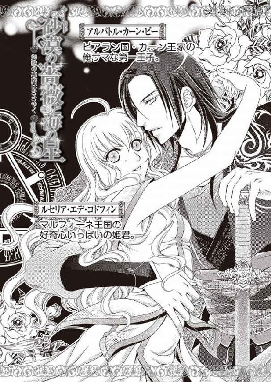
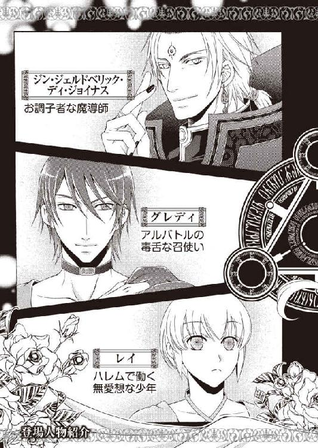
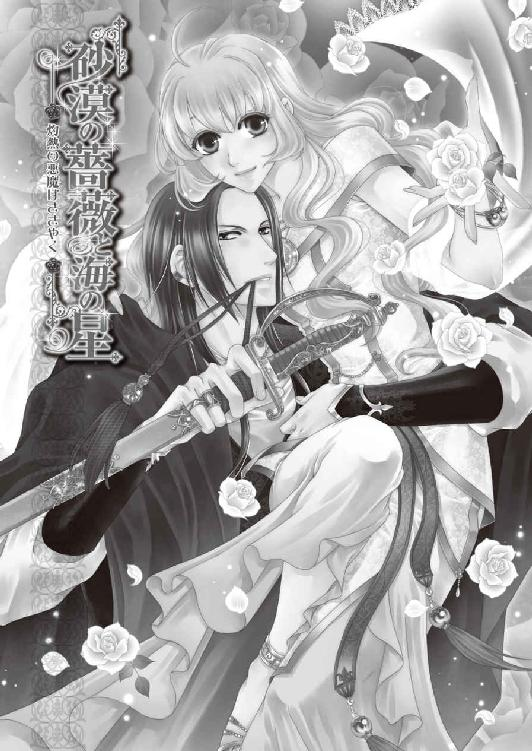
ルセリアは、今朝届けられたばかりの花嫁衣装を前に、もう何度ついたかわからない感嘆のため息をついた。
レースがたっぷり使用された純白のドレスは、袖や裾に高価な宝石がたくさんちりばめられていて、部屋の明かりに煌めいている。肩から背中にかけて花をモチーフにした銀糸の刺繡が豪華に施されていた。未だかつて見たことのない美しいドレスだ。
「これってほんっとうに、ほんっとうに、私が着るのね」
ドレスは触れるのもためらわれるほど繊細な輝きを放っていた。見るたびに新しい発見のあるドレスを、ルセリアは一ヶ月後身に纏い、初恋の人と結婚式を挙げるのだ。
ここマルフォーネ王国や他国でも女性は政略結婚や略奪された末に花嫁にされることが多い中、初恋の人と結ばれる。こんな幸せな結婚はあまりない。
もう何度も、これは夢なのではないかとほっぺたを叩いたが、やはり実感がわかなかった。
この結婚について正式に披露されていないことも、実感がわかない理由なのだ。
ルセリアの初恋の相手であり、将来を約束した男性は、大国であるシシア神国の第一王子、サイファス。対してルセリアはマルフォーネ王国の姫とはいえ、時々地図に載せるのを忘れられるほど小さな国だ。
縁談としては致底あり得ない小国の姫と大国の王子が婚姻関係を結ぶことから、相当の準備をしなければ、この婚姻に反対する者からルセリアへ嫌がらせや危険が及ぼされる可能性があったのだ。だから正式な披露はルセリアがシシア神国へ嫁入りした後にされることになっていた。
もともと兵士の数が少ないマルフォーネ王国はシシア神国からの申し出により、怪しまれない程度の兵士が派遣されていたが、彼らはみなマルフォーネの兵士の恰好をしていて、情報が漏れないよう配慮されていた。それでもいつもより物々しくなるのは、仕方がないのだろう。
ルセリアは宝石どころか金糸も銀糸も使われていない自分のドレスを見下ろした。
大きな襟やたっぷりと膨らんだスカートの裾の花柄刺繡やレースは綺麗だが、高価ではない。
そんな衣装しか着ることのない田舎の姫が、あのサイファスの妻になるのだから醜い嫉妬や羨望に晒されてしまうのは仕方がないのだろう。
「ルセ、まだ起きているの？ そろそろ休んだほうがいいわよ」
一つ上の姉、メイフェスが心配そうにルセリアの部屋を覗いた。
メイフィスは花嫁衣装の前に座り込んでいるルセリアの隣に腰を下ろし、優しげに微笑む。
「メイ姉様。私、私ね。まだ実感がないの。夢かもしれないってまだ思っちゃう」
「そうね。この先のことを考えたら貴方が不安になるのもわかるわ。お父様がおっしゃっているのだけれど、ルセがやめたいというのなら、それでもいいって」
「心配してくれてありがとう。でも私は大丈夫。きっとなんとかなるわ！」
嫁入り先が大国であればあるほど、しきたりに縛られ自由が奪われる。しかも姉のメイフェスと違い、美人でもおしとやかでも優雅でもない。ルセリアは今も裸足で草原を走り、寝転がるのが大好きだった。十六歳になってもまだ、ドレスを汚しては叱られてしまうほど、レディにはほど遠い女の子だ。
それを自覚しているルセリアとしては、価値観からしきたりまで何もかもが違うシシア神国へ嫁入りすることに、多少の不安を感じていた。それでも幼い頃に出会った、初恋の相手との約束を大切にしてきた。
九歳の時に身につけて以来、どうあっても外すことができないブレスレットに触れながら、ルセリアは笑みを浮かべる。
ブレスレットは純金で、表面全体にブドウの蔦や葉に果実、それをついばむ小鳥が彫られている。七羽いる小鳥の目には、それ一つで屋敷が建つと鑑定士に言われた、空の雫という煌めく石がはまっていた。見るたびに美しさにため息が漏れる。
ルセリアが幼い頃の約束を忘れず信じてこられたのは、初恋の少年から贈られたこのブレスレットのおかげなのだ。
「そう、ならいいの。ルセの決心が揺らがないのなら、安心よ。じゃあそろそろ私も休むわね。ルセも休みなさい」
「お休みなさい、メイ姉様」
メイフェスが去ってしばらくしてから、ルセリアは立ち上がると、純白のドレスに添えられていたカードを取り出した。
――今宵、白き月が真上に昇る頃、出会った場所でお待ちしております。二人にとって大切な場所ですからどうか誰にも話さずに、お一人でいらしてください。
カードを折りたたんでポケットに入れると、ルセリアはちょっとした冒険に心をときめかせた。そこで兵士たちの目をかいくぐることのできる通路を使い、誰にも見とがめられることなく、城の裏手へと出ることに成功した。
城の背後は鬱蒼とした森になっており、山の頂上へ向かう細い小道がある。そこを道なりに進むと途中で小さな湖に出るのだ。
小さい頃からのルセリアの遊び場だ。白い薔薇が咲き乱れ、小さな生き物が数多く棲んでいる。ルセリアはよく葉の上を飛び交う彼らの姿を眺めていたものだ。
カンテラを一つ手に持っていたが、頭上にある月がいつもより青白く輝き、小道を白く浮き立たせている。湖に一歩近づくたびに心臓の鼓動が速くなり、枯れ草を踏みしめる音よりもそれは大きく聞こえそうだ。
「明かりだわ！」
ルセリアは明かりに向かって駆けだしたが、そこにいたのは黒いマントコートをすっぽり被った二人組の男で、シシアの者にはとても見えない。彼らの異様な雰囲気に思わず後ずさるルセリアに、一人の男が尋ねた。
「ルセリア様ですね」
「えっ、ええ。あのっ、サイファス様はどちらに？」
男は唐突にルセリアの左手を摑むと、自らに引き寄せてブレスレットを見つめた。何かがおかしい、逃げたほうがいいとルセリアの心は警笛を鳴らしたが、摑まれた手の強さに動けなくなっていた。
「確かに、ルセリア様だ」
「離して......っあ！」
摑まれた手をふりほどこうとした瞬間、後ろ手に拘束された。声を上げようとしたが、あっという間に口枷がつけられ、身体も布で覆われてしまった。
「っ！」
「痕跡を残すな」
「はっ！」
誰にも伝言を残さず、一人でここに来たのは軽率だったと今さら後悔しても遅い。だが、ドレスに添えられたカードのサインはシシア神国の証に見え、疑うことなく出かけてしまった。
サイファスとの婚約はまだそれぞれの国の一部の者しか知らされていない。とはいえ婚儀に反対する者たちが何か謀反を起こさないとも限らない。誘拐や殺しなどの心配はまだしなくてもいいとルセリアは勝手に楽観していたのだ。
ルセリアはできる限りの抵抗を試みたが、無駄だった。
担がれたまましばらく移動し、どこかの板間に下ろされる。身体を覆っていた布や口枷は取り去られたが、目隠しされた上に手足も拘束されたままでルセリアは闇の中に囚われていた。ガタガタと床から振動が伝わってくるところから、もしかしたら馬車に乗せられ移動しているのかもしれない。
「ねぇちょっと！ サイファス王子との結婚に反対する誰かなの？」
ルセリアは闇に向かって声を荒げた。だが、いくら待っても返事はないため、ルセリアはさらに言葉を続ける。
「私を殺しても、問題は解決しないわよっ！ ねえ、聞いてる？ なんでもいいから答えなさいよっ！」
人の気配はするのに誰も答えない。ただ突き刺さるような視線ばかりを感じて、次第に恐怖がルセリアの身体を支配していく。
「私を殺したらサイファス王子が黙っていない......と、思うわ」
不意に揺れが止まった。身体を強ばらせて耳を澄ませていると、扉が開閉する音が聞こえた。
「外してやれ」
男の声が響くと、ようやく目隠しや手枷が外された。急に目の前が明るくなって、ルセリアは光に手をかざした。
「手荒なまねをして悪かったな」
眩しさに目を擦っているとルセリアの腰に男が手を回し、力強く引き寄せる。
見知らぬ男の胸元の温もりに驚いたルセリアは、反射的に手で押しやろうとした。が、腰に回されている手は鋼のように頑丈で、ぴくりとも動かない。
「貴方は誰なの!?」
眼光の鋭い黒い瞳と視線が合ったが、男から放たれるただならぬ威圧感に、ルセリアは身が竦んだ。
まるで盗賊のような全身黒ずくめの恰好に、恐ろしく整った容貌。初めて会う相手にもかかわらず、男はルセリアの左手首にはまっているブレスレットに触れながら、うっすらと笑った。
「私を殺すつもりなのね」
サイファスは、普通ならすれ違っても目も留めてもらえないような大国の王子だ。小国の、しかも美しくも聡明でもないルセリアとの結婚など、許せない者は多いだろう。
当然、今の窮地の理由はそこにあるのだとルセリアは考えた。だが男は、ルセリアの言葉に冷えた眼差しを向けたまま形のいい唇をニッと歪ませるだけだ。
「いや、そなたを我が花嫁とする」
「我が花嫁って......誰のこと!?」
「ルセリア・エデ・コドフィン。そなたを俺の花嫁とする。――女は略奪された者のものになるということさえ、知っていればいい」
一生のうち、到底耳にすることなどない、さらには想像すらしたことのない台詞を聞かされたルセリアは極限状態に置かれながらも思わず笑いが漏れた。
「何がおかしい？」
「だって、おかしいわ。ねえ、私を見て。ちゃんと見てっ！」
「見ているが、なんだ？」
「美しい姉上ならわかるけど、私は誰かに奪われるような絶世の美女じゃないわ。なのに私が貴方の花嫁にどうして選ばれるの？」
略奪されるのはたいてい誰もがさもありなんと思う美貌を持った者なのだ。自分で言うのも複雑だけれど、ルセリアは略奪という言葉からは遠い、ごく普通の容姿だ。
これまでも城を訪れた貴族はいつだってルセリアの姉、メイフェスに恋をした。見合いの話もいつだって姉にばかりでルセリアには来たことがない。
確かに、美しい貴族の女性が国王に略奪された話はあるし、貴族が商人の美しき妻を無理やり自分の妻にする話もあるが、まさか自分がその立場になるとは思いも寄らぬ事だったのだ。
「俺にとってそなたこそが絶世の美女だ」
男は腰に回していた手を引き寄せるようにしてルセリアの身体を抱きしめると、抗う隙も与えず、唇を重ねてきた。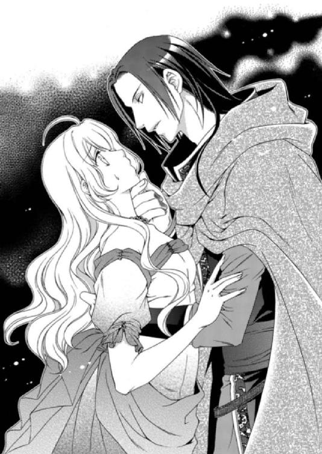
「うっ......！」
一瞬、ルセリアの頭の中は真っ白になったが、触れた唇の熱さに正気を取り戻した。すかさず口内に入り込んで傍若無人に振る舞おうとした男の舌を、嚙み切ってやろうとした。が、舌は速やかに去り、勢いよく嚙み合わせた自分の歯の痛みだけが残った。
「ずいぶんと威勢がいい」
「今度、無礼なまねをしたら、本当に貴方の舌を嚙み切ってやるから！」
「ぜひ、手合わせ願いたいものだな。もっとも、舌が嚙み切られたとしても、そなたがもう俺のものであることに変わりはないが」
「残念ながら貴方のものになどなりません！ いい、今に兵士が私を助けに来て貴方なんか蹴散らしてくれるわ。――でもここで私を解放してくれるのなら、罪には問わないわ」
気がつくとまたルセリアのブレスレットに触れてくる男の手を払い、ルセリアは怒鳴った。
「それは無理だ。そなたを、俺の国へ連れ帰る」
「俺の国って？」
相変わらず男の腕の中に囚われたまま、ルセリアは目を見開く。
「俺の名はアルバトル・カーン・ビー。ビアラン国の第一王子だ」
「カーン・ビー......砂漠の悪魔と呼ばれる......」
噂だけなら聞いたことがあった。
雨の降らない太陽の国、ビアラン。広大な砂漠の中にある豊かな大国。けれどそこを治める王は冷酷無比で、国民だけでなく召使いたちからも恐れられている。部下の失敗に対する罰は、この世のものとは思えないほど苦痛に満ちたものだと聞く。
「なんだ、噂は届いているようだ。ならば説明しなくとも、おとなしくしていたほうが身のためだと理解できるはずだな」
盗賊のように見えた男は王子だった。ルセリアはその事実に驚きつつも、だったら敬意を払えば少しはこちらの言葉に耳を傾けてくれるかもしれない......と、ここは下手に出ることにした。
「お、お願いいたします、アルバトル王子。貴方が王子の品格を備えているのなら、このようなことなどなさらず、私を城へ帰してください」
「無理だと言っている。特にあの綺麗なだけで見かけ倒しのシシアの王子に渡すつもりはないな」
「サイファス王子をご存じなの!?」
「ああ、挨拶程度だがな。綺麗だがあれは飾り物だ。紳士だの人徳者だのという噂をよく耳にするが俺はそんな男など信じない。どんな人間でもそうだが風聞が立派な奴ほど胡散臭いものだからな」
さすがに大国同士の王子ともなると、顔を合わせることもあるのだろう。とはいえ、挨拶程度にしか知らない相手をどうして胡散臭いと言えるのだ。
ルセリアはアルバトルのあからさまな不快感に対し、逆に腹を立てた。
「よく知らない人のことを、どうしてそんなふうに言えるの!? わかった、敵わない相手だから悪口を言いたいだけじゃないの？」
「面白い言い方をする。だが、知らない相手と政略結婚するそなたが言えるのか？」
「いいえ、サイファス王子はいつか迎えに来てくれると約束してくれた私の初恋の人なの。だから知らない人でもないし、政略結婚でもないわ！」
ルセリアの初恋は、まるでおとぎ話のような結末を迎えようとしていた。ただ、結末というより新たなおとぎ話の始まりといえそうだが――。
「初恋の相手？ サイファスがそなたの初恋の相手だと？」
「そうよ。サイファス王子は私と再会したときにそう告げてくれたもの。当時のことも覚えてくれていたわ」
不機嫌だったアルバトルの表情に、うっすらと笑みが浮かんだが、それは嘲笑だった。
「何がおかしいのっ!?」
「そなたの初恋の相手は誰でもない、この俺だ」
予想もしなかった言葉を耳にしたルセリアは、一瞬、意識がどこかへ飛んだような衝撃を受けた。
「何を言ってるの!? 噓よ！」
「では聞こう。サイファスではなくてなぜ、俺が噓をついていると言えるのだ？ この俺がそなたの理想とはかけ離れているからか？」
「そっ......そうじゃないわ。アルバトル王子。お戯れはよしてくださいっ！ どんな経緯があってこのようなことをされたのか存じませんが、私を国へ帰して......あ！」
アルバトルがルセリアの顎を捉え、指先が頰に触れる。顔を背けようとしても、顎を摑まれているため、アルバトルから視線を外すことしかできない。
彼の漆黒の瞳には怒りの炎が灯っていて、あまりの恐ろしさに身体が硬直し、力が抜けそうになる。それでもルセリアは必死に奥歯を嚙み、自らを奮い立たせた。
「離してっ！」
「諦めるんだな。そなたは昔から俺のものだ」
「......嫌よっ！ 離してっ！」
ルセリアは両手でアルバトルを押しやろうとしたが、手首を摑まれて、押し倒された。そしてアルバトルは愛おしそうにルセリアのブレスレットに触れる。
「我が国へ無事に到着するまで、そなたはしばし眠りにつくといい」
「絶対に嫌よっ！ 嫌っ......っあ――！」
不意に甘い香りを吸い込むのと同時に、ルセリアの意識は遠のいた。
――初恋の人と結婚することがルセリアの夢だった。
少年とはルセリアが九歳の頃に出会った。
森の中にある、白い薔薇に囲まれた湖の側で、その少年はひっそり佇んでいた。
ルセリアは病気がちの母のため、毎日のように湖岸に咲く白い薔薇を摘みに出かけていたのだが、そこで人と出会ったのは初めてだった。
黒いフードマントから覗く顔はやけに青白く、伏せられた目から頰にかけて涙が伝っていた。悲しみに堪えているのか、口元を覆うスカーフや丸めた背が震えていて、ルセリアもつられて胸が痛んだ。
右手には赤いスカーフを握りしめていたが、白い薔薇に囲まれた中にあって、その鮮やかな色彩が記憶に焼き付いている。
身長はルセリアより少し高い程度。目元に幼さが残っていたため、年齢もさほど変わらないように見えた。なのに、この世のあらゆる者を拒絶しているかのように感じる彼の大人びた雰囲気に、普通ならば近づこうとはしなかっただろう。
けれどルセリアは人一倍好奇心が強く、また悲しみに暮れる者を見て、知らぬ振りができなかった。
ルセリアは少年に近づくとポケットから取り出したハンカチを差し出した。
「ねえ、大丈夫？ 泣かないで」
少年はルセリアにチラリと視線を流すと、手に持っていたスカーフを胸元へと隠し、さらにフードを深く被って、背を向けた。揺れるフードの胸元の隙間から見えたのは、黄金の首飾り。マントの裾から覗いたのは輝く宝石に彩られた剣の鞘。
幼いルセリアはそのどれもがとても高価で特別なものだと気づいた。それらは木漏れ日にキラキラと輝いて見え、気がつくとルセリアはまた少年を追いかけていた。
少年は唐突に立ち止まり、振り返らずに言った。
「......僕は泣いてなんかない」
「ううん。泣いてたよ」
「泣いてない」
「どうして噓をつくの？」
「男は特別な日でなければ、泣いてはならぬと母上が言った」
「今日は特別な日じゃないの？」
首を傾げるルセリアにようやく彼は振り返り、言いにくそうに呟いた。
「......特別な日だ」
「だったら噓をつかなくていいでしょう？ 私の母上は泣いてもいいけど、噓をついてはいけないと言うもの」
「そなた、名は？」
「私はルセリア。ルセリア・エデ・コドフィン。すぐそこのお城に住んでるの。貴方は？」
少年はもの言いたげにこちらを見たが、名前を告げることなく去っていった。
けれど翌日、彼はルセリアが来るのを湖の畔で待っていて、ルセリアが薔薇を摘み終わるまで、側にいた。どういうわけか彼はいつもフードを目深に被り、また聞いても決して名乗らず、ルセリアの質問にも一切答えることがなかった。それでも何度か会ううちに、少年の人を寄せ付けない雰囲気は和らぎ、ルセリアの話に耳を傾けてくれるようになった。またどちらかが会えないときは、大きな木の根元に開いた穴の中に手紙を置くようにもなった。
いつしかルセリアは、ちょっとした秘密が持てたことが嬉しくて、名もなき彼と会える時間を楽しみにするようになっていたのだ。
そんなある日、少年はルセリアにこう囁いた。
「ルセリアにだけ僕の秘密を教えてあげる」
「秘密？」
「誰にも言わないと約束して」
「うん。わかった。誰にも言わない」
「――――！」
ルセリアは耳元で囁かれた言葉を聞いた途端、少年が引き留める声を無視し、走って逃げた。
何を聞かされたのか覚えていないが、とても怖かった記憶がある。
だからしばらく湖から足を遠ざけていたのだが、やはり彼に会いたくなって、出かけたのだ。
いくら待っても彼は姿を見せず、もしやと思ったルセリアが大きな木の根元に手を入れると、小さな巾着があった。布が薄汚れていたことから、少年はもうずいぶん前から訪れていないようだった。
巾着の中からは金細工が見事なブレスレットと、折りたたまれた手紙が出てきた。
手紙を開くと、そこにはこう書かれていた。
――必ずルセリアを僕の花嫁として迎えに行くから、待っていて。
ルセリアは手紙を信じた。最初は毎日、それが週一度になり、一ヶ月に一度になりながらも、湖を訪れた。その後、家族に不思議な少年との出会いを打ち明けたが、相手も忘れているだろうと慰められて月日が経った。それでもルセリアは定期的に湖を訪れては、新たに手紙が置かれていないか確かめていたのだ。
だが、彼とは二度と会うことはなかった。
秘密を聞かされたルセリアが逃げ出したことで嫌われたと勘違いをして、姿を消したのだろうか。それとも家の事情で来られなくなったのか。
少年から聞かされた秘密だけでなく、どんな顔をしていたのかも記憶の霧の中に紛れている。
ルセリアの中では彼の悲しみに満ちた瞳と、手にしていた赤いスカーフだけが鮮やかに残っている。そして小さな胸のときめきも。
――必ずルセリアを僕の花嫁として迎えに行くから、待っていて。
それから七年後、ルセリアが十六歳を間近に控えた春、父から縁談の話を聞かされた。
その相手こそがルセリアの初恋の人だと告げられた。だがさらに驚くべきことに、初恋の相手はシシア神国の第一王子、サイファス・ティ・ラフワンだと判明したことだった。
会えば誰もが憧れるというほど有名な王子で、ルセリアも噂を耳にしていた。
優雅な物腰、穏やかな笑み。聡明さをたたえた瞳を見たら恋に落ちない女の子はいない、と。
そんなサイファスがルセリアとの婚姻を強く望み、父を説得したと聞いた。
本当かどうか信じられないまま、ルセリアはサイファスと再会したのだ。
サイファスは、ルセリアとの出会いを確かに覚えていた。交わした手紙のことや、彼が贈ったブレスレットのことも。ルセリアは彼こそが初恋の少年だと確信したのだ。
深い水の底からゆっくりと浮かび上がるような浮遊感と、額に浮かんだ汗が頰を伝うかすかな感触にルセリアは目を覚ました。
「私......どうなって......」
肌に感じる温度は、ルセリアの国よりよりも高い。いや、暑い。
目に映るのは、高い天井。外から流れ込んでくる温かい風に揺れるカーテン。
どれほど眠っていたのかわからないが、ルセリアは頭の芯が疼いてすぐに身体を起こすことができずにいた。寝台に身体を伸ばしたまま何度も目を瞬かせて、はっきりと意識を取り戻そうとしていた。
確か......湖まで行って誘拐......された――私が!?
女性が誘拐されて、無理やり結婚をさせられる話は聞いたことがあった。売られてしまう可哀想な話も同じだけ耳にしてきた。
けれど閉鎖的な小国に生まれ、戦に遭遇することもなく幸せに育ったルセリアには、外の世界での噂はすべて本に描かれた物語としか感じられなかったのだ。自分がその渦中に置かれることなど想像すらしなかった。
目が覚めるとすべては夢で、見慣れた自分の寝台の上に寝転がっていたのなら、どれほどよかっただろう。
ようやく意識がはっきりとしてきたルセリアは、慌てて身体を起こした。
「ここはどこなの!?」
思わずそう叫んでいたが、答えてくれる人間は誰もいない。
ルセリアは動揺しつつも、警戒する猫のようにそろそろと寝台の上を這って見回す。
五、六人でも悠々寝られるだろう大きな寝台は、ルセリアのものとは違って低い。頭上にある天蓋は円形で、笠の縁からレースが垂れ下がり、寝台の周囲を覆っている。
ルセリアはレースをかき分けて寝台から床に足を下ろすと、また周囲を窺った。
部屋はとても広く、寝台の周りには触れるとさらりとして気持ちのいい敷物が置かれているが、床は磨かれてつるつるとしていて、素足がボンヤリ映っている。
部屋の端には腰ほどの高さの花瓶に色とりどりの生花が飾られ、半ドーム状の出入り口の向こうに別の部屋が見え、低いソファに同じだけ低いテーブルが見えた。柱や壁は薄いベージュで、窓というものはなく、バルコニー側の壁がない。
ルセリアは足音を立てずにバルコニーへ出たが、思わず声を上げていた。
「だめだわ。逃げ出せそうにないわ！」
手すりから下を覗き込むと、地上からかなりの高さがあって、とても降りられそうにない。左右を見渡したが、バルコニーは部屋ごとに仕切られていて、隣へも移動できなかった。
「でも、すっごく気持ちいい眺め」
バルコニーから宮殿すべてが見渡せるわけではないが、手を広げたような葉っぱが建物の間からあちこち顔を出していて、砂漠の国なのに緑が多い。しかも池や水路が豊かな水をたたえていて、ルセリアは驚かされた。
砂漠地帯は緩やかな坂になっているようで、宮殿の外にある街の家並みもよく見えた。
長方形のブロックを積み重ねたような建物が無数にあり、宮殿にもある背の高い葉っぱがたくさん生えていた。
人々の住まう国土を囲んでいるのは塀と、その外側に生えている麦のような穂のついた植物だ。その向こうには広大な砂漠が広がり、かなり遠くの方に海とおぼしき、うっすらと青い線が見えた。ここから見渡す限りでは砂漠にオアシスはなく、川もなければ、他に街もない。
「気に入ったか？」
不意に背後から声を掛けられ、ルセリアは振り返ろうとした。だが、アルバトルが背後から両手を伸ばしてバルコニーの柵に手をかけたので、間に挟まれたルセリアは逃げられない。
「いいえっ！」
「これからここがそなたの住まう国だ」
「住みませんっ！」
「俺は約束を守っただけだ。なぜ、それほどまでに俺を毛嫌いする？」
「こんなことをされて、嫌いにならないほうがおかしいでしょう？」
ルセリアは必死に平静を装っていた。
だいたい、目が覚めたらどう考えても移動に一週間はかかるだろうビアラン国にいたのだから、混乱するのも当然だ。
「そなたの気持ちなどどうでもいい」
「なんですって！」
「昼も夜も、そなたが故郷を思い出し寂しい思いをする暇などないほど、この俺が愛してやる。ルセリアは俺のことだけ考えていればいい」
「私はそんな身勝手な愛情なんて......っ！」
ルセリアが声を上げると、またもや力強く腰を引き寄せられる。盗賊のような恰好から、王子らしい服装に変わっていたがアルバトルの横暴さは変わらない。王子というのなら、もう少し優雅であってもいいはずなのに、彼にはそれがないようだ。
「いいか、ルセリア。俺が優しくしている間に学ぶんだな。ここでの味方は俺だけだ。俺が興味を失えば、国に戻してやるなどという面倒はせず、熱い砂漠に着の身着のままで放り出されるということを、な」
「脅されても怖くないわよ」
「俺もだ。そなたの可愛い目でどれほど睨みつけられても怖くなどない」
すかさず右手を摑まれルセリアの手の甲にキスが落とされた。手を引っ込めようとしたが、しっかり摑まれていてできない。
「穢らわしい！ 離してよ！」
ルセリアが眉間に皺を寄せ、口をへの字に曲げると、アルバトルは楽しげに目を細め、背に回した手に力を込めた。
またキスされるとルセリアが身体を竦めたところで、アルバトルの側にひっそりと佇んでいた男が声を掛けた。
「王子。嬉しくて仕方がないのは理解しておりますが、そろそろ参りませんと」
「ああ、グレディ。......わかっている」
右手首を摑まれたまま、バルコニーから部屋へと引き入れられて、そこでようやく手が離される。
そこはルセリアが目覚めたときにドーム状の通路と繫がっているのが見えた部屋だ。
部屋を仕切るために使われているカーテンや、低いソファに掛けられたカバーには淡いピンク色が使われ、柔らかい感じに仕上げられていた。
「そなたのために用意させた部屋だ。そなたが先ほど眠っていた俺の部屋とも繫がっている。だが、外へは出られない。扉の前には警備のための兵があちこちにいる。逃げることは考えない方がいい。無駄なことだからな」
「......」
「グレディ。ルセリアに俺の花嫁にふさわしい身支度をさせるんだ。この国のものを全身につけて過去を捨てさせろ。いいな」
「えっ......」
「グレディはしばらくルセリアについていろ。――ああ、衣服だけでいい、わかっているな」
アルバトルはそう言うと部屋から出て行った。
「姫、どうぞこちらへ。王子のご命令ですから」
グレディはどう見てもアルバトルよりずっと年上だが、彼の口調はあくまで忠実な臣下のものだ。彼に、アルバトルがルセリアを誘拐したことは一国の王子としてふさわしくない行動だと理解してもらうことはできないだろうか。
「グレディさん、聞いて。私は――」
「姫、私のことはグレディとお呼びください」
「あの、グレディ。私は誘拐されてここへ来たんですっ！ だから」
ルセリアはグレディの腕を摑み、訴えようとしたが、彼はきっぱりと言った。
「申し訳ありません。何をご相談されようと、私は姫の助けにはなりません」
「そんな......！」
「アルバトル王子のご命令です。――姫に急いで湯浴みさせるように」
グレディはルセリアの手をやんわりと解くと、外に控えていた数名の侍女に命令した。
侍女たちはすぐさまルセリアを取り囲み、さらに奥の部屋へと押しやろうとする。
抵抗しようとしても何人もの侍女の手で湯殿へ向けられ、ルセリアは身につけていた衣服をあっという間に脱がされていく。
「待って、私は！ やめてっ、嫌よ！」
「早くお脱ぎください」
「嫌よ、離してっ！ 私は着替えなどしないと言ってるでしょう！」
「いいえ。アルバトル王子のご命令は絶対です。あまり騒がれますと、ルセリア様のお里が知れますよ」
「私はっ......」
ここで無様に暴れたところで、外には兵士やグレディも見張っているだろうから、逃げることはできない。どれほど不快な思いをさせられようと、今しばらくは侍女たちに従うしかないのだろう。
ルセリアが悔しくてたまらない気持ちを必死に抑えながらも、されるがままになっていると、今度は小さな池ほどもある浴槽のある部屋へと移動させられた。
浴槽からは湯気が立ち上っている。ルセリアは促されるまま階段状の浴槽へ足を踏み入れ、腰まで入ったところで座るよう指示された。
まずは髪を洗われ、次に身体を洗われる。自分でしたいと頼んでも絶対に自由にさせてくれず、侍女たちは慣れた手つきでこなしていく。
ルセリアも姫という身分だが、これほどまでに侍女に構われたことはなく、身体に泥を塗られたり、眉を整えられたりもしたことがなかった。それらがたとえ女性の手であっても、見知らぬ者に身体に触れられるのは、不快でしかない。
数時間後、ようやく解放されたルセリアは一人で湯に浸かることを許された。
そっと湯船の縁に頭を置いて目を閉じ、しばしの安堵を味わう。ただ、こういう時に限って、つまらない噂話がルセリアの耳に入ってきた。
「そういえば、どうしてグレディが外で見張っているの？」
「私たちがあの子に何か都合の悪いことをすると思っているのよ。こんな明るい場所で何かするわけないでしょう」
「妾腹の王子が王の薦める結婚を拒否してきたのはどれほど美しい女性のためなのかって興味を抱いてきたけど......この程度とはねえ」
「ほんとね。姫とは聞いているけど、着ていたドレスもあまり高価とはいえないものだし、卑しい国の出かもしれないわ。でも髪は私たちの好きな黄金に似て綺麗だわよ」
「髪だけじゃあね」
聞こえてるんですけど......。
だだっ広い浴槽に身を沈めつつ、ルセリアはそっとため息をついた。
侍女たちは湯殿の端で後片付けをしながら、小声でこそこそと話しているのだが、すべてまる聞こえだ。
彼女たちの会話から推測するとアルバトルは以前からルセリアを知っていたということになる。またアルバトルは正妃の子ではないこと、侍女たちにはとても恐れられていること。王に溺愛されていることなど、様々なことを知った。
あくまで噂だが、少しはアルバトルのことを知る手がかりになるはず。
「ルセリア様そろそろお上がりになって、こちらへ」
呼ばれて目を開けると、二人の侍女は大きなタオルを広げて立っていた。
「身体を拭くくらい自分でできます」
「すべてアルバトル王子のご命令です」
ルセリアは新しく用意された衣装を着せられた。不快に思いつつも、シフォンドレスを身につけた途端にその着心地のよさに驚いた。通気性のいいサラリとしたシフォンが肌をふわりと包むと、暑い気候も不思議なほど涼しく感じるようになったからだ。
「......あら、眉を整えて唇に少し紅をさすとちょっと見られるようになったわ」
「来たときが酷すぎたのよ。眉はどこか野暮ったくて、田舎娘みたいだったからねえ」
この国の眉の流行なんて知らないし、手入れだって自分なりにきちんとしてきたわ......！ と、反論をするのも馬鹿馬鹿しくて、ルセリアは沈黙していた。
「どうぞ、グレディ。王子のもとへお連れになってくださって結構ですよ」
湯浴みや着替えを終えて外へ出されると、侍女たちはルセリアをグレディに引き渡し、深々と一礼をして去っていった。一瞬の隙も逃さず逃げ出すつもりでいるのに、チャンスは訪れず、ルセリアはグレディによってもとの部屋へと戻された。
「ルセリア姫、アルバトル王子は立派な方ですが、大変気性の激しい方でもあります。あまり反抗なさらないほうがよろしいですよ」
「私を誘拐して、突然花嫁になれと命令する。これが立派な王子のなさることなの？」
「そうおっしゃらずに少し冷静になられて、アルバトル王子をごらんになってみてはいかがでしょう。きっと素晴らしい一面を知ることができ、愛もわき上がるはず」
「砂漠の悪魔と誉れ高い王子に、愛などわき上がったりするわけないでしょう！」
「アルバトル王子が砂漠の悪魔......ですか」
「私の国ではそう聞いているわ」
「大変興味深い噂ですが、ならば悪魔を怒らせないよう、淑女らしくお過ごしください。――何かありましたら外で控えておりますので、お呼びくださいませ」
グレディは口調が穏やかなので、一見、こちらの相談に乗ってくれるように思えるのだが、あくまでアルバトルの臣下の立場を崩すことなく部屋から出て行った。
一人きりになったルセリアはバルコニーへ出ると、飛び降りることのできない高さをあらためて確認し、ため息をついた。
砂漠を渡ってやってくる風は熱く、日差しも強い。ルセリアは太陽を遮るようにして、中庭に見える小さな池を眺め、唇を嚙んだ。
今頃、父や姉は心配しているだろうし、ルセリアを捜すために兵が出されているはず。
だが誰に連れ去られたのか、みなに気づいてもらえているのだろうか。
マルフォーネ王国にとっては願ってもない婚姻だったが、シシア神国内だけでなくサイファス王子に想いを寄せる大国の姫もいるだろうから、反対や疑問の声も多いはず。だからルセリアに消えてもらいたい相手はいくらでも出てくるだろう。その中にビアラン国は含まれているかどうかは定かではない。
ビアラン国の〝砂漠の悪魔〟アルバトル・カーン・ビーにルセリアが連れ去られたなど誰が予想できるだろう。
最悪の場合、サイファスとの婚姻から逃げ出したなどと噂が流れでもしたら、シシア神国の怒りを買って国を滅ぼされてしまう。どうにかして今の状況を知る方法はないのだろうか。
ルセリアが焦燥感に駆られながらもバルコニーから戻ると、部屋の中に見知らぬ男性があらぬ方向から歩いてやってきた。
「やあ、やあ、やあ。貴方がルセリア姫か。なかなかに可愛らしい姫さんだねえ。アルバトルが花嫁を連れて帰ってきたと聞いたから、楽しみにしていたんだよ。まあ......なんだ......」
男はベラベラと話しながらルセリアの周りを品定めするように歩き、言葉を続けた。
「受け入れられない輩もいるだろうが、我が輩は好きだねえ。姫さんは可愛いぞ。そうそうそう、我が輩は女性の好みの幅が広いんだよ。心の広さと同じだけあるぞ」
「......貴方、誰？」
「おうおう、そうだった、そうだったな。我が輩の名はジン・ジェルドベリック・ディ・ジョイナス。どうぞお見知りおきを」
男はそう言って笑顔で顎を撫でる。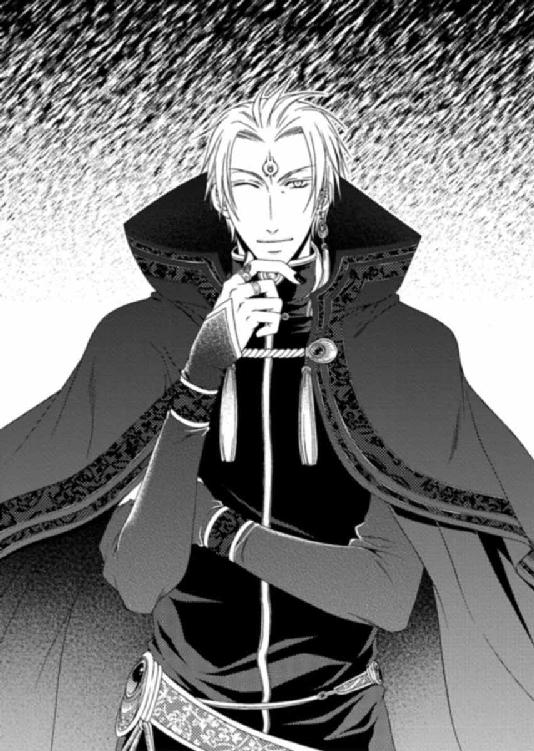
見た目の年齢は三十前後だ。赤毛の短髪の後ろだけちょろっと長くしていて、ビーズの紐で結んでいる。左耳に耳飾りを垂らしていて、濃い緑の長いローブを着ており、それらは金糸や銀糸の刺繡がされていた。服装からして兵や召使いとは異なるが、やけになれなれしい。
「ところで、どこから入ってきたの？」
ルセリアには、彼が扉のない壁から出てきたように見えたのだ。
「ああ、壁を突き抜けてきただけだ。たいしたことじゃない」
「壁？ 透けてもないし普通に見えるけど......ゆゆゆ......幽霊？ 何か未練でもあるの？」
「姫さんは可愛い上に、ユニークだな～。我が輩は姫さんのファンになりましたぞ」
「......変なこと言ってないで、何者なのか教えて」
「魔導師なんだが......いや、正確には人と変わりなく見えるが触れることのできる肉体がない魔導師だ。だから壁を突き抜けられたというわけだよ。まあ......なんだねえ、実体のない煙のような存在だといろいろ不便なんだが、これはこれで便利なこともあっていいのか悪いのか、我が輩にもよくわからんのですなぁ。ははは......」
「にににっ、肉体がない!?」
裏返った声で驚くルセリアの一方で、男は相変わらず笑っている。
「そうですぞ。我が輩は偉大なる魔導師。死んだ人間を生き返らせる以外なら、たいていのことはできますな。この身体ですから、制限はありますがねえ」
大げさに手を振って一礼をするジンに、ルセリアは目を輝かせた。
彼は魔導師。不可能を可能にする力を持っている。
「魔導師だったら、私をマルフォーネ王国へ帰すことも簡単にできるはずよね？」
「いやいやいや。できないわけではないんだがねえ......我が輩はアルバトルに仕える身だから、あの王子の意に染まぬことは、一応できないことになっているんだねえ。悪いが諦めてくれたまえ。だがあれはあれで悪い男ではないぞ」
「悪い男よ！ 私はここに無理やり連れてこられたのよ。なのにっ――」
「待て待て待て。そういった身の上を聞かされても、聞いてはやれるが我が輩はなんの力にもなってやれないんだねえ。だから我が輩が困るようなことは言わないでくれるとありがたいねえ」
ジンは人のよさそうな顔をしているくせに、言うことは結構辛辣だ。けれど魔導師の協力が必要なルセリアは、ここで引き下がるわけにはいかなかった。
「お願い、偉大なる魔導師ジン。お父様や姉様が無事でいるかどうかだけでも知りたいの。少しでいいから力になってもらえない？」
「まあ......そのくらいなら力になってやってもいいだろう。ただ～し、姫さんの手をちょ～っと、貸してもらうよ」
「構わないわ。でも、手を貸すって具体的には何をすればいいの？」
「そのままの言葉だ。我が輩には肉体がない。だから魔導師ではあるが、肉体を借りなければなんの術も使えぬのだよ。これがまあ......結構、面倒でねえ。身体を貸せとは言わないから、手だけでいいんだ。よろしいかな」
手を貸す――というのを考えると気持ちが悪いが、せっかく協力してくれる気になっているジンが心変わりしないよう、ルセリアは言われるままに頷いた。
「では、まず水差しから水をこぼして、床に小さな水たまりを作ってくれたまえ」
テーブルに置かれた水差しを手に持ったルセリアは、言われるままに敷物のない部分に水を落として、小さな水たまりを作った。
「水たまりに手をかざし、誰を見たいのかを強く心に念じるのだよ。強～く。強くだ」
ルセリアは小さな水たまりの前に座ると両手をかざし、父や姉のことを強く思った。
すると、ジンが何かぶつぶつと詠唱している声が聞こえ、同時に手先が冷えていく。あまりの冷たさにルセリアは目を開けた。
ジンの手はルセリアの手に溶けるように交わっていた。その下にある水がグルグルと円を描くように動きだし、しばらくすると水面に映像が浮かんだ。
「何か見えてきたわっ！ ――あっ......お父様......メイ姉様......」
「よしよしよし。見えてきた。見えてきたぞ～。我が輩もなかなかやるだろう？」
水面の映像の中で、父は後ろで手を組み、部屋を行ったり来たりしていて、姉はソファに座り、うろつく父を不安げな顔で見つめている。
『......ああ、ルセリアを捜す必要はない。あの子の置き手紙もあったことだし、こうなることはわかっていた。サイファス王子の父君でいらっしゃるジオリバ王もたいそうお怒りだったが......サイファス王子が収めてくださったからな。この度の違約金の話し合いもせねばならぬ。改めて謝罪に伺わなければならないだろう』
父の言葉にルセリアは首を傾げた。
「手紙って何？ 私そんなの書いてないわ！」
「我が輩が用意した。姫さんの筆跡をまねてな。いやあ、簡単だったねえ......『私は新たな幸せを見つけました。だから行きます。捜さないでください』と書いたんだ。その通りだろう？」
「なんですって!?」
ジンの手を摑もうとしたが、彼の言うとおり肉体がないのでルセリアの手は空中を搔くばかりで、どこも摑むことができなかった。
「ジンって本当に肉体がないのね」
「それより、まだ続きがあるようだぞ。見ないのかね？」
もう一度、水たまりを見下ろすと、姉が父に尋ねているところだった。
『お父様......ルセはどこへ行ってしまったの？』
『ルセリアはエリスが突然連れてきた子だ。その時から〈運命の環が巡るとき、ルセリアは自ら姿を消すだろう〉とエリスは言っていた。また、その日が来たら捜すことはせずに静かに見送れと。ああ、ルセリアが自ら去るまでは、我が子として大切に育てるのだとも。お前も覚えているだろう？』
『ええ。絶対に血が繫がっていないことを告げるなと、お母様からきつく言いつかっていました。死の間際にあってもお母様はいつもルセのことばかり心配していたわ。だから私......』
血の気が引いて、手が震える。これ以上見るのが怖いのに、ルセリアは目が離せなかった。
「どういうことなの？」
母が連れてきた子というのはどういうことなのか、ルセリアにはすぐに理解ができなかった。
けれど、姉の言葉を聞いて、自分が父とも姉ともそして亡き母とも血が繫がらない関係であることがぼんやりとわかってきた。
「のうのう、姫さん。言っておくが、我が輩は噓を見せてはいないぞ」
「黙っててっ！」
前から覗き込んでくるジンを視界から消すよう、ルセリアは水たまりを見つめた。
『きっと深い事情があったのだよ』
『でも、ルセには悪いけれど、私は......ホッとしたの。こんなふうに思ってはいけないのはわかっているのだけれど』
『メイフェス、やめなさい』
『だって、お父様。私はずっとサイファス王子に恋をしてきたわ。お父様もご存じのはずよ。でもうちのような小さな国の姫など相手にされないと、諦めていたの。なのに......ルセに求婚なさるなんて。私......どれほど傷ついたことか。ルセのせいじゃないし、腹を立てるのはいけないことだとわかっていても......私......』
姉のメイフェスは可憐で美しい姫君だ。頭もよく、面倒見がいい。小さい頃からそれが自慢であり、ルセリアのコンプレックスでもあった。姉妹なのにどうしてメイフェスはあんなにも綺麗で、自分はパッとしないのだ。姉のようにもっと鼻が高かったら、姉の半分でいいから胸が豊かだったら......と、いつだって悩んでいた。
メイフェスにはたくさんの見合い話が持ち上がっていたが、すべて断ってきた。その理由を今、初めて知った。
血の繫がりがないことを知るのと同じだけ、ルセリアはショックを受けていた。
『わかっているよ』
『お父様、私がサイファス王子をお慰めしてもいいのかしら。こういう考えははしたないことだとお思い？』
『いや、お前の好きになさい。ルセリアはきっと戻ってこないだろうから』
二人の姿はゆっくりと消えていき、ただの水たまりだけが残った。
ルセリアはしばらく呆然としたまま、ジンの呼ぶ声も聞こえなかった。
「ひ～めさん、や！ ん～大丈夫かな？」
「ごめんなさい。少し......一人にして」
ルセリアがそう言うと、ジンはこちらを気にしながらも部屋の端っこに移動したが、姿を消すことはなかった。
ルセリアはもう何も映っていない水たまりを見つめた。
両親はルセリアを可愛がってくれていたし、姉のメイフェスともごく普通の姉妹の関係だった。ただ、ルセリアですら時折、母の愛情がメイフェスより自分の方により注がれていた気がしたのだから、メイフェスからするとその疑問はもっと強くあったはず。
それでもドレスの貸し借りはいつものことだし、ルセリアは美しくて優しい姉が大好きだ。
だが、姉がサイファス王子に想いを寄せていたことは知らなかった。婚姻の申し出はシシア神国からだったが、どんな気持ちでルセリアが嫁入りの準備をするのを見ていたのだろう。
姉の気持ちを知らないルセリアは、一人浮かれていた。無神経なルセリアの言動は、姉の気持ちを深く傷つけたに違いない。
どうにかして逃げ出すことを考えていた。が、たとえここから無事に逃げられたところでルセリアが戻る場所などないのかもしれない。
いや、そもそも、先ほど見た映像が本物なのか、確認のしようがないのだ。ジンはアルバトルに仕える魔導師で、ルセリアに偽りを見せた可能性だってある。
「ジン」
「何かな、姫さん」
ジンは呼ばれて嬉しいのか、すぐさま駆け寄ってきた。だが、ルセリアはジンを睨みつけた。
「これは、罠なんでしょう。ジンはアルバトルの魔導師だから、さっきの映像も偽物よね？ 私を独りぼっちだと思わせて、逃げようとする気持ちを削ごうとしても無駄なんだから！」
「......まあ、まあ、まあ。落ち着いて。なんだなあぁ、疑われても仕方ないのだろうが、我が輩はそのような命令は受けておらんよ。姫さんの姉上がどこの誰を愛しているかなど、創作する理由がないからねえ。だいたい、姫さんのお父上がおっしゃった、なんだった......ああ、そうだそうだ。運命の環が巡るとき......なんてのは、我が輩にも意味不明なことだ。もし、創作するならもっとわかりやすいものにするよ。――さて、姫さんはどう思う？」
ジンの説明は説得力があった。確かにルセリアを孤立させるためのものなら、もっとわかりやすいものにしているはず。だがそれを認めるとすべてが真実になってしまう。
「いいえ、信じないわ。こんなの信じられるわけないものっ！」
ルセリアはかつてない孤独感に襲われ、今は何も考えたくなかった。
アルバトルは今度行われる『慈雨の儀』の打ち合わせを終えると、ビアランから二つ向こうにある友好国、ベルデからの報告を受けた。
「国内で戦だと？ なぜだ」
「まだ未確認ですが、ファントムクリスタルを持つ者が現れたとの情報です。王族同士で奪い合いになっているようですね」
「......またか。どうせ誤報だろう」
ファントムクリスタルは昔からやっかいな存在であるのだ。それらはかつて世界の中心だったと言われ、一夜にして忽然と消えた黄金の都、ネディアの遺産と言われていた。
火・風・水・地・光・闇の六つの使徒が宿る欠片をファントムクリスタルと呼び、欠片を持つ者が現れたという噂が流れただけで大騒ぎになる。が、今のところ本当に欠片を持つ者は現れたことがなかった。
「だが、ベルデは今、農作物の刈り入れ時期だったな。どの程度の被害が出ている？」
「今のところ不明です」
「いずれ誤報だったということで落ち着くだろうが、その頃には農作物がやられている可能性があるな」
「はい」
六つのファントムクリスタルが一つになった時、七番目の使徒・パーフェクトファントムが現れる。
それらはネディア王家の者に継承され、王が選任した守護使徒がパーフェクトファントムを宿し、国防を司っていた。
おかげでネディアは栄華を極め、どの国よりも豊かであったという。
だが、ネディアを征服しようとした王がいた。彼の策略により、守護使徒は瀕死の重症を負い、同時にネディアは攻め込まれたのだ。
守護使徒は死の間際最後の力を振り絞り、世界からネディアを隠し去り、息絶えた。その後、ファントムクリスタルは世界に飛び散り、ネディアの英知や宝は永遠に失われた――という伝説が伝わっている。
伝説であるのにもかかわらず未だ追い求める王は多い。
「いずれ物資援助の依頼が来るだろうから、西の貯蔵庫を開ける準備をしておけ。最終的な決断は父が戻ってからになるだろうがな」
「わかりました」
部下を下がらせたアルバトルは、ようやく自分の部屋にいるだろうルセリアのもとへ急いだ。
湯浴みを終えたルセリアはきっと輝くばかりに美しいはず。彼女の青い瞳は雲一つない青空を思わせ、オレンジがかった金髪は太陽によく映える。
期待に胸を弾ませたアルバトルは、扉の前に佇むグレディに声をかけた。
「ルセリアの支度はすませたか」
「はい、王子」
グレディはアルバトルの教育係だった男で、今は忠実な臣下でもある。もとは今は亡き母の側に仕えていた。敵の多いアルバトルにとって唯一信頼できる相手であり、時に耳の痛い忠告もしてくれる男だ。
アルバトルはグレディに『慈雨の儀』の進行状況とベルデの話を伝えた。
「――またですか」
「世界は相変わらずファントムクリスタルに振り回されているようだな」
部屋へ入ろうとしたアルバトルを、グレディは引き留める。
「......王子、忠告を一つ」
「なんだ？」
「ルセリア姫にとって王子は砂漠の悪魔だそうですよ。とんでもない噂ですが」
「ああ、本人から、聞いた」
「なら話は早いですね。いつもの調子で怒鳴って本物の悪魔にならないよう、お気をつけください」
「余計な心配をするな」
「王子の初恋が叶うよう、私も最大限の協力をしたいと思っているだけですよ」
にこやかに微笑んでいるグレディを押しのけ、中へ入ろうとしたが、今度はジンが扉をすり抜けて飛び出してきた。
「どうした」
「ああっ王子、いやっ、その～実は......姫さんのことでお話が......。いや、いや、我が輩は断じて姫さんを傷つける気はなくてですなあ......」
ジンから水鏡での出来事を聞いたアルバトルは、普通なら余計なことをするなと怒鳴っていた。だが、今は違っていた。
「事実だな？」
「水鏡に映った内容はもちろん事実ですよ。我が輩も驚きましたなぁ。姫さんは我が輩が王子の命令で企んだと思っているようですがねえ、悪者にされてしまいましたよ。我が輩は噓などついておらんのですが......。いやいやいや、困りました」
ジンは水晶髑髏に魂が囚われているため、肉体が存在しない。
鉱山の視察に出かけたアルバトルが砂の中から発見したのだ。ジンの説明によると、最初に水晶髑髏を発見し、目覚めさせた相手――この場合アルバトル――が許すまで、ジンは水晶髑髏から解放されないことになっているらしい。
移動できるのは水晶髑髏の周辺のみで、姿を現したり消したりできる。
見た目は三十前後だが、実際の年齢は相当のようで、本人も思い出せないらしい。肉体がないので何かを摑むことはできないが、人間や動物の身体に憑依することで支配し、動いたり魔法を使うことができるため、アルバトルは重宝していた。そのためジンを水晶髑髏から解放する気はない。
「俺には都合がいい話だ」
ジンを追いやりルセリアの部屋に入ると、ルセリアは敷物の上に座ってクッションを抱きしめたままどうやら泣いているようだった。
「ああ、我が国の衣装がよく似合う。だが、涙は似合わない。泣くな」
ルセリアの隣に腰を下ろして細い肩に手を回そうとしたがすげなく払われる。
アルバトルはムッとしつつも、ルセリアは傷ついているのだと自分に言い聞かせ、できるだけ平静を保つよう、心がけた。
「貴方はなんて酷い人なのっ！ あんな噓を見せるなんて！ 私を独りぼっちにさせたいんでしょう!?」
「ジンから聞いたが、俺はそんな小細工はしない。そなたが見たものはすべて事実だ」
「嫌よ信じないわ！ 私はマルフォーネ王国の王、ノヴェイヤ・エデ・コドフィン王の娘！」
ルセリアは意思の強さを示す口調で訴えていた。青い瞳は涙で潤み、先ほど見たものはすべて噓だとアルバトルが告げるのを待っているようだ。
「望むなら、そなたの本当の両親を捜してやる」
「......いいえ、いいえ。貴方には何も望まないわっ！ ここから出してくれること以外は」
ルセリアはこちらを見ることなく目を伏せて顔を左右に振る。頰から涙がこぼれ落ちるのを、アルバトルは見逃さなかった。
「ここを出て赤の他人の待つ国へ戻ることができるのか？」
「私にとって唯一の家族のもとへ戻るだけ。問題なんてない」
「そなたの姉がサイファスに恋い焦がれているのだろう？ どんな顔をして会えるんだ」
「姉上がサイファス王子に恋心を抱いていたことは知らなかったものっ！ ――違うっ！ これも貴方が企んだことなんでしょう？ そう言ってよっ！」
ルセリアは涙で濡れた顔をこちらに向けたが、泣きはらした目は赤くなっていて、悲しみに満ちた表情をしていた。そのことがアルバトルを激しく動揺させる。
アルバトルの母は十一歳の時に亡くなった。父である王は息子に跡継ぎにふさわしい教育ばかり与え、愛情のかけかたや、人を思いやる方法など教えてくれはしなかった。
「そなたの姉はとても聡明で美しい姫だと、この国まで噂が伝わっている。さぞかし多くの求婚があったはずだが」
「すべて断っていたわ。きっとサイファス王子のことがあったからなのね......」
「そなたはただ、姉のことを何も知らなかっただけだ。むろん、両親が隠してきた事実もな。だが、いずれ知ることになったはず。早いか遅いかだけだ」
少し冷静になったのか、ルセリアはアルバトルの言葉に耳を傾けていた。
「そなたはおとなしく俺のものになればいい」
「嫌よっ！ 私のことなんて何も知らないくせに！」
「そなたはスープによく使うルコの実が嫌い。甘い菓子は別腹らしく、食後にケーキを四つ食べたこともある。小さい頃はカボチャパンツがお気に入りでよくはいていた。頭は鳥の巣のようによくしていたな」
「ど、どうしてそんなことまで......!?」
本当にルセリアは驚いたのか、今までになく目を見開いて、じっとアルバトルを見つめていた。
こうしてルセリアの青い瞳を間近で見ると、美しい宝石にも似ていることに気づかされる。
「そなたのことを知っている証明をしただけだが」
「どうして？ お互い住む国だって近くないわ。いいえ、一週間は移動しなければならない距離よ。なのにどうして、私なの？」
たいていの女性はアルバトルの視線を受け止めることができない。なのにルセリアはアルバトルの目を臆することなくまっすぐ見つめることができる。だからこそアルバトルにとって特別なのだ。
「ルセリア。俺はそなたを愛している」
「私はサイファス王子と婚約しているのよ。政略結婚じゃない、小さい頃からずっと......ずっと待っていた人なのっ！ 姉上の気持ちを知っても......私は......」
「偽りの婚約だ」
「違うわっ！」
自分の気持ちがうまく伝わらないもどかしさを、どう表現していいのかわからない。ただ、胸にたぎる熱い想いに突き動かされるままアルバトルはルセリアを組み敷き、唇を奪っていた。
「......んっ......嫌っ！」
ルセリアは逃れようとして振り上げた手で、アルバトルの頰を叩いた。
甲高い音とともに頰に走った痛みはたいしたことがなかったが、どこまでもかたくなに拒否を続けるルセリアに、怒りで身体が熱くなる。
「私、謝らないわよ。だって貴方が悪いんだから！」
アルバトルはルセリアの腕を摑んで立ち上がると、冷えた眼差しを落とした。
「そなたは自分の置かれた立場が何もわかっていないようだ。略奪された女がどういう目に遭うのか、知れば少しは聞き分けもよくなるだろう」
ルセリアの手首を摑んだまま、アルバトルは引きずるようにして部屋から連れ出すと、廊下を足早に歩いた。
「王子っ、王子、待って！ どこへ行くの!?」
「すぐにわかる」
どうすればルセリアがここで頼れるのは自分だけだと理解するのか。
それには置かれた立場をルセリアに思い知らせるしかない。
アルバトルは宮殿の東にあるハレムへとルセリアを引きずり入れた。
「父の持つハレムだ。略奪した女たちをここに住まわせ、一夜の相手として奉仕させる。支払われる金目当てに望んでくる者も多いがな」
そうアルバトルが言うと、床に座り込んだルセリアは周囲を見回しながら、ゆっくりと立ち上がる。彼女の青い瞳にはあきらかな戸惑いが浮かんでいた。
「ここで一晩過ごせば、女たちからいろいろ話が聞けるだろう。略奪された人間がどういう目に遭うのかも」
少し怖がらせればルセリアはすぐにでも許しを請うだろうと考えた。けれどルセリアの瞳には恐怖も苦痛も浮かんでいなかった。
「これが貴方のやり方なの？」
うちひしがれた姿はすでになく、ルセリアはアルバトルの目をしっかりと見据え、怒りを込めた口調でそう告げてきた。
ルセリアは決して屈しない。アルバトルはそれを知っている。
「だったらなんだ」
「軽蔑するわ！」
「明日にはそうも言っていられなくなる。その前に、今すぐ俺に跪いて許しを請うならば許してやる」
「そんなことしないわ。絶対に」
「では、いつまでもここにいろ」
アルバトルはそう吐き捨てると、ルセリアに背を向けハレムを後にした。
ルセリアが望むならなんでも手に入れてやるし、叶えてやるつもりだ。そんなアルバトルの気持ちがどうして伝わらないのだろうか。
「グレディ」
「すでに手は打っております。ご安心ください」
「ならいい」
「ところで――。シシア神国のサイファス王子がルセリア姫を花嫁に迎えた理由ですが......」
「何かわかったのか」
「いえ、大変申し訳ありません。難航しておりまして」
サイファスが小さい頃ルセリアに会ったという事実は確認されていない。だいたいシシア神国の王は、自国になんの得にもならない小国の姫を息子の嫁に迎えることなど許さないはずなのだ。なのにサイファスとルセリアの婚姻はすんなり決まったと報告を受けていた。それは誰もが納得できる理由がシシア側にあるからだ。
今はまだ情報が足りない。
「シシアにいる手の者に連絡を入れろ。もっと情報が必要だ」
「かしこまりました」
どれほどルセリアを宮殿の奥へと隠そうと、いずれはサイファスに彼女の居所が知られるだろう。そのときサイファスはどうするのか――。
まずは話し合いだろうが、アルバトルにその気はない。ならば、兵を挙げてまで取り戻そうとするのだろうか。いや、拮抗している武力での衝突は避けるはず。
もっとも逆の立場ならアルバトルは兵を挙げてでもルセリアを奪い取る。
「ぼっちゃま、姫様に好かれたいのでしたらハレムに置き去りにするよりも、涙を優しく拭ってあげるのですよ。もっともお優しいアルバトル王子などご病気でも召されたのかと、召使いたちは慌てふためくでしょうがね」
「グレディ、お前はそうするのか？」
「はてさて」
「ふん。そのようなアドバイスはいらん。それと――ぼっちゃまもやめろ」
アルバトルはバルコニーに出ると柵に手を掛けて空を見上げる。
暮れゆく砂漠を駆ける風はまだ熱く、雨など当分降りそうになかった。
絶対に自分から音を上げたりしない。
ルセリアはそう自分に強く言い聞かせたが、見知らぬ場所で放置されて心細いのも確かだった。
ハレムはとても広くて低いソファがそこかしこに置かれ、天井から刺繡の施されたカーテンがぶら下がり部屋を仕切っている。
ハレムにいる女性たちは新しくやってきたルセリアのことなど視界に入らないようで、下着にも見える露出の高い服を着て、髪を結い上げ宝石を身につけ飾っていた。みなソファに身体を横たえお茶を楽しんだり、楽器を鳴らしている者もいる。
ここに王族の者がやってきて、一夜を楽しむ相手を探すのだろうか。ルセリアは不快感を持った。ハレムを持つ国があることを知ってはいるものの、マルフォーネにはこういった場所がなく、受け入れがたい。
ルセリアは部屋の端の方へと移動して、壁を背にして座り込むと、膝を抱えて目を伏せた。
この国から逃げ出す方法を考えなくてはならないのだが、先ほどの衝撃がまだ心を痛めていて、何もせずにこのままうずくまっていたい気分なのだ。
「お前は王子が連れてきた姫だな」
「えっ......？」
声のした方を向くと、そこには少女と見まがう小柄な美少年が立っていた。召使いなのか、シンプルな上着に丈の短いズボンを穿いて、サンダルを履いている。
「違うのか？」
見た目は可愛らしいのに、どこか表情に乏しく、話し方もぶっきらぼうだ。
「私は無理やりこの国へ連れてこられたの」
「そうか。ならここから離れたほうがいい。ここは本通りだ。王族はここを通って相手を探す」
少年はルセリアの手を取り、バルコニー側へ移動するように促してきた。逆らう理由もないルセリアは薄闇の落ちるバルコニーへ出ると、部屋から見えないよう建物の陰に移動した。
「ここなら安心だ」
「ありがとう」
少年は心配しているようだが、このハレムには目を見張るほどの美女が揃っているのだ。自分の容姿が逆に目立つほどにルセリアには不似合いな場所だった。
「私はルセリアというの。貴方の名前は？」
「僕はレイ・サディウス。ここで働く召使いだ」
「レイは......ハレムで働くことは嫌ではないの？」
「なぜ？」
「なぜって......」
レイはどこか困惑した顔をしている。どうやらルセリアの嫌悪が理解してもらえないようだ。
「姫はアルバトル王子と寝るのだろう？」
「......まさか！」
「そうか。だが、僕の知る限り、アルバトル王子はここで見かけたことはなかった。誰かを連れて帰った話も聞いたことはない。姫だけだ」
レイの言葉は、ルセリアに対するアルバトルの告白が一途なものだということを証明しているような気がして、複雑な気分にさせられた。
「アルバトル王子ってどういう方なの？ 私の国では彼は『砂漠の悪魔』と噂されていて、ビアラン国はとても恐ろしいところって聞いてるけど」
「王の祖父に当たる代までは国土を広げるため戦が絶えなかった。今はとても平和だ。よく好戦的に見られるが、今の王は一度も戦争をしていない。国は豊かだ」
レイは淡々と表情を変えずにルセリアに説明をした。けれどにわかには信じられない。
「その......口応えをした召使いを逆さ吊りにしてハゲタカに食べさせたりしないの？」
「大昔にはあったが、今はない」
「そうなの。よかった」
「ただ、そういう刑の執行方法は残っている」
「えっ、あるの！」
ということは刑の執行方法としてはあるのだ。やはりここは恐ろしい国なのかもしれない。
「王子は気性が激しい男だが、勇猛果敢で国民には大変人気がある。望まれて連れてこられたというのなら、もっと喜べ」
「何よ、その言い方。私は初恋の人と婚儀を控えていたのに、アルバトル王子に無理やり連れてこられたのよっ！ あ......」
勢いに任せてレイに自分のことをベラベラと話してしまったことをルセリアは後悔していた。
これでは遠回しに逃げ出す方法も聞けない。
「そうなのか？」
「そうよ。でも、聞かなかったことにして」
ルセリアは膝を抱え、泣き出しそうになる自分を叱咤した。
どうすればここから逃げ出せるのか、そればかりを考えていっぱいいっぱいだ。
「......この国を取り囲む砂漠のあらゆる場所にワームと呼ばれる人食い虫が潜んでいる。旅慣れない者を餌食にしているんだ。近くにオアシスがほとんどない。水がわき出るのは城の奥深くにある枯れない地下湖だけだ。馬を手配できたとしても、一人ではオアシスや近隣の街へたどり着けない。途中で干物だ」
レイは遠回しに、ここから逃げることは難しいと話してくれているのだ。
ルセリアも、この辺りの砂漠には巨大な虫が生息していることは知っている。どういう姿をしているのかまでは知らないが、砂の中に巣を作っていて、そこに足を踏み入れると、引きずり込まれて餌にされてしまうらしい。
だからといって、このまま手をこまねいているわけにはいかない。
「じゃあ、ここに連れてこられた人はどうあっても逃げ出せないの？」
「そうだ」
「ワームが巣を作っている場所は誰でもわかるものなの？」
「ここに生まれた者はみな、ワームの巣にあるちょっとした砂の模様の変化を読み取ることができる。だが知らぬ者には無理だ」
「じゃあ案内人が必要ってことね。商人の出入りはあるようだし、彼らはみんな案内人を雇っているわけでしょう？ 誰でも雇おうと思えばできるってことよね？」
「金が必要だ」
ルセリアは着の身着のままで連れ出されたから、金など持っていない。たとえ持っていても、ここで流通している貨幣とは違うものだろうから、使えないだろう。
「――そのブレスレットを売れば金になるだろう」
ふと、クルスはルセリアの左手首にはまっている金のブレスレットを見つけて言った。
「だめっ！ これは絶対に売れない大切なものなの」
「そうなのか。悪かった」
レイはぶっきらぼうで口調はかなり淡々としているが、ルセリアの話をきちんと聞いてくれている。話し方や表情が乏しいのはもともとの性質なのかもしれない。
「私も大きな声を出してごめんなさい。大切なものだから、つい。でも、つけたのはいいんだけど、外し方がわからなくて、実はずっとこうやって何年もはめたままなのよね」
初恋の人からもらったブレスレットは、当時からずっと左手首にある。
これまでも工具を使って無理やり外すことはできただろうが、綺麗な細工がされているブレスレットに傷などつけたくなかった。
「この国の細工物だな。かなり複雑な留め金になっているようだ。僕にも外し方はわからない」
「えっ、この国で作られたものなの？」
「ビアランは金や鉄の産出国だからな。アクセサリーなどの細工物も有名だ。ただやはり高級だから、近隣諸国でも王族や上流階級の身分の者が買う」
他国でも売られているようだから、ビアランのアクセサリーをサイファスが手に入れていてもおかしくない。
そう考えながらも、アルバトルはこのブレスレットをやけに気にしていて、よく触れてくることをルセリアは思い出した。
「シシア神国の王族は代々ここの金細工を買っているようだ」
「やっぱり、そうよね」
「姫は何か食べたか？」
「ううん。そういえば......お腹がすいてる」
「ここに来てから何か口にしたか？」
「何も」
レイに聞かれて初めてルセリアは空腹で喉も渇いていることに気づいた。
「それはとてもいけない。ここで待っていろ」
「私もついていってもいい？」
「だめだ。出ないほうがいい」
本当に心配されるような容姿ではないのだが、意外と強くレイに押しとどめられたルセリアは、おとなしくバルコニーで待つことにした。
味方か敵かわからないレイにどうしてこれほどまでに饒舌になっているのか、ルセリアは自分でも驚きだった。ただ、ようやく話を聞いてくれる相手に出会え、嬉しさから堰を切ったように話してしまったのだろう。
「涼しくなってきたわ......」
陽はすでに砂漠の向こうへ沈み、なだらかな砂丘の表面を赤く染めている。
昼間の暑さとは違って、頰に触れる風は生ぬるいものへと変わっていた。ここでは昼夜の温度の差が激しいようだ。
湿気はなくからりとしているものの、日陰に隠れないと身体の水分がすべて蒸発する。砂漠ではもっと日差しは強いだろう。慣れないルセリアがなんの準備もなく飛び出して無事でいられる場所ではない。
レイの言うようにまず旅に必要な金をどうにかして手に入れ、寒暖の差に対応できる準備をした上でガイドを雇わなくてはならない。生きて国へ帰るには最低限のことだ。
ルセリアが脱出の算段をぼんやりと考えていると、ハレムのほうからざわめきが聞こえた。
「エルドナル王がお渡りになります。粗相のないようにお迎えするのですよ」
今度はひときわ高い声が響き渡る。
王ということはアルバトルの父だ。エルドナルに直接、アルバトルの横暴を訴え、国へ帰してもらうよう頼めないだろうか。小さな国だとはいえ、ルセリアも一国の姫だ。
ルセリアは精いっぱいの虚勢を張ると、召使いを引き連れているエルドナルの前へと飛び出した。
「エルドナル王」
「娘、王の前であるぞ。跪け」
「よい、構わん。娘、名はなんという？」
「初めてお目にかかります。私は、マルフォーネ国王の娘、ルセリア・エデ・コドフィンと申します。不躾ではございますがエルドナル王にお願いがございます」
「マルフォーネ王国のルセリア姫？ なぜこんな所におるのだ」
エルドナルは傍らの部下を制して、ルセリアを見下ろした。
瞳の鋭さはアルバトルと同じだったが、顔立ちは顎が広く、男らしい。
王だけが持つ圧倒的な存在感に押されながらも、ルセリアは背筋を伸ばして胸を張った。
「貴方の息子でいらっしゃるアルバトル王子によって、同意なく我が国から連れ出されました。私はすでに婚約をしている身。このような扱いは大変遺憾に思います。エルドナル王に、私をマルフォーネ王国へ帰していただけますよう、アルバトル王子にご命令いただけないでしょうか」
ルセリアの必死の訴えに対して、エルドナルは目尻に皺を刻み、笑った。
「何がおかしいのですか！」
「ほう。どれほど美しい女性をあてがおうと、指一本触れなかったアルバトルが婚約者のいる娘を略奪するとは」
「......え？」
「だが、せっかくの手間をかけて手に入れた女をここへ放り込むとは、息子はそなたを気に入らなかったようだな」
節の太い指でルセリアの顎を捉え、値踏みするような視線を落としたままエルドナルは言葉を重ねた。
「一国の姫を汚すのも一興。今宵はそなたがわが褥へ参るとよい」
「な......なんですって!?」
ルセリアは思わず声を上げていた。だが、エルドナルは「急ぎ、支度をさせよ」と控えていた女官に命令すると、あっという間に背を向けて、去っていった。
「待って......待ってくださいっ！」
「さあ、王のご命令です」
慌ててエルドナルを追おうとしたが、狐目の瘦せた女官に腕を摑まれ阻止された。
「私はマルフォーネ国王の娘！ このような無礼を認めるわけにはいかないわ！」
「世間知らずな方なのですね。どちらの姫君だろうと、略奪されてここへやってきた者はみな、ここでのルールに従うしかないのです。どのような身分であろうと関係ありません。王のご命令は絶対ですから」
「そんな......」
狐目の女官の命令でルセリアは兵士に腕を摑まれ、身柄を拘束された。この状態では逃げることなどできない。
「嫌よ、離してっ！」
引きずられながら連れ出されようとする前に飛び出してきたのはレイだ。深く跪いてから女官に頭をたれる。
「お待ちを。姫はまだこちらへ来たばかりだ。僕が王にふさわしい方を探す」
「王はすでにこの者を選ばれました。レイ、お前の働きは評価していますが、例外はありません」
女官は表情を僅かも変えることなく、感情のない顔をレイに向ける。
「だが......」
「一度目の発言はこの者を思ってのことだと判断して許しましたが、二度目はありません。この場で斬り捨てられてもいいのでしたら、好きになさい」
通路を塞ぐようにして跪くレイに女官は冷たく言い放つ。背後に立つ二人の兵士が剣に手をかけ、いつでも鞘から抜けるよう、命令を待っていた。
ここではこんなにも簡単に人が殺されるとでもいうのだろうか。立場も忘れてルセリアは声をはり上げる。
「あなたたち、おかしいわっ！」
「田舎の姫君は黙るがよい」
「いいわ。私がいけばいいのね？」
女官は答えることなく兵士に目配せし、剣から手を離させると、ルセリアに来るよう手招きをする。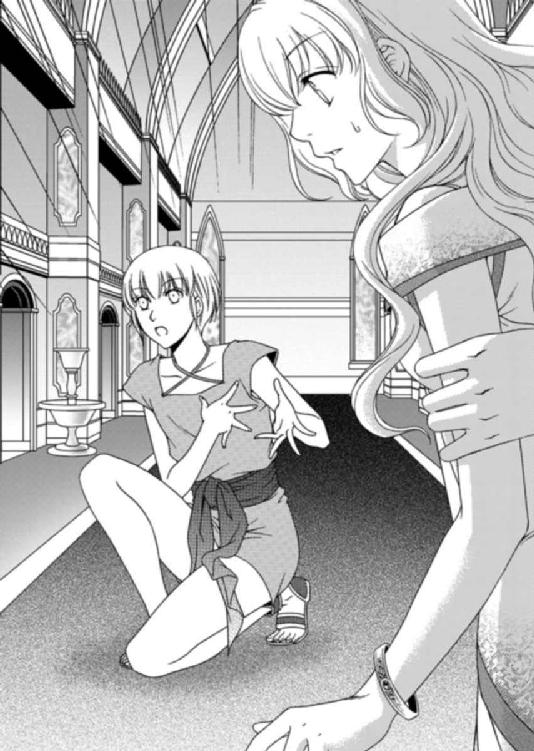
レイはその容貌にそぐわない鋭い視線を女官に向け、今にも飛びかかりそうだ。よく見ると彼の手に光るものがあった。それがナイフだと気づいたルセリアはすぐさまレイに近寄り、囁く。
「ありがとう、レイ。話を聞いてもらったり、庇ってもらえて私......すごく嬉しかった。それで十分なの」
「僕のことは気にするな」
「いいえ、いいえ。レイ。だめよ。私を悲しませないで」
「......」
ルセリアはレイから離れて立ち上がると、彼を振り返りつつも、女官の方へと移動した。
レイに隠れていろと忠告されたのに表に出てしまったのはルセリアだ。
自分の軽率な行動を後悔しながら、今日二度目の湯浴みをさせられ、王の寝室へ案内された。
そこでルセリアは金の鎖の付いた足枷を右足首にはめられ、寝台脇の支柱に繫がれた。
「これはどういうこと!?」
「逃げられては困りますからね。よいですか、王に逆らわず、身を任せておれば、あっという間に終わります」
女官はルセリアの髪飾りの花や、生地の薄いナイトドレスのリボンが美しく結ばれているかなど、念入りにチェックをしていた。
「お願いよ。ここから逃がして。これが貴方の娘だったら......そう考えてみて。ね、絶対に許せないことだと思わない？」
「何を馬鹿なことをおっしゃっているのです。これは大変光栄なことですよ」
「光栄ですって!? これが？」
「では、よい一夜を」
女官が一礼をして寝室を出て行くと、部屋には静けさが戻った。
宮殿の奥なのかバルコニーや窓もなく、壁に吊されたカンテラだけが、炎を揺らめかせ、不気味な影を作っている。
「どうしよう......なんとかして逃げなくちゃ」
寝台の周囲をぐるりと回る程度の長さしかない鎖を、ルセリアは思いきり引っ張ってみる。もちろん外れる気配もなく、足首が鎖に擦れて赤くなるばかりだ。
「お願い、外れてっ！」
頑丈な足枷はどれほど引っ張ろうとびくともしない。今までもこうやって女性を逃げ出せないようにしてきたのだ。せめて、何か武器になるようなものがあればいいのだが。
いや、たとえ武器になるようなものがあったとしても、大国であるビアランの王を傷つけるわけにはいかない。
ルセリアは自分の身分を口にしてしまった。もし王を傷つけるようなことがあれば、マルフォーネ王国に兵が出され、小さな国など一夜で灰にされる可能性だってあるのだ。
どうして何も考えずに自分の身分を告げてしまったのだろう。まだ、見知らぬどこかの娘だったら、花瓶で王の頭を殴って逃げたとしても、国のことは心配せず自分だけの責任ですんだ。愛してもいない相手に身体を汚されるくらいなら、殺された方がましだ。
だがその選択もルセリアの身分が知られた今、失われてしまった。
「どうしよう......どうしたらいいの？」
すべてアルバトルが悪いのだ。ルセリアをハレムに放り込むくらいなら、熱き砂漠へ放り出してくれたほうがよかった。
愛しているとルセリアに告げながら、こんな目に遭わせる。彼の愛情を受け入れられないとはいえ、アルバトルの想いは一途なのかもしれないと一瞬でも思ってしまった自分が情けない。
何か考えて！
なんでもいいから......何か、何か、何か！
ルセリアは、この場を切り抜ける方法を必死に考えようとしていたが、混乱と恐怖が思考を停止させていた。できるだけ寝台から離れるくらいしかできないが、解決策にはほど遠い。
「......っ！」
部屋の扉が開閉する音が聞こえて顔を上げると、エルドナルがローブ姿で近づいてくるのが見えた。
「ルセリアといったな。なかなかに可愛い顔をしておる」
「私には無理ですっ！ 本当に、絶対に、無理です！」
「案ずるでない」
ルセリアの身体はあっという間にエルドナルに抱き上げられて、抵抗する間もなく寝台へと下ろされた。どうにか逃げ出そうと暴れてみても、女の細腕ではとても敵わない男の力に組み敷かれ、全身が恐怖に満ちていく。
「待って......――っ！」
目を閉じて叫び声を上げたルセリアの耳に轟音が飛び込んできた。その後すぐに響いた声にルセリアは何が起きたのかを知る。
「父上っ！ お待ちください」
怒りと安堵が複雑に入り交じり、ルセリアは大混乱していた。
「なんだ、アルバトル。たとえ息子でも邪魔は許されんぞ」
「こいつを、外せ」
アルバトルはルセリアの足首の鎖を摑み、王の召使いを射殺さんばかりに睨みつけている。
「ですが......」
「外せと言っているんだっ！」
空気を裂くような鋭い声で命じるアルバトルに、召使いはすぐさまルセリアの足枷を外した。ようやく肌に触れていた冷たい足枷の感触がなくなったとはいえ、身体の震えが止まらない。
「私......」
「いいな、ルセリア。俺にしがみついていろ」
俺の父と一晩過ごしたいなら別だがと、アルバトルはルセリアの耳元でそっと囁いた。
誰のせいでこんな目に遭っているのか、胸の内をすべて吐き出したいのに声は出ず、ルセリアはアルバトルの首にぎゅっとしがみつく。
「この娘は是非わが花嫁にと、たいそう手間をかけて連れ帰りました。父上であろうとこのようなお戯れは困ります」
「私はハレムにいた者を選んだだけだぞ、アルバトル」
「父上のお戻りは明日だと聞いておりましたから、このようなことになるとは予想しなかったのですよ。ルセリアにはこの国のしきたりを学ばせている最中です」
ルセリアは震えながらもエルドナルの様子を窺った。
たとえ息子であろうと、王の寝室に足を踏み入れ一夜の相手を奪ったのだから、相当腹を立てているはずだが、エルドナルは寝台の上にあぐらを搔いて、呆れた顔をしているだけだった。
「ならばわかるよう、印でもつけておけ」
「もうその必要はないはずです」
「のう......アルバトル、その娘を私に譲る気はないか？」
エルドナルの言葉にルセリアは慌てて視線を逸らせた。
「どうなんだ、アルバトル」
「ありませんね」
「残念だな。暫く退屈せずに過ごせたんだが」
「父上のためにこの娘を手に入れたわけではありません。――ああ、独り寝が寂しいのでしたら、母上をお呼びになればいかがです？」
「余計な心配をするでない。もういい、行け」
エルドナルがやれやれと手を振る姿を視界に捉えつつ、ルセリアはアルバトルに抱き上げられたまま、寝室から連れ出された。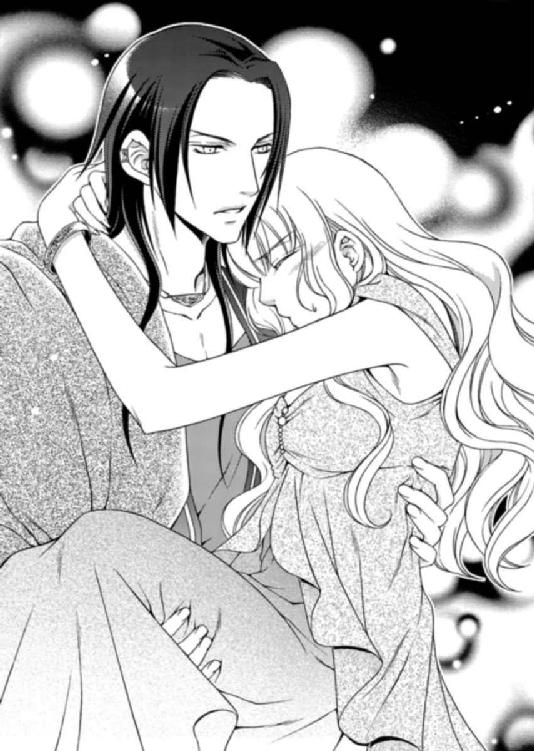
部屋に戻されたルセリアは、カウチの上に下ろされた。ようやく解放された安堵からか抑えていた涙がこぼれ落ちた。もう大丈夫だと自分に言い聞かせても身体の震えは止まらず、屈辱と恐怖が涙となって震える頰を伝う。
「そんなふうに泣くな」
「貴方がハレムに私を置き去りにしたからこんなことになったのよっ！」
濡れる頰を手の甲で拭いながらも、ルセリアは怒鳴っていた。けれど、声は無様に震えていたし、なかなか涙が止まらない。
「私......怖かったんだから」
「ルセリア」
「本当に......本当に、怖かったのよ！」
力で敵わない相手に組み敷かれた恐怖は、アルバトルには理解できないだろう。
決して屈しないと自分に言い聞かせていながらも、ルセリアは絶望に心が覆われたのだ。あれほどの恐怖をルセリアは今まで味わったことはなかった。
「こんなの嫌っ！ こんな国になんていたくないっ！ 私を家に帰してっ！」
「ルセリア」
「帰りたいの、私の国へ。お願いだから......帰してっ！」
「だめだ」
「貴方はやっぱり砂漠の悪魔よっ！ 私が傷つくのを本当は楽しんでいるんでしょう!? だからこんな酷いことができるのよっ！」
ルセリアはアルバトルに向かって、胸の内を吐き出すように叫んだ。するといつも恐ろしい眼光を放つ彼の瞳が傷ついているように見えた。
「泣くな！」
しかし一瞬で、いつもの調子に戻ったアルバトルにルセリアは身を竦ませた。
「許せ......。――怒鳴るつもりはなかった。だが、そなたが泣くからだ」
ルセリアの身体を強く抱きしめて、アルバトルが呟く。回された腕のあまりの力強さに息苦しいほどだ。いつだって力で思いどおりにしようとするアルバトルにルセリアは心底うんざりしていた。
「ここは嫌。国へ帰りたいの！ 帰りたいのよ！ だって私は......」
――貴方を愛せない！
そう続けて言葉を重ねたかったが、どういうわけか頭がぼんやりしてきて、身体から一気に力が抜けた。
「熱がある。ハレムで何も口にしなかったのか？」
アルバトルはルセリアではない誰かに聞いているような口調で話していた。それに答えようとしたが、声が出なかった。
「グレディ、侍医だ。侍医を呼べっ！」
意識を失う瞬間まで視界に捉えていたのは、アルバトルの動揺した表情だった。
彼がルセリアを心配していることは理解した。いつも怒鳴ってばかりいるアルバトルだが、こんな人間的な表情もできるのだということもわかった。
ルセリアを婚約者から引き離し、遠い異国へ連れてきた張本人なのに、こういう顔を見せられると、わけもなく胸が痛む。
不意に黒いフードを被った初恋の少年が頭を過ぎる。
「案ずるな」
アルバトルの綺麗な顔が苦痛を堪えるように歪んでいる。そうさせた原因を確かめることもできず、ルセリアは意識を失った。
意識はゆっくり戻ってきた。額に誰かの手が触れていて、ルセリアの前髪を指で梳いている。
ルセリアは横向きになっていたのだが、人の身体に密着しているような温もりを頰に感じ、顔を上げる。頭上には、大きなクッションを背もたれにしてアルバトルが寝台に身体を伸ばしている姿があった。どうやらルセリアはアルバトルに凭れて眠っていたようだ。
「目覚めたか、気分はどうだ？」
アルバトルは羊皮紙を手に持っていて、こちらを見てはいない。だが、ルセリアは自分の姿を確認してあることに気づいた。
「あっ......きゃ―――っ！」
「朝から何を叫んでいる」
「ド、ドレスが......違う。昨日、着ていたドレスと違うわっ！」
気をうしなう前は淡い黄色のナイトドレスを着ていたはずなのに、今は薄手の白いワンピースに変わっている。
この身体を締め付けることのない寝衣にいつ着替えたのだろうか。
昨夜、意識を失ってからの記憶がない。
だからアルバトルの寝台でどんな夜を過ごしたかなど、当然、知らない。ルセリアの意識がないのをいいことに、彼の手で恥ずかしいことをされた可能性だってあるのだ。
「そなたは脱水症状を起こしていたからな。水分を取らせて汗を出させた。湿った衣服はその都度着替えさせたからだ。そうしなければ風邪を引く」
ルセリアは意識のないまま、何度もドレスを着替えていたのだ。そのとき側にアルバトルがいたのだろうか。
「みみみ......見たわね!?」
「そなた、肩紐が落ちているぞ」
「ほっ、放っておいてっ！ 見たんでしょうっ！ いっ、意識がないからって最低っ！」
ルセリアは肩紐を戻しながらアルバトルから距離を取ろうとしたが、彼によって腕を摑まれて引き戻された。
「そなたの着替えは侍女がした。どうせそう言われると思ったからな」
「本当？」
「ああ。噓をついてどうする。それとも本当は見て欲しかったのか？」
「いっ、いいえ。それより離してっ！」
ニッと唇を歪ませて笑うアルバトルに、ルセリアは腰に回された手をなんとか解いて距離を取る。そんなルセリアに、いつもなら怒鳴るアルバトルだが、今朝は機嫌がいいのか口調も穏やかだった。
「元気になって何よりだ。その方が、そなたらしい」
「あの......私は何かの病気なの？」
「いや、ただの脱水症状だ。この国は宮殿の中だと涼しいが、外はかなり暑い。気がつかぬうちに脱水症状に陥るんだ。だから日に何度も茶を飲んだり果物を食す習慣がある。そういう生活に早く慣れるんだな」
「ずっと......」
――側にいてくれたのだろうか。
ルセリアはそう聞こうとした言葉を飲み込んだ。側にいてかいがいしく面倒を見たと聞かされても、どう返事を返していいのかわからない。
「なんだ？」
「その......助けてくれてありがとう」
「当然だ。そなたの初めての男になるのは俺だ。色ぼけの父に触れさせるわけにはいかん」
こういう会話に免疫のないルセリアは、あからさまなアルバトルの言葉に耳まで真っ赤に染まった。
「わっ、私は......貴方ともそんなことはしないわ！」
「そなたは俺の花嫁になる身だ。どんなことがあってもそなたを祖国へ帰す気などないし、他の男に譲る気もない。俺だけのためにその身をいとえ。いいな」
アルバトルは身が竦むほどの眼光をこちらに向けて、有無を言わせない。けれど負けているルセリアではない。
「私、頷かないわよ！ ――そうすると、また怒鳴るの？」
「いや。昨夜は何度も俺がそなたに口移しで水分を与えたことを覚えていないか？ 無防備な姿を堪能したから腹を立てる気になどならない」
「～～～っ！」
「その赤らめた顔も可愛いぞ」
愛おしそうに目を細める彼とは違い、ルセリアは目を伏せた。
「王子、私は......」
「アルバトルでいい」
いつもより落ち着いて見えるアルバトルに、今なら冷静に話ができるかもしれない。
ルセリアは彼を苛立たせないよう細心の注意をしながら聞いた。
「アルバトル、ねえ、どうして私なの？ ハレムには私なんて足元にも及ばない綺麗な人がたくさんいたわ。貴方は性格にちょっと問題があると思うけど、見た目は容姿端麗の王子様よ。しかもビアランは富める大国だわ。相応の国の姫との縁談があるはずよ。私にこだわる必要なんてないでしょう」
ルセリアは、自分に向けられているアルバトルの執着が理解できないでいる。こんな状況に放り込まれて愛を囁かれ抱きしめられたら、普通誰でも戸惑うだろう。
だいたいが容姿に自信のないルセリアだ。何か計略があるのではないかと深い疑念を抱くほどに我が身の置かれた状況を受け止められないでいるのだ。
「性格に問題があるというのは、どういう意味だ」
「えっ、あ。その辺りは聞かなかったことにして、ねえ、質問に答えて」
眉間に皺を寄せているアルバトルを宥めるよう、ルセリアは穏やかな声で聞いた。
だが彼は真剣な表情でルセリアの手を取ると、甲へと軽いキスを落とした。手を引っ込めたかったが、向けられている情熱的な視線に、不覚にも魅入られていた。
「そなたを愛しているという答えでは不満か？」
「......」
「あいにく俺はその答えしか持ち合わせていない」
そろりと手を離したアルバトルは、不機嫌な表情のまま、寝台から下りた。すると控えていた召使いたちがやってきて、ルセリアの目の前で彼は召し替える。
アルバルトは人前で着替えることに慣れているようだ。が、ルセリアにとっては異性の裸姿などは、恥ずかしくて見ていられない。
着替え終えるまでルセリアは視線を外すことにして、アルバトルの唇が触れた手の甲を撫で、ギュッと握りしめる。
話し合いも平行線だ。このままではルセリアの意思など関係なく、花嫁にされてしまう。
チラリとアルバトルの様子を窺うと、足下まであるビアラン国特有の薄いベージュのワンピースを着ている。腰は、太いベルトの上に細いベルトが巻かれ、短刀が挟まれていた。
剝き出しの腕だけでわかる、アルバトルの身体は適度な筋肉がついてしなやかだ。まるで抜き身の剣のようなスラリとした体型をしている。綺麗な造作に、無愛想な表情。人なつっこさや甘さは欠片もなく、穏やかな微笑など彼に求めても無理だろう。
アルバトルは最後に優美なローブを羽織って、ルセリアの方を向いた。
「ルセリア、昼食は一緒には摂れないが、夕食の頃には戻ってくる。いい子で待っていたら、可愛がってやるからな」
「遠慮するわ」
「なんだと？」
ルセリアの返事に不満の表情を浮かべたアルバトルだったが、グレディに呼ばれて平静を取り戻したのか、怒りを収めた。
「ああ、わかっている」
今日はいつもとは違い、彼は少し感情を抑えているようにルセリアには思えた。
「ハレムで私を庇ってくれたレイのことだけど......アルバトル、知っている？」
「ああ。ハレム付きの召使いのことか。グレディが、ハレムにいるそなたの安全を守るよう命令したようだが、あれは役立たずだったな」
「私を守る？ どういうこと!?」
アルバトルは部屋の扉の前で肩越しに振り返ると、小さなため息を一つついた。怒っているのではなく、呆れているようだ。
「この俺がそなたを本当に一人でハレムへ放り込むと思っていたのか」
「そうではないの？ 私を傷つけたかったんでしょう！」
「......そなたは眠っていたときの方が可愛い」
眉間に深い皺を刻んだままアルバトルは部屋から出て行った。
護衛をこっそりつけてくれていたことには感謝するが、レイまでもアルバトルの命令で近づいてきたことを知り、ルセリアは落胆していた。もちろん王の寝室へルセリアを助けに来てくれたときは嬉しかったが、そもそもハレムに放り込んだのはアルバトルなのだ。
きっとハレムに入れて少し怖がらせ、従順にさせようとしたのだろうが、それこそが余計に互いの溝を深くしていることに気づかないのだろうか。
「ルセリア様、お召し替えをされますか？ それとも先に朝食をご用意しましょうか」
「貴方は？」
顔を上げると、赤毛を三つ編みにした少女が侍女の恰好をして立っていた。今までいた年上の侍女と違い、ルセリアより年下に見える少女だ。
「アルバトル王子からルセリア様の身の回りのお手伝いをするよう仰せつかりました、侍女のエミールといいます。なんなりと申しつけてくださいませ」
「もしかして......昨晩、私の着替えをしてくれたのはエミールなの？」
「はい、そうです。まずはお茶の準備をいたしますね。しばらくお待ちくださいませ」
エミールと入れ違いに今度はレイが周囲を注意深く窺いながら入ってきた。
彼は昨日と同じ召使いの恰好をしているが、表情が硬い。
「昨夜は面目なかった。僕が姫を助けるつもりが、逆に助けてもらった。情けない」
「そんなふうに言わないで。だってレイは身を挺して私を守ろうとしてくれたわ。私......本当に嬉しかったのよ」
アルバトルの命令で守られていたことを知っても、昨夜のレイの行動に感謝していた。
彼だけがルセリアの話に親身になって耳を傾けてくれた。この国に来て初めてのことで、冷え切っていた心が、どれほど温もりを取り戻したかわからない。
「姫は僕を救おうとしてくれた。嬉しかった」
「レイは表に出てはいけないと教えてくれたのに、私こそごめんなさい」
軽率なのはルセリアのほうだ。なのにレイは跪いたまま、感極まった表情でルセリアを見上げてくる。
「次は、この命に代えても姫を守る」
「レイ。本当にありがとう」
感謝はありがたいが、命に代えてもと言われると大げさすぎるし、照れくさくてむずむずするのでルセリアは話題を変えることにした。
「レイがアルバトルに知らせてくれたの？」
「姫が連れ出された後、グレディのもとへ向かった。王子は血相を変えて、姫のもとへ行かれた。姫は王子に愛されているぞ」
「やめて。そういう話は聞きたくないの。......ごめんなさい」
アルバトルがルセリアを愛しているということを他の者から聞かされると、周囲からジワジワと圧力をかけられている気がして、息が詰まるのだ。
「すまない」
レイの言葉に、ルセリアは胸がつまる思いだった。
同情されるのは好きではないが、ようやく自分の立場を理解してくれる人に出会えた気がして、ルセリアはほんの少し気持ちが和らいだ。
「僕は、恥ずかしいのだと思っていた」
「いいえ。私は本当にここから、アルバトルから、逃げ出したいの」
「――姫、僕がなんとかする」
「えっ......」
「ここに姫の幸せがないなら、僕がなんとかする。だが、この話はまたいずれ......」
小さな声だがレイがはっきりとそう告げた後、一礼をして背を向けた。同時に、エミールがトレーにお茶の用意をして戻ってきた。
なんとかするというのは、ルセリアの逃亡を手伝うという意味なのだろうか。
「ルセリア様、どうぞ」
「あ、ありがとう」
心臓の鼓動が速くなり、額に汗が浮かびそうなほど動揺したが必死に平静を装った。
「今の、レイですね？ 何かございました？」
「ううん。なんでもないの。あっ！ これ、とてもいい香りがするわ」
ルセリアは、エミールが用意してくれた甘いお茶を口にして、確か昨夜も同じお茶を味わったことを思い出した。
「昨夜もアルバトル王子より命じられて、こちらのお茶をご用意いたしました」
エミールににっこりと微笑まれたルセリアは、先ほど聞かされたアルバトルの言葉を思い出した。
口移しで水分を与えた――。
ルセリアは今さらやってきた羞恥から、顔だけでなく耳まで朱に染まった。
「余計なことを申し上げて......すみません」
「い、いいのよっ！ 気にしないで」
「でもルセリア様。脱水症状で高い熱を出されていたのですが、不思議なことにお薬を飲まれる前に熱が下がったのです。みな驚きました」
「そういえばこの国に来たときはとても暑く感じたんだけど、今はあまり感じないわ。国から出たことがなかったから気づかなかったけど、私って意外と順応力があるみたい」
自分の腕や手に触れてみても、体温はそれほど高くなく、汗ばんでもいない。暑くて頭がボンヤリすることもなければ、喉が異様に渇くこともないのだ。
「そろそろ、お召し替えされますか？ それとも先に湯浴みのご用意をいたしましょうか？」
「着替える前に湯浴みをしたいのだけど」
「では、どうぞこちらへ」
昨日とは違い、アルバトルの部屋から繫がる湯殿へ案内されたルセリアは、湯船に浮かぶ見知った薔薇に目を留めた。
「この白い薔薇は......マルフォーネのものよ。どうしてここに？」
「アルバトル王子が姫様を迎えるために、ご用意されたと聞いています」
「そうなんだ......」
ルセリアは湯に身体を沈めると、心地いい温もりと懐かしい花の香りに包まれ、目を閉じた。
白い薔薇の香りはルセリアに力を与え、気持ちを落ち着かせてくれる。ただ、用意してくれたのがアルバトルだということにルセリアの心は複雑だった。
「お湯の温度はいかがです？ 足は痛みませんか？」
「温度もちょうどいいし、足も大丈夫よ。昨日はものすごく広い湯殿へ連れて行かれて、休む間もなかったから、今はホッとしてるわ。あ......そういえば」
ルセリアは昨日の湯浴みのときに聞いた侍女たちの噂話を思い出していた。
「他の侍女が話していたのを耳にしたんだけど......王妃様ってどういう方？」
「妖艶で美しい方です」
「でも、アルバトル王子はその王妃様の実子ではないのよね？」
王であるエルドナルが無理なら、王妃には頼れないだろうかと、情報を集めることにした。常識のある相手だとわかれば、今度こそルセリアの窮地を訴え、王妃に救ってもらえないかと考えたのだ。
「ええ。エルドナル王がまだ一人の后も迎えられていないとき、ハレムに〝砂漠の奇跡〟と呼ばれた美しい女性が来られたのです。互いに目が合った瞬間に恋に落ちたと聞いています。その方は外見だけでなく心もとても美しく、エルドナル王の寵愛は大変なものだったそうですよ」
「その方は？」
「アルバトル王子が十一歳の時に亡くなられたと聞いています」
「ご病気で？」
「それは......存じ上げません」
エミールが言葉を濁したことから、あまり聞かれたくない話題なのだろうと察せられた。
「じゃあ、今の王妃さまとアルバトル王子に血の繫がりはないのね」
「アビシュテ様は義母となられ、アルバトル王子の弟君にあたるサリマエル王子をお産みになられています」
「アルバトルには弟君がいらっしゃるのね」
「まだ十二歳になられたばかりですが、アルバトル王子をとても慕われています」
「ふうん。......たとえば、たとえばよ。王妃様に私の身の上をご相談申し上げるのはどうなのかしら」
「それはおやめになった方がよろしいです。私がこういうことを申しますのはどうかと思うのですが......」
エミールの表情は複雑だ。困惑しているというより、アビシュテのことはあまり話題にしたくないといった顔だった。アルバトルの母親の死因が不明なこともあるのだろうが、つまりは相談する相手には適さないということだ。
ルセリアは話題を変えることにした。
「エミールはこの国の生まれなの？」
「はい。そうです」
「私は十六になったばかりなんだけど、エミールはいくつ？」
「十五歳です」
エミールはそう言ってにっこりと笑った。
「十五歳で侍女ってすごいわ」
マルフォーネ王国にも十代の侍女はいるものの、みなルセリアより年上のせいかエミールの存在は妹のようで新鮮だった。
「私のように年齢の低い者は、ご主人様と直接対話できる侍女にはなれないのです。ですが、アルバトル王子が姫様と年が近い者の方がお慰めになるだろうということで専属の侍女に抜擢していただきました。至らぬことも多いと思いますが、誠心誠意、姫様のために尽くさせていただきますね」
「そ、そんなふうにかしこまらないで。あ、そうだ。私のことはルセって呼んでほしいの。いけない？」
ルセと呼んでくれるのは姉だけだった。ルセリアはここではエミールにそう呼んでもらいたかった。
「......よろしいのですか？」
「そう呼んでもらえると、とてもホッとできるの。お願い、エミール」
「はい。ルセ様」
「ありがとう！」
湯殿からエミールが出て行くと、ルセリアは浴槽に身体を伸ばして、ゆっくりと息を吐き出した。
彼女はとても可愛らしく、話していて気持ちのいい侍女だ。今まで会った侍女たちと比べるまでもない。アルバトルがルセリアのことを気遣い、年齢の近い侍女を選んでくれたことに、ちょっぴり感謝の気持ちがわいた。
「違うってば。アルバトルはいい人じゃないもの。砂漠の悪魔なんだから」
もっと他にルセリアは考えなくてはならないことがあるのだ。
魔導師のジンが見せてくれた映像は、まだ記憶に鮮やかすぎて、きちんと向き合うのは怖い。
ジンが言ったとおり、噓ならもっとわかりやすいものにしただろうし、偽物としては説明のつかない不可解な部分が多いことから、水鏡に映ったことは現実なのだろうと思い始めていた。
亡き母は誰からルセリアを預かったのだろう。どういう事情があったのだろう。
「サイファス王子はどう思われたのかしら」
ルセリアが一言もなく姿を消したことにショックを受け、面目を潰されたことに怒りを抱いている可能性だってある。
「私これからどうなっちゃうんだろう......」
左手首にあるブレスレットに触れながら、ルセリアは目を伏せた。
幼い頃に出会った初恋の人が迎えに来てくれるのを心待ちにしていたのだ。そしてようやくその夢が叶う日が近づいていたのに。
サイファスの心は姉メイフェスによって慰められるのだろう。ルセリアは大好きな姉の幸せを心から願っている。でも......。
――私の初恋の人......ようやく再会できました。
マルフォーネ王国へやってきたサイファスは、心地いい声でルセリアにそう告げた。
――私が贈ったブレスレットを今も大切にしてくださっているのですね。ありがとう。
何より確かな初恋の証。
サイファスはさらりとした金髪を肩に流していて、緑の瞳は朝露をたたえた草原のように輝き、長い睫に覆われていた。少し線が細いバランスの取れた体軀の物腰は優雅だ。
ルセリアはこんなにも美しい王子を見たことがなかった。サイファスと出会った姫はみな恋に落ちると聞いていたが、噂に違わぬ美麗な王子だったのだ。
――ルセリア姫。私の后となっていただけないだろうか。
今頃は美しい姉の優しさに触れ、二人は新しい関係をはぐくんでいるかもしれない。それでもルセリアはまずはマルフォーネへと戻り、父や姉ときちんと話をしたかった。
どれほど嫌だろうとアルバトルの機嫌を取って、部屋の外で見張る兵の数を減らしてもらうか、やめさせる。街に出られるよう彼から信用を得て、部屋からなくなっても目立たないものを街で売り、少しずつでもお金を貯めることができれば、最高だ。
そうしたところで、ガイドを雇い月のない夜にこの国から脱出すればいい。
ふとレイのことが頭に浮かんだ。本当に彼はルセリアの逃亡に力を貸してくれるのだろうか。いや、まだ信用はできない。
まずはアルバトルから信用を得なければならないが、それが一番難しいことだ。
「アルバトルは簡単に私のことを信用しないはずだし」
結婚に同意するとか、それに匹敵するような約束が交わされなければ、アルバトルはルセリアを信用などしないだろうし、気も許さないはず。
ルセリアが無事にここから逃げ出すためには、問題が山積みだった。
その日、嫌々ながらもアルバトルと夕食をすませたルセリアは、彼の様子を注意深く窺い、話せそうなタイミングを見計らった。
彼は夕食後もグレディと何か話をしていたが、時間が経つといつしか二人だけになっていた。
ルセリアはアルバトルの隣で言われるまま飲み物を注いでいたが、くつろいでいる雰囲気を感じ取り、今ならばと口を開いた。
「ねえ、アルバトル、提案したいことがあるんだけど」
「どういう提案だ」
「貴方の気持ちはとても嬉しいわ。本当よ。でも、私がまだそんな気になれないのもわかるでしょう？」
向けられる愛情を拒否するような言葉はアルバトルを怒らせるだけ。だからルセリアはできるだけ言葉を選んで口にした。
「それで？」
「貴方をよく知る時間が欲しいの。アルバトルが本当はどういう人なのか、何も知らないのよ。こんな状態で花嫁になんてなれないわ。それでも無理強いするのなら、私、バルコニーから飛び降りるわ。これは本気なんだから」
「ならバルコニーに出られぬようにするだけだ」
アルバトルは淡々とした口調で、酒の入った杯を空けている。
真剣に話をしているのに、この態度にはルセリアも腹が立つ。
「本当に何もわかっていないのね！ アルバトルも嫌でしょう？ 自分だけが相手を好きで、相手が同じ気持ちを持っていないの」
「そなたに時間を与えれば、俺と同じだけ愛するようになると言うのか？」
「それは保証できないけれど」
「ほらみろ」
無駄な話だと言わんばかりにアルバトルはフンと鼻を鳴らし、こちらを見ようともしない。
こういう話題が苦手なのか、それとも事実と向き合うのを避けているのか、単に面倒くさいだけか、彼の表情からは汲み取れなかった。
「アルバトル、ちゃんと聞いて！ 私は人形じゃないのよ。好き嫌いの感情があるの。無理やり愛せと言われても、よく知らない人のことなんて受け入れられないわ」
「そなたはシシアのサイファスのことも何も知らないはずだ。だがあの男の求婚は受けて、俺の求婚は受けられないのか」
「そうじゃなくて......もう～。アルバトルと話していると頭が混乱してくるわ！」
「俺もだ。そなたの言っていることがわからん」
「一緒にしないでっ！」
本気でルセリアが怒った声を上げると、アルバトルは杯をトレーに下ろし、腰に手を回してきた。その手を払いたかったが、グッと堪えて、ルセリアは彼の双眸を受け止めた。
「そなたは具体的にはどうして欲しいんだ」
「寝室は別」
「だめだ」
にべもなく断られたが、ルセリアは食い下がった。
「だってまだ好きではない人と一緒の寝室で眠るなんて、嫌よ！」
「仮にも花嫁として連れて帰ったんだぞ。別々で寝ていることが知れたら、俺の恥だ」
「まだ花嫁じゃないわ」
「だが、父上がどういうわけかそなたを気に入っている。寝室が別などと知れたら、また嫌な目に遭う可能性があるぞ」
アルバトルとエルドナルを比べること自体、最悪の状況だが、どちらがましかと聞かれたら、アルバトルの方を渋々選択するしかない。ルセリアに対して愛情を抱いている分、少しはこちらの意見を聞いてくれるからだ。
「じゃあ、何もしないって誓ってくれたら......いいわ」
「何もしないとは、なんだ」
「私の国のしきたりだからよ！ 本来は夫婦になるまでは別々の部屋で清い関係でいなくてはならないの。もちろん、この国に来たのだからこの国のしきたりに従わなくてはならないのは当然よね。でも、そのくらい尊重してくれてもいいでしょう？」
ルセリアは必死にアルバトルに訴えた。
エルドナルに組み敷かれたときに感じた恐怖はまだ身体中に刻まれている。あんな目には二度と遭いたくない。ルセリアにとって今一番、回避したい問題なのだ。
「そなたは俺の男としての欲望を理解していない。誠実であろうと自らを律しているが、そなたが側にいると、俺はそなたの可愛らしい唇や、滑らかな肌、触れると温かそうな胸......すべてを自分のものにしたくなるんだ」
「～～～っ！」
どうしてアルバトルはこうも恥ずかしい言葉を口にできるのか。ルセリアは耳まで真っ赤に染まった顔で非難の目を向けたが、彼は悪びれる様子もなく、堂々としていた。
「何を恥ずかしがっている。愛する者を目の前にした男はみなこういうものだ。シシアのサイファスも、涼しい顔をしてどうせ俺と同じ仕方のないことばかり考えている」
「やめてよっ！ アルバトルと一緒にしないで！」
品性の欠片も持たないアルバトルだ。しっかりと約束を取り付けておかないと、彼の父親のような行動に出ないとも限らない。もちろんアルバトルと彼の父親は気性は似ているとはいえ、相手は誰でもいいというわけではなさそうだが。
「お願いよアルバトル。本当に愛してくれているなら私の国のしきたりを尊重して。もしできないなら、私がアルバトルのことを好きになる確率は、一切、まったく、完全に、なくなるから！」
ルセリアが真剣な表情でアルバトルに告げると、彼はしばらく逡巡した後、小さなため息とともに口を開いた。
「仕方ない」
「あ、ありがとう！」
「だが寝室や寝台は一緒だ」
何事も譲歩は必要だろう。ルセリアは仕方なしに頷いた。
「キスも別だぞ」
「えっ!?」
「そなたは俺の花嫁になる身だ。何度言わせる」
アルバトルによってさらに身体が引き寄せられ、額にキスが落とされようとした。
キスをされると触れられた部分が熱くなり、心臓の鼓動が速くなる。
ルセリアは身構えていたが、彼の唇は触れないままで――。
「どうした、失望させたか？」
「......は!?」
「そなた、今、俺のキスを待っていただろう？」
ニヤリと笑うアルバトルに、ルセリアは自分の心を見透かされたような気がして、首まで真っ赤に染まった。
「まっ......へ、変なこと言わないでよっ！」
触れられてもいない額を何度も擦り、ルセリアは必死に冷静さを取り戻そうとしたが、動揺が収まらない。
「ああ、そうだ。華燭の儀の日取りはすでに三ヶ月後と決めた。時間が欲しいというそなたのわがままを尊重できるのは、それまでだ」
「かしょくのぎ......って何？」
「結婚式のことだ」
「ええ――っ！ そんなの横暴だわっ！」
「我が国のしきたりにそって日取りを決めた。そなたも尊重してくれるはずだな」
してやったりという微笑を浮かべたアルバトルに、ルセリアは肩を竦めるしかできなかった。
それでも当面の安心を手に入れることができたのだから、妥協するしかない。
とにかく今は多少の横暴に目をつぶり、その婚儀の日までにここから逃げ出せるよう密かに準備を整えなくてはならない。
「痛むか？」
アルバトルは、足枷の痕が残るルセリアの足首をそっと撫でてきた。傷にはなっていないが、ルセリアが足枷を外そうとしてずいぶん引っ張ったため、赤い痣になっているのだ。アルバトルはその痣が気になるようで、そこばかり触れてくる。
だが、触れられると嫌な記憶まで一緒に蘇ってくるため、ルセリアはアルバトルの手を押しやった。
「お願いだから、もう触らないで」
「なんだと」
「まだ少し痛むの。もう～！ そんなふうに、いちいち怒らないで」
「俺以外の者がそなたの肌に触れた痕跡を目にするのは不快だ」
「ただの痣だもの、数日経てば消えるわ」
ルセリアがそう言うのに、アルバトルがまたこちらの足首に手を伸ばしてきたので、今度はやんわりと払った。
「三ヶ月後、どれほど嫌がろうと、身も心も俺のものとする。そのときは恥ずかしがろうと、そなたのすべてを見せてもらう」
「私は恥ずかしがってるわけじゃ......ううん。恥ずかしいけどそういうことでもなくて」
「何が言いたい？」
「いいの。なんでもないわ」
すべてを見られるのも恥ずかしいが、今はそれ以上にそんなことを言って憚らないアルバトルに嫌悪を感じる。そう告げたかったが、怒らせるのは得策ではないためルセリアはのど元まで出た言葉をグッと吞み込んだ。
まずは約束は取りつけた。あとは婚儀までに計画が上手くいくよう、ルセリアは願うのみだった。
華燭の儀を終えるまで、寝室は同じでも清い関係であること。
そうアルバトルと約束を交わしてからというもの、ルセリアは一日のほとんどを、ビアランのしきたりを学ぶことに費やしていた。
最初ルセリアは渋々机に向かっていたが、マルフォーネとは異なる国の歴史や人々の生活を知るのは意外に楽しいことに気づかされた。ビアランの恐ろしい噂だけをいくつも耳にしてきたルセリアにとって、この勉強は新しい発見の連続だったのだ。
ビアラン国は、どうしてこんな場所に都市があるのかと驚くような砂漠のまっただ中にある。水は城の下に広がる地下湖からくみ上げられていて、国民の住む各家に配給されていた。
国内を取り囲むのは煉瓦の塀と、それに沿うよう人の背より少し高い特殊な作物〝エジ〟が隙間なくびっしりと植えられていた。砂漠には〝ワーム〟と呼ばれる芋虫に似た大きな生き物が棲んでいて、小動物を食べて生きている。
だが、エジの根から出る毒素がワームを寄せ付けない。また、エジは水を求めて地下深くまで根を張り粘土質を貫くため、建物の下にワームが入り込むことはないのだ。
エジは麦に似た穀物で、雄と雌があり、乾燥地ほどよく雌は穂を実らせる性質を持っていて、種子はパンの材料になる。雄は国内を取り囲む塀の役目をしているが、茎を乾燥させ繊維質を取り出し織物の材料にされた。繊維に弾力があるのが特徴で、雌の繊維は逆に硬い。どちらとも根には毒があるが、使い方によって薬にもなるらしく捨てるところがないといわれるほどビアランでは重宝されていた。
ルセリアが初めてバルコニーから見た、手を広げたような葉っぱを持つ植物は〝バハル〟と呼ばれ、宮殿や街中にたくさん生えていた。それは椰子の一種で、葉っぱの根元に大小さまざまな丸い実を年中つける。実の中は甘いジュースのような蜜がため込まれていて、実をそのまま水辺で冷やして飲まれていた。実の内側には白い脂肪の層があって、これを油に加工し、様々なものに利用されていた。
宮殿の背後には神殿があり、さらに北に行くと鉱山が連なっていて、そこから掘り出される様々な鉱物がビアランを富める国にしていた。
兵の数も桁外れで、ルセリアは驚きより恐れを感じるほどだった。それでも学ぶことはやめなかった。逃げ出すために必要な知識だからだ。
ここに来てから二週間が過ぎる頃には、ルセリアはビアランの歴代の王の名前を空で言えるほどまでになっていた。
ただ逃走に一番必要なお金は手に入れられなかった。どれほどルセリアが頼んでもアルバトルは街へ案内してくれることなく、外出許可など下りる可能性もなかった。
制限された生活の中で、ルセリアのストレスも限界にきていた。
その日、朝早くからアルバトルは会議に出かけ、昼食時になってもルセリアのもとへくることはなかった。
いつも側にいる侍女のエミールは、アルバトルが手配していたルセリアの衣装を取りに出かけていた。部屋の外には警備の兵がいるが、ルセリアがここしばらくおとなしくしているためか、以前のような物々しさはない。
一人きりになったルセリアは、隠していた地図をベッドの下から取り出した。逃げ出す日に備えてこっそりと作成している地図で、最近新たに見つけた通路を描き加えて、にんまりとする。
「とりあえず外へ出て、水路の流れる方向に行けば、時間はかかっても宮殿から出られるわね。でも......問題は街から砂漠に出てからだわ」
地図のほかに、皮袋の水筒と鞄を用意して同じように寝台の下に隠してある。食べ物はテーブルにいつも盛られている果物をできるだけ鞄に詰め込めばいいだろう。だが、一番必要なのは砂漠を横断するためのガイドと、彼らを雇うためのお金だ。
部屋に飾られている高級な花瓶や皿を持ち出して街で売ることも考えたが、たぶんすぐにバレるだろう。
「姫、いいか？」
「えっ......あ。レイ......どうしたの？」
まるで魔導師ジンのように現れたレイに、ルセリアは寝台に広げていた自作の地図を慌てて隠した。
「あはは。これね、なんでもないの！ 気にしないで。それで、どうしたの？」
「手はずは整えた。姫、この服に着替えるんだ」
「......えっ!?」
慌てるルセリアに、レイは侍女の服を差し出した。突然のことにルセリアは、その意図を理解できずにいた。
「手はず......って。もしかして......」
「そう約束した」
「協力してくれるのは嬉しいけど......このことがバレたら、レイに酷い罰が課せられてしまうもの。いいえ。最悪の場合もあるかもしれない」
レイがルセリアの逃亡を手伝ったとアルバトルに知られたら、殺される可能性もあるのだ。いくらなんでもそんなリスクを彼に負わせることなどできない。
「逃げ道は作ってある」
「でも......」
レイは焦る様子もなく、いつもどおり平静な顔をしている。
ルセリアの逃亡を幇助するのだからレイは相当の覚悟をしているはず。かといって、ここから逃げ出したいという、自分の都合に彼を巻き込んでもいいのかルセリアは決心がつかないでいた。
「悩んでいる間に逃げられなくなる。早くしろ」
「どうして会ったばかりの私にここまでしてくれるの？」
「ここにいても姫が幸せになれない」
確かにそうだ。ここはレイの助けを借りて逃げるか、それとももう少し様子を見るのか、ルセリア自身が決断しなくてはならない。
「今すぐなの？ 夜じゃだめなの？」
「夜より昼間のほうが警備が手薄だ。慣れない者は夜に砂漠を渡ろうとするが、夜のほうが危険だ。ワームは夜行性で昼間はあまり活動しないから、キャラバンたちはみな昼間、砂漠を渡る」
「――いいわ。覚悟を決めた！」
ルセリアが侍女の恰好に着替え終えると、レイはストールを取り出した。
この国の人たちは外出時、ストールを頭から被って顔を覆うように巻いて、肌を刺す日差しから頭部を守る。さらに、スカーフを加えて口元を覆うことも多い。
ルセリアの場合は、当然、顔を隠すためでもあるのだ。
「砂漠へ出る門は何カ所かある。だがキャラバン専用の門は西側の一カ所だけだ。ここは広場になっていてラムダや馬車など休ませる施設や宿屋が多く、人の出入りが激しい。姫一人が紛れ込んでいてもわからないだろう。ただ門の出入りをチェックする兵にはみな姫の似顔絵が配られている。ストールをしっかり巻き付けて顔を隠しておけ」
「ええ」
「兵が交替するほんの一瞬、その隙を狙って姫は部屋を出て右へ向かうんだ。怪しまれないよう、ゆっくり歩くといい。最初の角をもう一度右に曲がったところに、姫と同じ恰好をした僕の知り合いがいる。彼女は姫を今日出発のキャラバンへ連れて行く。黙ったままついていけ」
「わかったわ」
「キャラバンは港へ向かって出発する。僕は港で合流する」
「レイはキャラバンへは来ないの？」
「僕の心配は不要だ」
促されるままルセリアは部屋の扉まで移動する。レイは耳を澄ませて通路の様子を窺っていた。
唐突に訪れたチャンスにルセリアは喜びよりも戸惑いを感じていた。
ぶっきらぼうで最初は取っつきにくいけれど、レイがとても信頼できる少年であることをルセリアはここ数日間で実感をしていた。
つい先日も、部屋にカラスが飛び込んできてエミールと大騒ぎしたときも、誰よりも先にレイがやってきて、追い出してくれた。
頻繁にこそ姿を見せないが、助けが欲しいときにはいつもひょっこり現れてはルセリアの力になってくれる。
もしかしたらアルバトルがレイを使い、ルセリアを試そうとしているのかもしれないという思いもなかったわけではないが、今ではそんな疑いは完全になくなっていた。
「姫、今だ。振り返らずに行け」
「レイにとって、私にここまでしてくれる価値はあるの？」
「僕は姫のことが大好きだ」
「レイ......」
「さあ、行け」
レイに背中を押されて部屋から出て、ルセリアはようやく決心がついた。
これが間違った決断だったとしてもいい。部屋に籠もっていても現状は変わらないのだから、とにかく先へ進むのだ。
いつもいる兵士の姿がないことを確認して、言われたとおり通路を走ることなく歩いた。すると最初の角のところで普段ルセリアがしている恰好と似たような服装の女性と出会った。彼女はすべて心得ているのか、ルセリアに小さな声で囁いた。
「口はお閉じになったまま、さあ、私についてきてください」
女性は果物の入った籠をルセリアに押しつけてくる。それを手に持ち、侍女を装いながら、彼女とともに宮殿の外へと向かった。
ルセリアはできるだけうつむき加減で、女性の足下を視界から逃さないように、追いかけた。
無事に宮殿から出ると、街へ出る門までひたすら歩いた。無駄に長い距離だが、宮殿の敷地と街の区画の間には砂漠があり、通路の左右にはエジがびっしりと生えていた。
この道も外から攻め入られたときのことを考慮された造りになっている。もちろん、エジの向こう側にある砂漠には、恐ろしいワームが潜んでいて、砂の中で獲物を待っている。
ようやく街へと出る門を抜けると、そこから市内を巡回している馬車に乗り、ルセリアはほんの少し安堵した。
馬車に揺られてうとうとしてしばらく経った頃、女性にそっと耳打ちされた。
「到着しましたよ」
「は......はい」
馬車から降りると、キャラバンや旅行者などの群れがあちこちにできている広場に到着していた。その中で一番小さなキャラバンにルセリアは連れて行かれるという。
「彼らには話がついていますので、私はここまでです。どうぞ、お気をつけて」
女性が人混みに消えてしまうと、ルセリアは膝を抱えたまま頭上高くある太陽を仰ぎ見た。自分の国では感じたことのない、ちりちりと痛みをともなうほどの日差しだが、ここに来て数日経った今では不快なほどでもなくなっていた。いや、本当に自分でも不思議なのだが、ビアランの気候に身体が慣れたようで、ルセリアは脱水症状でもないのに、汗をあまり搔かなくなった気がしていた。
広場からは本通りの商店街へも繫がっていて、外から運び込まれた他国の果物や織物など様々なものがそのまま売られたり、逆にビアランの物産が諸外国へと運ばれていく出口にもなっていた。
広場には水場がもうけられていて、軽い食事も摂れる露天で賑わっていた。水場の飲み水は無料のようで、設置された長椅子に座り、旅人たちはくつろいでいる。
キャラバンの男たちは発泡酒を手に陽気な顔で荷物を馬やラムダに乗せていた。
ラムダは砂漠を渡るのに適した生き物だ。バハルの実の内側にある層になっている白い脂質を好んで食べる。長い体毛が目や耳だけでなく足下まですだれのように覆っているのは、砂が入らないように進化したためだという。
脂肪の塊のような体つきに太い四肢、蹄のない足の裏には大きな肉球がいくつもあり、弾力性に富んでいることから足場の悪い砂地でも安定して歩けるため、乗り物としても重宝されていた。速くは走れないが、スタミナが非常にあり、何日も食事にありつけなくても、生きていられる。性格はおっとりしていて、従順。人によく懐き、頭がいい。砂漠を渡るキャラバンはたいてい馬とラムダを同じ数だけ連れて移動する。
ルセリアはラムダを初めて見たが、なんとも愛らしい姿に好奇心が刺激され、こんな状況であってもあの背に乗ってみたいという気にさせられていた。
子供たちは、中身を抜いて乾燥させたバハルの実をボール代わりに蹴って遊んでいて、楽しそうだ。一緒に走り回っている犬は十分餌をもらっているのか、瘦せてはいない。
ここは活気に満ち、誰一人としてこの国から逃げ出したいという顔をした人はいなかった。
「ねえ、聞いた？ アルバトル王子が今度『慈雨の儀』を執りおこなうそうよ」
荷物を馬に乗せ一息ついた若い女性三人が、露天で冷たい飲み物を買い、歓談している声が聞こえてきた。
「ええ、知っているわよ！ もちろん見に行くわ。王子様の姿をできるだけ近くで見るために、朝早く行って、いい場所取らないと......。王子様はとても美しい方だから、儀式の衣装も映えるわ。きっと忘れられない日になるわね」
背が高くて細身の女性が頰を赤らめて言うと、隣にいた小柄な女性が頷いた。
「アルバトル王子は、勇猛果敢で恐れを知らない王様の性格と〝砂漠の奇跡〟と呼ばれたアミタ様の美貌を受け継がれた方だもの。いいとこ取りね。ああ～どんな方を花嫁にされるのかしら」
「......これは噂だけれど、アルバトル王子にはご執心の方がいらっしゃるそうよ。なんでも大変苦労されて、他国から連れ帰られたとか」
「私も聞いたけど、本当かしら......？ お姿を拝見した話は聞いたことないし......」
三人目の赤い髪の女性が首を傾げながら飲み物を口にした。
「宮殿の奥深くにお隠しになっているのよ。きっと絶世の美女で、他の男たちに略奪されないよう守られているんじゃない。とても愛されていらっしゃるのね～」
「王子の抱擁はやっぱり雄々しく力強いのかしら......。夢でもいいから抱きしめられたいわ」
「あら、私は夢で何度もキスしていただいたわよ」
小柄な女性の言葉に、二人は同時に「羨ましいっ！」と声を上げた。
どこの国でも美貌の王子のことはこんなふうに噂されるのだ。微笑ましく耳にしながらも、アルバトルが連れ帰った女性が絶世の美女にはほど遠いことを知ったら、彼女たちにどんなふうに言われてしまうのかをつい想像してしまい、ため息が漏れた。
「私はアルバトル王子より、お優しいサリマエル王子の方が好きだったの。でも......アルバトル王子の進言で、学校が無料になったでしょう？ それからはアルバトル王子派よ」
「げんきんねえ」
ビアランのことを学んで驚いたことがある。この国で生まれた男性と結婚する場合、土地と家が国から与えられ、子供たちは学校も無料で通うことができるのだ。成績の優秀な者は、宮殿内にある特別な学校に通うことが許され、卒業後の就職先も保証される。また学力ではなく武術に秀でた者、手先の器用な者など、個人の能力を伸ばすことのできる制度になっていて、やはり無料で学ぶことができるのだ。
ルセリアの国では難しい制度だ。理想ではこうありたいと思うが、実現するには莫大な費用がかかる。
ここの税収制度は他の国に比べてものすごく低いのに、豪華絢爛な宮殿を見る限り、節約しているようには見えない。ということはよほど国が儲けているということだ。
「富める国は諸外国からいつだって狙われるわ。優しいだけの王にはビアランを守ることはできないもの。サリマエル王子ではとても難しいと思うわよ」
「サリマエル王子は虫も殺せない感じだものね。お身体も弱いそうだし、誰に似たのかしら」
「アルバトル王子のように、王様の命を狙った不届き者をその場で斬り捨てることはできないでしょうね」
「美貌の王子が表情一つ変えることなく、剣を振り下ろすのよ。その場にいた人は、幸運だわ」
三人は楽しそうに笑いながら、カップを露天に返すと、去っていった。
富める大国を治める王やそれを継ぐ王子は命も狙われるだろうし、侵略される危機を常に感じていなくてはならない。ルセリアには想像もつかない重圧と責任が肩にかかっているのだろう。
いや、ようやく逃げ出せるのだから、アルバトルのことなど考える必要などない。今は無事に帰国できることをルセリアは願うだけだ。
足下にボールが転がってきて子供たちが手を振っているのが見えた。ルセリアはボールを拾って子供たちに投げ返す。ボールを受け取った子供たちは口々に「ありがとう」と言い、遊びを再開した。
楽しそうだなあ......と、ぼんやりと眺めていると、子供たちのうちのひとりの少女が砂漠へと出る門を抜けて行くのが見えた。何か小さな動物を追いかけているのだが、門番たちは新しくやってきたキャラバンたちのチェックに追われていて、気づかないようだ。両親がいるはずなのに、少女を追いかける大人は誰もいない。
誰かに知らせたかったが、門番たちにはルセリアの似顔絵が配られているため、騒ぎを起こしたくない。ルセリアは腰を上げると、足早に門を抜けて少女を追った。
ワームが怖いものの、エジの囲いがすぐ近くにあるし、街の近くにはやってこないはずだ。
「ねえ、待って。そっちに行っては危ないわっ！」
サンダルの隙間に熱された砂が入り込み、足の裏からチクッとした痛みを伝わってきたが、ルセリアは構わず少女を追った。少女はルセリアの声を聞いて立ち止まり、振り返る。
「あのね、飛びウサギさんがいたの。でももういない」
「きっとね、おうちに帰ったのよ。貴方もお母さんのところへ帰りましょう」
ルセリアが手を伸ばすと少女はおずおずと手を出し、ルセリアの手を握りしめた。けれどまだ飛びウサギが気になるのか、何度も後ろを振り返る。
「あっ、飛びウサギちゃんだっ！」
飛びウサギが二人に向かって飛んでくるのと同時に、ルセリアの視界には灰色の大きな物体が映った。
ゆっくり顔を上げると、自分の身長よりも遙か頭上にワームが頭をもたげていた。
ワームはパクリと口を開き、ギザギザの歯を見せている。
ルセリアはこんなにも巨大な生き物を目にしたことがない。
視界いっぱいに広がる灰色の生き物の陰が砂地に広がり、それはまるで底のない井戸のような暗さだった。太陽は頭上にあって熱いはずなのに、ワームは周囲の熱をすべて奪ったかのように、ルセリアの体温を下げる。
昼間は活動が活発ではないと聞いていただけにルセリアの心臓は縮み上がった。
「きゃ――っ！」
少女はルセリアにしがみついて悲鳴を上げたが、ルセリアは初めて見るワームの姿に声も出せず後ずさろうとした。
ネズミを巻き込む蛇のとぐろのようにワームの胴体が砂の中から現れ、二人の逃げ道を塞いだ。さすがに門番も異変に気づいたのか、声を上げてこちらへ駆け寄ってくる気配が感じられたが、目の前のワームに、振り返って確かめることはできない。
「私の娘よっ！ 離してっ！ ......娘を誰か助けてっ！」
少女の母親らしい声もざわめきから聞こえてくる。
「私たち美味しくないから......あっちへ行って！」
体験したことのない恐怖が身体を包んでいたが、ルセリアはワームの口から顔を逸らさなかった。
心拍数は最高まで上がり、冷たくなったはずの身体が今度は火がついたように熱くなっている。自分でも何を口走っているのか判断できないほどパニック状態なのだが、心のどこかがとても冷静になっていることにも気づく。
「ねえ、もし......私たちを食べたら、お腹を壊してひどい目に遭うわよ。お前だって嫌でしょう？ 何日もお腹がゴロゴロして、苦しいのは。私だって嫌よ。だってお腹が痛いと何もできなくなっちゃうし、美味しい料理もしばらく食べられなくなるもの。それが嫌なら他に食べ物を探しに行って！」
ワームは口を閉じると、犬が鼻を鳴らすように、クンクンと小さな音を立てながら、ルセリアや少女の匂いを嗅いでいる。少女はルセリアの身体に痛いほどしがみついていて、こちらも握りしめた手が汗ばんで、震えていた。
「ほら、ね。美味しくない匂いがしたでしょう？ さあ、もう帰って！」
ルセリアがそう言うと、ワームがまるでこちらの言葉を理解したかのように、顔を離して砂の中に戻っていく。
「ほっ、本当に......わかってくれたの？」
全身の力が抜けそうになりながらも、ルセリアはこの隙に門まで戻ろうと振り返ったが、兵士だけでなくそこにいたすべての人がルセリアの方を向いて歓声を上げていた。
「え......」
少女の母親から涙ながらの感謝の言葉を受けた。が、知らない言葉が飛び交っているのに気づいた。
「あのワームを意のままに操られたぞ。俺は見た......『砂漠の薔薇』が現れたんだっ！ みんな、『砂漠の薔薇』が現れた！」
「砂漠の薔薇？」
「あっ！ 貴方様は――もしやルセリア様ではっ!?」
一人の兵がルセリアの顔を見て声を上げたことから、騒ぎはさらに大きくなった。
太陽が頭上から少し傾きを見せる頃、朝から続いていた会議がようやく終わりを迎えようとしていた。議題のほとんどは『慈雨の儀』についてのことだ。
ビアランでは年に三回行われる神聖な行事だ。一の月、四の月、八の月に神殿で行われる。
慈雨の儀後、約一週間ほどで東の鉱山の麓から大河が出現して海まで河川ができ、二ヶ月後は跡形もなく消えるのだ。これらは、山に降った雨が地面に吸収されることなく巨大な地下湖に蓄積され、満杯になったところで裾野から水が噴き出すためにできる期間限定の大河だった。この期間中に海に面した国との交易が集中して交わされ、大河が砂漠に消えた後の肥沃な土地には作物が植えられる。
アルバトルは終わった後に出現する大河で再開される交易の話題をとりまとめていたが、かねてから懸念されていたベルデ国からの親書に目を通した王エルドナルの興味はやはりファントムクリスタルに移った。
「ファントムクリスタルか......また誤報だったようだが、手に入れられるものなら、手に入れたいものだな」
「父上は興味があるのですか？」
「当然だ。どこの国も喉から手が出るほど欲しいはずだからな。もし言い伝えどおりの力を持っているのなら国土を広げることも可能になるんだぞ。もっとも、本当に存在すれば......だが。噂だけで国内でもめ、刈り入れ前の農作物を焼くなど、正気の沙汰ではない」
近隣大国の戦力は拮抗しており、攻め入ってまで国土を広げようとする王は表向きにはいない。ただ虎視眈々と攻め入る隙を狙っているのは、どこも同じだ。
「ベルデの要請を受け、西の貯蔵庫を開けてよろしいですか？」
「見返りに五千頭の馬を手に入れられるのだから、いいだろう。お前のことだからすでに準備は終えているのだろう？」
「戦力として保有している馬を民間に下げる選別をすでに指示しております」
ベルデの馬は足も太く機敏で兵士の馬として適していた。だから年齢的に使えなくなった馬を民間に無料で下げ、ベルデの駿馬と交換するのだ。
「ところで王は、ファントムクリスタルは存在すると思われますか？」
大臣の一人がエルドナルに聞いた。
「私は今のところ積極的に探そうとは思っておらんが、シシア神国は何代も前の王から探しているようだな。有力情報には多額の賞金も用意しておるようだしな」
エルドナルがそう言って笑っているところに、グレディが足音もさせずに近づいてきて、アルバトルの背後からそっと耳打ちした。
「ルセリア様が西門で騒ぎを起こしているとの報告を受けました。いかがいたしましょう」
「なんだと」
最近おとなしくしていたからようやく逃げ出すことを諦めたのかと、少し気を許していたが、実は違ったようだ。
「父上、急な案件がありますので、私はこれで失礼いたします」
「いいだろう」
アルバトルは腹立たしい気持ちを抑えつつ、会議室を出ると、足早に外へと向かった。
「ぼっちゃま、お気持ちはお察ししますが、あくまで冷静に。よろしいですね」
「黙れ」
「いずれ王となられる身。愛されたいと望まれるのなら、ここで寛容の精神を学ばなければなりません」
「グレディ、黙れと言っている」
「嫌われても知りませんよ。私はご忠告いたしましたからね」
アルバトルは馬を駆り、西門へと向かった。
ルセリアが一人で警備の厳重な宮殿から出て、キャラバンたちの出入り口となっている西門へたどり着けるわけなどない。誰かが手引きしたのは明白だ。
アルバトルがすぐさま思い浮かべたのは、待者や召使いたちだ。
囚われの身となっているルセリアに同情し、逃亡の手助けをしたのだ。
怒りが身体中から発散されて、手綱を握る手に必要以上の力が入る。
力でねじ伏せて得られる愛情など求めていないのに、そうでもしなければ手に入れられない状況に、アルバトルは我が身がどうにかなりそうだった。
西門に到着すると異様な光景にアルバトルは驚いた。ルセリアは人々に囲まれ、跪かれていたのだ。彼らはみなルセリアに向かって『砂漠の薔薇』と口々に呟いている。一体、ここで何があったというのだろうか。
「ルセリアっ！」
アルバトルが馬から飛び降りると、ルセリアは珍しくホッとした表情を浮かべたものの唇を引きしめた。
グレディは兵に命令を出してルセリアを取り囲む人々を退けた。ルセリアはアルバトルを見つめながらしっかりと背筋を伸ばし、こちらへ移動してくる。
「ここで何があった」
アルバトルが問うと、門番は興奮冷めやらぬ表情で告げた。
「砂漠へ出てしまった少女がいたのですが、ワームの餌食になるところだったのを、ルセリア様が助けてくださったのです」
「ルセリアが？」
「はい。一度は口を開いたワームでしたが、ルセリア様のお優しい説得を聞き入れ、おとなしく砂漠へと戻っていきました」
ルセリアには、たとえどんなことがあろうと砂漠に出てはならないと、この国の歴史よりも幾度となく教えてきたはずなのに、どうしてそんな軽率なことができるのだ。
ルセリアは、いたって取り澄ました顔をしていた。反省をしている様子がないことは歴然だ。
逃げ出そうとした行為にははらわたが煮えくりかえるほどだが、子供を庇うため自らの命を危うくしたことを聞き、もしかするとルセリアを失っていたかもしれない恐怖が、わき立った怒りを塗りつぶす。
後先考えない無鉄砲なところや、見知らぬ誰かに同情したり、守ろうとするルセリアのことが、アルバトルの心を捉えて離さない。
「王子、こちらの方は砂漠の薔薇なのですね。我が国に伝わる伝説の乙女にお会いできるとは思いませんでした。私だけでなく、みな感動しております」
ワームを自由に操ることができる聖なる者を『砂漠の薔薇』と呼んでいる。あくまでビアランに古くから伝わる伝説だが、ルセリアはその行いから人々に誤解させたようだ。
アルバトルは忌々しげにルセリアの腰に手を回して引き寄せ、一切の抵抗を許さなかった。
「痛いわ、アルバトル。手の力を緩めて」
「何か言ったか？」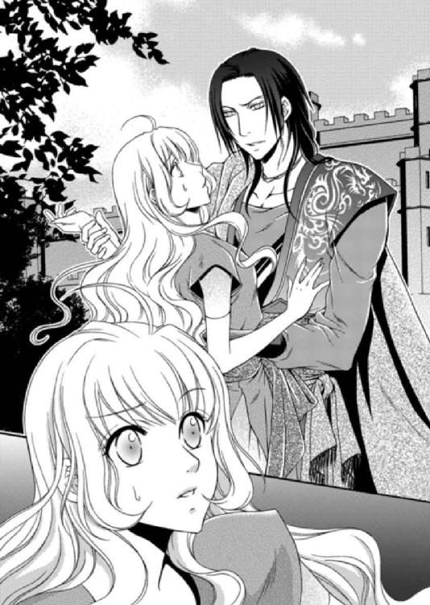
怒りに燃える目を向けると、ルセリアは唇を薄く開いたものの、無駄な行為だと理解し、口を閉じた。
アルバトルはルセリアの起こした奇跡に興奮している人々を前に、高らかに告げた。
「この娘はみなの想像どおり、伝説の砂漠の薔薇だ。二ヶ月後、我が妻とするっ！」
ルセリアの反論は人々の歓声にかき消され、グレディがすかさず耳打ちしてくる。
「王子、まだ大臣たちにも正式な発表をしておりませんが、よろしいのですか」
「構わん。民を味方につけてしまえば、表立って誰も反対はしてこないだろう」
なぜ、ワームがおとなしく砂漠へ戻ったのか、アルバトルにも不明だった。ワームの気まぐれに助けられた幸運に感謝するほかないのだ。
ここでの話は明日にはすべての国民へ伝わっているだろう。
『砂漠の薔薇』の称号をもらったルセリアはビアランにとってもっとも聖なる身分となる。それは大国の姫という肩書や、莫大な持参金よりも得がたいものだ。
「王子、人が増えて参りましたので、そろそろお戻りになりませんと、危険です」
「ああ」
アルバトルはルセリアを抱き上げると、民衆からの祝福の言葉を浴びながら、グレディが用意した馬車へと乗り込んだ。
アルバトルの隣に座ったルセリアは不満そうに唇を尖らせて、車窓側に顔を向けている。
「そなた、よもや逃げおおせると思ったか？」
「逃げたわけじゃないわ」
「そなたを逃がそうと手引きした者はみな、無事ではすまさない。自分がどれほど軽率なことをしたのか、この機会に思い知るのもいいだろう」
「待って！ 誤解よ。私はこの国の人たちの暮らしぶりをこっそり見るつもりで、街に出てきたの。だっていくら貴方にお願いしても、街に連れ出してくれなかったでしょう？ だから一人で見学に来たの。私、悪いことなんてしていないわ！」
アルバトルの視線をしっかりと受け止めたルセリアは、ひるむことなくそう告げる。
きっとどれほど問い詰めようと、ルセリアは逃亡しようとしたことを絶対に認めない。自分を助けた者に危害が及ぶことを恐れているからだろう。
その優しさの僅かでも、自分に向けられないものかとアルバトルは歯嚙みしたいのをぐっと堪える。
「それをこの俺が信じると思うのか？」
「アルバトルが私を信じてくれないというのなら、貴方が口にする愛しているという言葉は偽りだということよね」
愛していると言えば嫌がるくせに、こういうときは愛を盾にする。
アルバトルはルセリアの顎を摑んで自分の方を向かせると、冷えた眼差しで告げた。
「いいだろう。そなたがそれほどまでに言うのなら、このたびのことは不問とする」
アルバトルの言葉に、ルセリアは表情を和らげたが、それは一瞬だった。
「――ただし次にこのようなことをしたなら、そなたの侍女や召使い、そなたを守る兵士、そなたに関わった者すべてを砂漠に放り出し、ワームの餌にしてくれる」
「やっぱり貴方は砂漠の悪魔ね！」
「......今後、そなたの身勝手な行動がどう周囲に影響するか、よく考えるといい」
ルセリアはアルバトルの花嫁に選ばれたことがどういうことなのかまるで理解していない。
アルバトルは内心ため息をつきつつ、しばらくは馬車の揺れに身を任せた。
逃亡に失敗したルセリアはしばらく厳しい監視下に置かれた。
もっとも、次に逃亡を企てようとすれば、たとえルセリアのことを知らない人がただ親切心から馬車に乗せただけでも、その者は処分されるだろう。だからルセリアは単身であっても逃げ出すことはできなくなった。
けれど、不思議なことにルセリアはアルバトルに後ろめたさを感じていて、横暴だと思いこそすれ、腹は立たなかったのだ。
西門に現れたアルバトルと視線が合った瞬間、彼の目に言いしれぬ不安が浮かんでいるのを見逃さなかった。ルセリアはなぜかキュッと胸を摑まれたような小さな痛みを感じた。
あのときアルバトルから発せられた怒りは、かつてない恐ろしいものだった。誰も殺されなかったのが不思議なほど、彼の怒りは四方に放たれていたし、向けられた遠慮のない剝き出しの感情に、本当は視線を逸らしたくてたまらなかったほどだ。
それでもアルバトルはルセリアの言葉を信じてくれた。あれが本心からではなく、ルセリアを愛するゆえであっても、嬉しく感じた自分が信じられない。
レイは次こそは必ず......と囁いてくれたが、ルセリアは断った。これ以上、誰であろうと迷惑をかけることはできない。
そもそもアルバトルはレイがルセリアに協力したことに気づいただろうか。いや、もしかすると、協力者だとわかっているレイをおいてくれているアルバトルの気持ちを――そこに何か企みがあったとしても――裏切りたくない気持ちがわいたからだろう。
「ルセ様、お届けもののようですが......」
エミールの声にふと我に戻って、寝台を抜け出すと、机の上にちょこんとプレゼントの箱が置かれていた。扉の脇には兵士がいるのだが、彼らは知らないと言い張り、誰からのものかわからない。
「誰からかしら」
「我が輩なら差出人のわからないものは開けずに捨てるがねえ。いやいやいや......よしなさい、よしなさい」
「中を開けてみたらわかるんじゃないの？」
「いけません、ルセ様。私がお開けします」
ルセリアの手からエミールが箱を受け取ろうとして、互いにタイミングが合わずに床に落ち、中から黒い物体が飛び出した。それはネズミの可哀想な姿だった。
「きゃ――っ！ ネズミっ！」
声を上げたのはエミールだったが、死んだネズミにナイフを振り下ろそうとしたのは、いつの間にか現れたレイだった。
「レイっ！ 何をするのっ！」
「ネズミは疫病をもたらす。姫には触れさせられない。だから殺す」
「もう、死んでるわよ！」
「そのようだ」
ナイフを収めたレイは、何事もなかった顔で去ろうとする。それをルセリアは止めた。
「レイ、生きていたら殺していたっていうの？」
「そうだ」
「簡単に殺してはいけないわっ！」
「なぜ？ こんな生き物に情けをかける必要があるのか？」
レイは困惑した表情をして、エミールやジンの方を見つめたが、答えが出なかったのか、また視線をルセリアに戻す。
「あるわ。命は大切なのよ」
「......」
「いい？ またネズミが出ても、殺さないで逃がしてあげて。わかってくれた？」
「姫が望むなら」
理解してくれたのかどうかわからなかったが、レイはそう言ってまた柱の陰に姿を消した。
ルセリアはため息をつきつつ、屈んでネズミの様子を窺った。
「ルッ......ルセ様。怖くないのですか？」
「私の住んでいた城でもよく見たし、飼おうとしてお父様に叱られたこともあるの。だって小さな耳もふわふわの毛も、すごく可愛いじゃない」
ルセリアの国のネズミはもう少し小さくて、目がくりっとしていて、飼いたくなるほど可愛いのだ。もっともそんなルセリアの趣味に賛同してくれる者はいなかったが。
「普通の女の子の趣味にしては少々変わっておるな」
「そうかしら......」
床に転がるネズミを箱に戻そうと手を伸ばしたルセリアを、エミールが制する。
「触ってはいけませんっ！ ルセ様が変な病気を染されたら私がアルバトル王子に大変叱られます。その......私が......」
「でもエミールはネズミ苦手でしょ」
「い、いいえ。だ、大丈......夫です」
エミールはそう言いながらもネズミに触れることができず、動揺している。ルセリアは扉の前にいる兵にネズミを箱へ戻してもらうと、二度と開かないように閉じた。
「エミール、お願い。これを中庭に埋めてきてもらってもいい？」
「は......はい。かっ......かしこまりました」
エミールは今度こそ箱を手に持つと、部屋から出て行った。本当はルセリアが行きたかったのだが、今のところ部屋から出る許しはもらえないでいる。
ルセリアはバルコニーへ移動すると、新鮮な空気を吸って気持ちを落ち着かせた。
「ネズミが怖くないとは、珍しい姫君だねえ」
外を眺めるルセリアにジンは愉快そうな顔を向けた。
「小さくてあんなにも可愛い動物を怖がるほうが珍しいわよ」
「だがまあ、今度から軽率に包みを開けない方がよいぞ。きっとアビシュテの嫌がらせだろうからな」
「アビシュテ......って、アルバトルの義理のお母さんのことよね」
「そうそう。色気むんむんの熟女だぞ」
ルセリアはアルバトルの継母であるアビシュテだけでなく、弟であるサリマエルにもまだ会ったことがない。アルバトルは今のところ会わせる気がないようだ。
「ビアランでも跡継ぎ争いみたいのものがあるの？」
「ある、ある、あるぞ。アルバトル派とサリマエル派があるようだぞ。もっとも王はアルバトルに目をかけておるからサリマエルに跡を継がせるつもりはないようだな。王妃のアビシュテからすると、いい気はしないのだろうがねえ」
「ここでの王位継承はどういう基準なの？ 普通は正妃の息子が跡を継ぐわ。本来は正妃の息子であるサリマエル王子が第一継承者になるはずよね」
ルセリアの問いかけに、ジンは顔を左右に振った。
「いやいやいや。エルドナル王にはそのつもりはないようだな。もっとも本来はアルバトルの母親を正妃に迎えるつもりだったらしい。ただ当時の王が、素性のよくわからない女を正妃とすることなど、絶対に許さなかったそうだ」
「エルドナル王はどういう方なの？」
「カーン・ビーの血筋はみな受け継ぐようだが、頭はきれるが自尊心が強く短気で非常に扱いにくい。部下の失敗に対しての処分も気分によって変わるねえ。ただ、アルバトルに関してのみ王は甘い父親になるんだな。アルバトルが小国の、とりたててパッとしない......失礼、まあ自国にうまみのない姫を連れ帰って花嫁にすると言っても反対もしない。さらに一夜の相手を奪われ恥を搔かされても、息子の行動だからこそ許したといってもいいだろう」
「アルバトルじゃなかったらどうなってた？」
「その場で斬り捨てられるか、市中引き回しの上、ワームの餌だったな。王に大恥を搔かせたにもかかわらず、おとがめなしの姫さんは運がいいんだぞ」
ルセリアが感情にまかせて花瓶でもぶつけていたら、たとえアルバトルが助けに来てくれたとしても、許されなかったかもしれない。
パニックになっていたが、下手な行動に走らずにいてよかったのだ。
「うわ～やだ。今さらだけどゾッとした！」
「エルドナルは女好きの節操なしと密かに言われているが、アルバトルの実母であるアミタを誰よりも愛した一途な男らしいぞ」
「なんだか信じられない気もするけど......」
「なんだ、嫌な目に遭わされたからかね？」
エルドナルの夜伽をさせられそうになったルセリアを、アルバトルが奪い返した話はすでに広がっているらしく、ジンの耳にも入っていたようだ。ルセリアからすると恐怖の思い出しかないのだが、アルバトルにそれほどまでに愛されている姫君ということで、侍女たちの態度も最初の頃とは変化しているし、丁寧に扱われるようになっていた。
「アミタさんはどうして亡くなられたの？ その......王妃様に、とか」
「姫さん、滅多なことは言わぬ方がいいぞ。......まあ、我が輩はまだその頃アルバトルに出会っておらなんだからな。だが、朝、目覚めることなく傍らで亡くなっていたアミタを見たエルドナルは、犯人が見つかるまでの間、アルバトルを遠くの国へしばらく逃がしていたとは聞いた。結局、事の真相はわからずじまいで呼び戻されたようだがな」
「ジンはどう思う？」
「過去のことはどうあれ、アビシュテが自分の息子を次の王座に据えたいと考えていて動き回っているのは事実だ。だが、優しいサリマエルには無理だろうな」
ビアランのことを学んでルセリアが気づいたのは、優しいだけの王ではこの国を治められないということだ。
領土を広げようと戦争をしかけたこともあったようだが、逆に富めるビアランを征服しようと攻め込まれることもあった。そんな様々な駆け引きと戦いの中で今の平和があるのだから、頂上に君臨する者の責任はとてつもないものだし、支配者としての資質がなければ、王家は続かなかっただろう。
不本意だけれども、〝砂漠の悪魔〟は確かに王の素質を持っている。
「王位継承はアルバトルが優位ってことね」
「エルドナル王と大臣たちの思惑が同じだとは限らんからな。アルバトルの性格は気性の激しい現王そっくりだ。だが、サリマエルは純粋で心優しい。大臣たちからするとどちらが操りやすいのか考えればわかることだ。何より正妃の息子という大義名分もあるから推しやすい」
「......複雑だわ」
「大国にはつきものだ。どこもこの程度はあるだろう」
ジンの言うとおり確かにそうなのだろう。だが、王や大臣が家族のように仲よくしているマルフォーネ王国からすると、ここは驚くことばかりなのだ。ビアランは国土も広く、統制をはかるには大臣は複数人必要になる。彼らの様々な思惑が入り乱れ、政治も複雑になっているのだろう。
「もっとも、姫さんは今や砂漠の薔薇だからねえ。そうなると大臣たちもアルバトルの王位継承には反対はできんようになったはずだぞ。なかなかに、いいやり方だった」
「そんなぁ......勘違いされると困る」
西門での出来事はすぐさま国中に広がり、ルセリアは『砂漠の薔薇』と敬われるようになり、アルバトルは〝だからこそルセリアは花嫁にふさわしい〟と、あの一件を上手く利用しているようだ。
「ところでその、砂漠の薔薇って何？ ビアランの聖なる乙女っていうのは聞いたけど」
ルセリアのオレンジかかった金髪も砂漠の薔薇が持つ聖なる印と噂されているようだ。さらにビアランでは黄金が好まれるため、ルセリアの髪の色は尊いものになるらしい。
「砂漠を支配する聖霊や神のような存在、だな。とある国の王子が、あまりの美貌とカリスマ性により実父である王の嫉妬を買い、砂漠へと追放された。王子はすぐさまワームの餌食になるはずだった。が、王子に一目惚れをした黄金の髪を持つ砂漠の薔薇が現れ、この地に国を作るよう告げたそうだ。砂漠の薔薇はワームを思いのまま操り、王子を助けこの国を共に作ったとされる。まあ......伝説は誇張されるものだろうが、うじゃうじゃいるワームの巣の真ん中に宮殿を建て、砂漠の中に水源を確保したのだから、その乙女は偉大なる魔導師か、よほどの知識があったのだろう」
「すごい人がいたのね」
ワームのような恐ろしい生き物が棲む場所に国を作ろうというのだ。ルセリアなら一番避けたい場所だ。
「戦略的にこの地は有利だ。自然の守りは最大の武器だからなあ～」
「戦争ってあるの？ 話し合いで解決できないの？」
「この辺りの王はたいていそうだ。力で征服してきた歴史があるからな。話し合いより武力で解決だ」
「私の国は長く平和だったから、遠くの国で大きな戦争が何年もあったことを聞かされても、実感がないの」
「マルフォーネ王国、だったかな」
「ええ。谷に囲まれた小さな国よ」
マルフォーネは森や湖がたくさんあり、人々の生活も穏やかだ。雨も降るし曇りの日もある。肌を焼くようなこの国の暑さとは無縁だ。
「みながどうしているのか、知りたいか？」
「今はいいの」
「う～ん。我が輩は噓などついておらんのだがねえ。気晴らしになるかと思ったんだが、まだまだ信用してもらえんか。悲しいのう、悲しいのう」
ずっと部屋に閉じこめられているルセリアを気遣って、ジンが提案してくれていることはわかる。ルセリアもみんながどうしているのか知りたいのはやまやまだ。ただ、また自分の知らない事実を目にするかもしれない不安から、気が進まないのだ。
ジンが見せたあの映像は本当のことだったと今では思い至っている。が、噓だと口にすることで、傷ついた気持ちが少し和らぐのだ。
「ルセリア、いるのか？」
「ひゃ！」
アルバトルの声に振り返るのと同時に、ルセリアはあっという間に抱き上げられていた。不安定な体勢を支えるためにルセリアはどうしてもアルバトルにしがみつくしかなくなる。
「下ろして、アルバトル！」
「そなたはこうすると俺にしがみつく。いい気分だ」
誰が側にいようと愛情を目いっぱいぶつけてくるアルバトルは、ルセリアの戸惑いを理解してはくれない。
「今宵の夕食は大広間で行うことになった。そなたの顔見せをしろということだろう」
「顔見せ？」
「ああ。父だけでなく義母たちも一緒だ。――エミールはどこにいる」
ルセリアを下ろしたアルバトルは周囲を見渡し、いつも傍らで控えているエミールの姿がないことに気づいたのか、怪訝な表情を浮かべた。
説明しようとルセリアが口を開こうとするとエミールが戻ってきた。
「どこへ行っていた」
「申し訳ありません、アルバトル王子。所用で外へ出ておりました」
「お前は俺が不在のときはいかなるときもルセリアの側にいろと命令しておいたはずだ。それに勝る用事とはなんだ」
今にもエミールに罰を与えそうなアルバトルを、ルセリアは止めた。
「やめて、アルバトル。私がエミールにお願いしたことがあったの。だから、そんなふうに言わないで」
「頼み事なら、俺にしろ」
「どこの子供ですか」
黙ってアルバトルの傍らに佇んでいたグレディが、呆れたようにぼそりと呟く。アルバトルはジロリとグレディを睨み付けると、視線をエミールに戻した。
もしアルバトルに死んだネズミを埋めてくれと頼んだとしても、絶対にルセリアが望んだようにはしてくれないだろう。死んだネズミを部屋の前に置いた人間を全勢力を傾けて捜し続けるだろうし、見過ごした兵士を処分するに違いない。
「あのっ......ネズミが出て、エミールに追い払ってもらったの。怖かったけど、エミールは果敢に立ち向かってくれてたのよ。すごかったわ！」
ルセリアが会話に入って説明したが、アルバトルは疑惑の目を向けてくる。
「この宮殿にネズミが出るわけなかろう」
「それが出たのよ！ 大騒ぎしたんだから」
生きてはいなかったが、ネズミで騒ぎになったことは噓ではない。
だがアルバトルは目を細め、ジンの方へと視線を向けた。ジンはルセリアの味方になってくれるのか、間違っていないというふうに顔を縦に振っている。
「じゃあ、今度ネズミが出たらアルバトルを呼ぶわね。貴方が視察中だろうと、会議中だろうと絶対に来て追い払ってもらうわね。ならいいでしょう？」
「まあいい。エミール、ルセリアに湯浴みをさせ、みなと食事をするのにふさわしいドレスを身につけさせろ。いいな」
「かしこまりました」
「ルセリア。誰よりも美しく着飾ってくるといい。みなも驚くほどにな」
とにかくネズミの一件はなんとか収まりそうだ。けれど......。
「あの、私......そういうのは......」
「そう案ずるな。俺が側にいる。そなたは笑っているだけでいい」
アルバトルはルセリアの頰をひと撫ですると、今度は指先で髪を弄ぶ。側にいるといつだってこんなふうに彼はルセリアのどこかしらに触れてくるのだ。
触られるのはとても嫌なのだが、一度失った信頼を取り戻すためにルセリアはできるだけ逆らわないようにしていた。今度は誰の手も借りず一人で逃げ出さなければならない。
「後で迎えを寄越す」
アルバトルは名残惜しそうにルセリアの髪から指を離すと、部屋を出て行った。
「なんだ、なんだ、姫さん。気が進まぬ顔をしておるなあ」
「着飾ったりするのは似合わないから、嫌なの」
「このエミールにお任せください！ 私がルセ様を誰よりも素敵な女性にしてみせます！」
先ほどのやりとりで緊張したのだろう、エミールは今ではすっかり安堵してルセリアの両手を握りしめて上下に振り、頰を紅潮させていた。瞳はキラキラしていて、とても興奮している。
「でもね、エミール」
「お叱り覚悟で申し上げますが、ルセ様はアビシュテ様のように妖艶な方ではありません。でも大きな青い目は宝石のように綺麗だし、豊かな髪も太陽の光に煌めくと本当に美しい。ルセ様はもっと自信を持たれた方がよろしいですよ」
「え......あ。そ。そうかな。そうだと嬉しいけど......ありがとうエミール」
「では、私、湯浴みの準備をしてまいりますね」
エミールが慌てて湯殿へ向かったのを見ながら、ジンは首を傾げて顎を撫でた。
「我が輩もエミールに同意するぞ」
「ありがとう、ジン」
「姫さんが来てから、アルバトルはよく眠ることができるようになったそうだぞ」
「どういう意味？」
「姫さんを取り戻すまでの間、ずいぶんと気を揉んでおったようだからな。サイファス王子に手をつけられる前に姫さんを自分の側におくことができてホッとしたんだろう。我が輩からすると、触れさせてもらえない方が、もやもやと眠れぬ夜になりそうだが」
「変な言い方しないで！ ......じゃあ、ジンが一緒に眠ってあげればいいのよ」
「いやいやいや、我が輩は睡眠を必要としない。アルバトルは話し相手になってくれん。寂しいね」
ジンは面白くなさそうな顔でぶつぶつと独りごちていた。
ルセリアはカウチに腰を下ろすと、左手首のブレスレットに触れて、目を伏せた。
逃亡できないことに焦りを感じながらも、この状況に慣れてきていることにも気づいている。アルバトルを嫌いだと言い切れなくなってきてもいる。
どんな女性でも手に入れられるはずの冷酷で傲慢な男が、ルセリアに好かれたいと本気で考えて、似合わないことばかりしているからだろう。
何度断わっても、アルバトルは高価なドレスやアクセサリーをプレゼントしてくるのだ。たいてい同じ時刻に起床するが、アルバトルが先に起きる場合は、一人で目覚めたルセリアが寂しくないようとでもいうように、色とりどりの花が部屋を飾る。
眠るときは必ず引き寄せられて、互いの体温を感じながら、一夜を過ごす。最初は緊張して眠ることができなかった。なのに腰に回されたアルバトルの腕がいつの間にか心地よくなっていることに、ルセリアは戸惑いを覚えている。
「ルセ様にピッタリのドレスを選びました。きっとお似合いになりますよ！」
「ええ。ありがとう」
ルセリアはいろいろ思うことがあったが、今は夕食会のことだけを考えることにした。
夕食の会は大広間で行われた。
床一面に敷物が敷かれ、高さが十五センチほどの低いテーブルと、同じように低い作りのソファが並べられている。男性はあぐらを搔いて座り、女性は正座か少し脚を崩して座っていた。
上座に王のエルドナルが王妃のアビシュテとともに座っている。
アビシュテは聞きしにまさる妖艶な女性で気位の高そうな顔立ちをしていた。長い睫に覆われた目、高い鼻に肉厚の唇は女としての魅力にあふれていた。
豊かな胸、細い腰。腕や脚はスラリとしていて、人の目を引く。ひときわ目立つ衣装にも、アビシュテの自己顕示欲が表れているように思える。
王の右手にアルバトルとルセリアが座り、この位置関係ならアビシュテの息子であるサリマエル王子が向かい側にいるはずだが、それらしい少年王子はいない。代わりにでっぷりした夫婦が座っていた。
身内だけの夕食会だと聞いていたが、ざっと数えただけでも四十人はいてルセリアの緊張も頂点に達していた。
アルバトルが他国から連れてきたという花嫁がどんな女性なのかみな興味があるようで、彼らの視線はすべてルセリアに注がれ、とにかくいたたまれない。
刺すような視線と合わないよう、ルセリアはテーブルばかり見つめていた。
そこには山盛りの料理が並べられ、果物も豊富にある。酒や果物ジュースなど様々用意されている。
ただ、王の挨拶の後、最初に振る舞われる飲み物は飲み干すことがしきたりのため、ルセリアは緊張していた。
「珍しく緊張した顔をしているな」
「そんなことないわ」
ここでエルドナルに紹介されるのかと、内心かなりびくついていたルセリアだったが、王の挨拶の中にそういった内容のものは含まれなかった。
ようやく少し気が楽になったルセリアは、からからになった喉を潤そうと、杯に手を掛けた。が、その手はアルバトルによって制される。
「そなた酒は飲めないはずだぞ」
「え、お酒なの？ でも......最初に振る舞われた飲み物は飲み干さなくてはならないのよね？」
「しきたりではな。だが、女にはかなりきつい酒だ。俺が代わりに飲んでやろう」
「ありがとう」
アルバトルはルセリアの手から杯をやんわりと奪うと、冷えた表情にうっすらと笑みを浮かべた。
「今日のそなたはとても美しい。ドレスといいネックレスといい、そなたのためにあるようななものだ」
「......本当？」
着ているドレスワンピースは薄い黄色からオレンジ色のグラデーションが美しい。裾には小さな宝石が縫いつけられていて歩くとキラキラと輝く。胸元には鳥が翼を広げたような金細工のネックレスをつけていて、これが結構重い。ドレスの上に羽織ったローブは、暗い赤を基調に金糸の刺繡で縁取りされていて、ルセリアのオレンジがかった金髪が映える。
エミールにコーディネイトしてもらって姿を鏡に映したルセリアは、見たこともない自分の姿に心底驚いた。文句のつけようがないほどドレスやローブ、アクセサリーは素晴らしい。
「ああ。すべて俺が選んだものだから、そなたに似合って当然だ。これで田舎の姫とは言われないぞ」
「......」
田舎の姫と言われてムッとしたが、ルセリアは言葉にもせずに、微笑を返す。
「なんだ今日は顔を真っ赤にして怒らないのか？」
「だってここは公の場だもの」
「おしとやかなそなたを見たいときは、この方法をとればいいのだな」
中身を飲み干した杯をテーブルに戻したアルバトルは、ルセリアの指に自らの指を絡めてきた。ルセリアがその手をそっと離そうとしたが、何度、ふりほどいても指が絡んでくる。
「場所をわきまえて」
「ルセリア......俺は――っく！」
アルバトルが顔をしかめて喉を押さえたかと思うと、酒を吐き出した。驚いたルセリアは、激しく咳き込む彼を支えながら声を上げた。
「アルバトル、どうしたのっ!?」
「......毒が......」
身体を屈めて咳き込みながらもアルバトルは絞り出すようにそう言う。
彼の異変に気づいた周囲がざわめく中、ルセリアは絶叫に近い声で叫んだ。
「誰か、侍医をっ！」
「アルバトル、どうしたっ！」
王のエルドナルが青い顔で立ち上がり、こちらへ駆け寄ってくる。ルセリアはアルバトルの身体を支えながら、助けを求め続けた。
「早くっ、侍医をっ！」
「警備を強化しろ！ この場を離れた者がいないか、すぐさま確認を取れ！ 怪しい者はすべて捕らえよ！」
その場が一気に緊迫する中、ルセリアはアルバトルの腕にしがみつき、グレディが引き離そうとするのを拒否した。
「いいえ。私はここにいる」
「そ......んな顔をする......な。大丈夫だ」
「そうね。貴方は砂漠の悪魔だもの。大丈夫に決まっているわ」
動揺しつつもルセリアは必死に平静を装い、アルバトルを励ました。周囲がパニックになる中、自分まで同じように理性を失ってはならない。
アルバトルは荒い息を吐き出しながらも、ルセリアの頰に触れてくる。
「そなたが口にしなくて......よかった」
「アルバトル......」
いつものように怒鳴ってほしい。なのに、アルバトルはルセリアの心配ばかりしているのだ。
心臓を鷲摑みにされたような痛みが胸の奥からつき出して、ルセリアは身体が震えた。
「姫様、あとは私どもが」
グレディに肩を摑まれ、今度こそアルバトルから引き離されてしまう。
ルセリアは今にも座り込んでしまいそうなほど、動揺している。
「でも......私もアルバトルと一緒に行くわ」
「一体、何があったというのだ！」
王のエルドナルの問いかけに、ルセリアはうわ言のように答える。
「杯に毒が......」
「毒だと！」
エルドナルの形相は恐ろしいもので、部屋の温度が一気に下がった。
兵士や召使いだけでなく、今夜ここに呼ばれた者たちはみな、災難が降りかかるのを恐れて、遠巻きに様子を窺っている。
そんな中、アビシュテから放たれた言葉がルセリアを窮地に立たせた。
「のう、では毒はそなたが盛ったのかえ？」
「いいえ、違います！ 私の杯に入っていたようです。お酒を飲めない私の代わりにアルバトルが飲んでくれたのです」
「本当かどうか、あやしいのう」
確かにルセリアが飲むはずの酒だった。けれどアルバトルが酒を飲めないルセリアの代わりに飲み干した結果なのだ。
「はっ、離して！ アルバトルの側にいさせてっ！」
大広間から連れ出されるアルバトルを追おうとしたが、ルセリアはエルドナルによって処遇を下された。
「すべて毒味がされているはずなのに、なぜこのようなことになるのだ！ 真偽が確かめられるまで、この者を牢屋に入れよっ！」
「私ではありません！」
王に指を差されたルセリアは凜とした態度でのぞんだが、アビシュテはフンと鼻を鳴らして、見下すような視線を向けてくる。
「そなた、アルバトルに無理やり連れてこられたのだろう？ 愛する者から引き離され、結婚式まで台無しにされた。それはもうアルバトルを憎んだことよのう。わらわも同情はする。だからといって王子を殺そうと企むのはいかがなものか」
「違いますっ！」
「いいか、本来なら今この場で斬り捨てておったが、そなたは我が息子、アルバトルが是非にと望んだ娘。だから今は生かしておく。だが証拠を消すため動き回れないよう、そなたを牢屋に拘束する。――連れて行けっ！」
エルドナルがそう命令すると、ルセリアはアビシュテの側に控えていた徒者らしき眼鏡の男と、兵士の二人によって拘束されて、部屋から引きずり出された。
「待って、待ってっ！ アルバトルっ！ グレディっ、どこ！ どこなのっ！」
「さあ、こっちだ」
「は、離してっ！ 私をアルバトルの側に行かせてっ！」
どれほどもがこうと逃げ出すこともできず、ルセリアは廊下を引きずられて地下への階段を下りるよう背を押される。
「王のご命令だ。どのようなご身分であろうと、我が国の王子の命を奪おうとされたのですから、相応の罰を受けてもらうことになる。これで王子が亡くなられるようなことにでもなれば......」
「私ではないと話しているでしょう！」
「悪いけど誰が犯人だろうと僕は構わないんだ、姫様」
眼鏡の男はルセリアの耳元でそっと囁いた。その言葉の意味がすぐに理解できず、ルセリアは目を瞬かせる。
「どういうこと？」
「深く考えなくていい。さあ、牢屋へご案内しま......っつ！」
ルセリアは眼鏡の男の腕を嚙み、兵士に肘鉄を食らわせた。二人がひるんだ隙に、きびすを返す。
「ちっ、嚙まれたっ！ 逃がすなっ！」
ドレスの裾をたくし上げ、ルセリアは階段を駆け上った。今にも息が切れそうだったが、捕まるわけにはいかない。どうしてもアルバトルの側にいたい。ただそれだけだ。
「姫っ！」
階段の一番上にグレディの姿を見つけて、ルセリアは泣き笑いの顔で駆けた。彼も駆け下りてきて、ルセリアの手を摑む。
「グレディっ！ 私、アルバトルのところへ行きたいのっ！ 私......」
「ええ、わかっております。王子のご命令で、お迎えに参りました」
「グレディ、アルバトルは......アルバトルは大丈夫なの？」
「とにかく。さあ、参りましょう」
ルセリアはグレディについていこうとしたが、先ほどの眼鏡の男が兵士とともに追いつき、二人の前に立ちはだかる。
「待て、グレディ。命より大事な王子が死ぬかもしれない原因を作った女を庇うのか？」
「こちらに来たばかりの姫様にできることではないでしょう、ブランド」
「僕は王の命令で動いている。誰が犯人なのか問題ではない。その女を渡せ」
「王？ 貴方の場合は王妃の命令でしょう。嘆かわしい」
「どちらにしても、その田舎者を庇うとお前の命はない。僕はそんなの望まない」
二人の会話を聞いていて、ルセリアは少し冷静さを取り戻した。
アルバトルに毒など盛っていないし、だからこそ今は彼の側にいたいと心底願っている。
けれど、状況はそれほど簡単なものではないのだ。ここでグレディがルセリアをアルバトルのもとへ連れて行けば、王の命令に背くことになり、グレディが罰を受けることになる。
どれほど心が乱れようと、今は状況を見守るしかないのだ。
ルセリアはグレディの手をやんわりと離すと、通路に背を向けて、階段を下りはじめた。
「ルセリア姫っ!?」
「ごめんなさいグレディ、気が変わったの。――早く牢屋に連れて行きなさい」
「姫様、なりません」
「グレディ。疑いを晴らして迎えに来てくれたら私はそれでいいわ」
ブランドの立つ場所まで下りたところで振り返り、ルセリアは笑顔を向けた。作り笑いは引きつっていただろうが、自分は大丈夫だと伝えることで、グレディの気持ちを少しでも和らげたかったのだ。
「お前より物わかりがいいようだ」
「姫様っ！」
「後でアルバトルの様子を知らせてくれる？」
「それは......ですが！」
「では、行きましょう、姫」
ブランドは今度こそ逃がさないとでもいうように、ルセリアの背後に回ると、階段を下りるよう促してくる。
ルセリアが足を踏み出すのと同時に、ブランドの背後から剣が突き出て、首筋を捉えるのが見えた。
「......っ！」
驚いたルセリアが振り返ると、アルバトルが剣を構えて立っていた。
「アルバトル！」
「ブランド、汚れた手でルセリアに触るな。......さもなくば、俺がお前の腕を斬り落とす」
アルバトルはグレディや召使いの支えを払いながら、すさまじい形相でブランドを睨みつけている。今にも襲いかからんばかりの野性の動物のようだ。
「王子、いけません、早くお部屋に......」
「グレディ、俺に構うなっ！ ルセリアには手を出すな。誰もだっ！」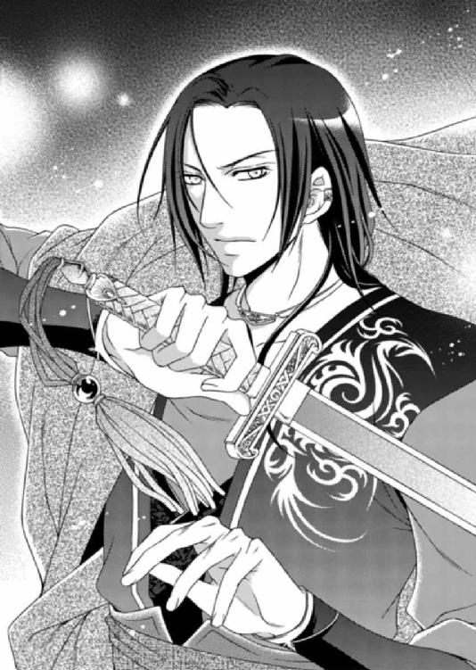
怒りと苦痛に満ちたオーラを放つアルバトルの姿に、ルセリアは胸が熱くなり、身体が震えた。
「失礼いたしました、アルバトル王子。姫様、どうぞアルバトル王子のもとへお行きください」
ブランドはころりと態度を変えて、愛想のいい笑顔を浮かべると、ルセリアの身体をアルバトルの方へ差し向けた。あまりの変貌ぶりにルセリアのほうが驚きを隠せない。
「......え？」
「さっさと行け。王子はあんなふうに切れると宥めるのが大変だからな。僕はそういう面倒は嫌だ」
そっと耳元で囁かれた台詞にぎょっとするものの、今はアルバトルのほうが心配だ。
「ルセリアっ！ 来い！」
ルセリアが駆け寄ると、アルバトルの剣を持たない左手が腰にすぐさま回り、身体が引き寄せられた。
「誰にも傷つけられていないな？」
「私は大丈夫。アルバトルは......」
「俺は......こんなことに負けはしない」
激しい怒りを灯すアルバトルの黒い瞳が、ルセリアの姿を映して、少し和らぐ。
触れている彼の身体から高い体温が伝わってきて、ルセリアの目に涙が浮かんだ。
「王子、侍医が待っております。早くお戻りを」
「わかっている」
アルバトルは剣で身体を支え、もう片方の腕をルセリアに回して痛いほどきつく抱き寄せる。
密着している身体や腕から、アルバトルの全身が苦痛で震えていることにルセリアは気づいた。
顔色は真っ青で、怒りで唇を嚙みしめている。声すらかけられないほどの威圧感にルセリアは息を吞んだ。
苦痛の中にあっても、王子としての気概に満ちあふれているアルバトルをそっと支えながらルセリアの胸は熱く、どういうわけか甘い痛みを感じた。
すぐさまアルバトルは召使いたちによって強制的に寝かされ、侍医が煎じた薬を何種類も飲まされていた。
ずっと悪態をついていたが、それでも侍医に従い、いつしか眠りについた。
王のエルドナルは何度も部屋を訪れてはアルバトルの様子を窺い、そのたびに安堵の表情を浮かべて出て行った。
ルセリアはエルドナルに声をかけられることはなかったし、王妃であるアビシュテは、一度もこの部屋を訪れなかった。また、アルバトルの弟でもあるサリマエルも顔を見せることはなかった。彼の場合は、この一件を知らされているのかどうかも不明だ。
エミールとともにルセリアはアルバトルの側について献身的な看護を続けた。
アルバトルがいなかったらあの毒はルセリアが飲んでいたはず。身代わりになってくれたというのに、何もせずにいられなかったのだ。
「アルバトルは元気になるのよね？」
「王子は普段から毒に身体を慣らされていますので、命に別状はありません。しばらくは休養が必要ですが」
侍医はルセリアに微笑んでこちらの心配を和らげてくれる。
「よかった。本当によかった」
「王子が寵愛されている姫様が側にいらっしゃればすぐによくなりますよ」
「えっ......っと......それは......」
「私どもはこれで。何かありましたらすぐにお呼びください」
侍医たちが出て行くと、ようやく部屋が静かになり、ルセリアの張り詰めていた気持ちも少しずつ落ち着きを取り戻す。
そんなルセリアをエミールが気遣う。
「ルセ様も少しお休みになられては？」
「いいの、私のことは気にしないで」
「ではこちらを。夜は身体が冷えますから」
「ありがとう」
エミールから受け取ったショールを肩に掛け、ルセリアは新しいタオルを用意しようと、アルバトルの側を少し離れた。
そこへグレディが近づいてきて、申し訳なさそうな表情を向けてくる。
「どうしたの、グレディ」
「姫様はあのような状況にあって、私の立場を慮ってくださいました。なんとお優しいお方なのでしょうか。それに加えてあの気丈さ。私はたいそう感動いたしましたよ」
「......え？」
「ぼっちゃまに『貴方は砂漠の悪魔だから大丈夫』とおっしゃいましたね。素晴らしい！ ブランドが姫様を拘束しようとしたとき私の身を立場を案じ、自ら牢屋に行くとおっしゃった。さすがぼっちゃまが望んだ方ですね。ああ......私はルセリア姫にどのような感謝をすればよろしいのでしょう」
「ぼっちゃま？ ......アルバトルが、ぼっちゃま！！」
「......失言でした。今のはお忘れください。ちょっとした昔の癖です。時折出てしまうのです。こう呼ぶと、王子は大変不機嫌になられます。昔はそんなことなかったんですが......とても可愛かったんですよ。なのにどうしてあんな暴君になってしまわれたのか......。いえ。そうではなくて、感謝のことでしたね」
グレディはいつもアルバトルの傍らで飄飄とした表情で立っているが、さすがに今日は少し顔色が悪い。それでも口調は明るく、沈みがちのルセリアを気遣ってくれているようだ。
「感謝なんてされる立場にないわ。私のせいでアルバトルがあんなことになったんだもの」
エルドナルの絶対命令で城内で犯人捜しが行われているが、これといった人間は今のところ見つかっていない。
ただ、ルセリアには気づいたことがあった。
「グレディ。あの毒が入っていたのは私の杯。それって、本当に狙われていたのは私だってことになるわよね？」
「......大変申し上げにくいことですが、おそらくそのように思われます。ネズミの一件もありましたので、アルバトル王子が心配されているのはそのことなのですよ。だからアルバトル王子の命令を受けて、私が迎えに参ったのです。結局、王子が取り戻しにいらっしゃいましたがね」
「もしかしてアルバトルが王位を継ぐのに優位な『砂漠の薔薇』って呼ばれる私が側にいたら邪魔だとか？」
「いえ、王子が失って一番悲しむだろう、姫様の命を危うくすることで、精神的なダメージを与えようとしたのだと思われます」
「ダメージ？ どうして？」
「四日後には『慈雨の儀』があります。毎年王が執り行っている祭なのですが、今年から三度のうち一回を王子が執り行うことになっています。それを成功させたくない者がいるのでしょうね」
ビアランにとって『慈雨の儀』は神聖な儀式であり、国民の前で執り行われる大事な行事の一つだ。失敗すればアルバトルに対する国民の評価は一気に下がるだろう。
もし、ルセリアが毒に倒れていたら、アルバトルは激しく動揺して大切な儀式をおろそかにしてしまっただろうか？
「私が飲んでいたら......やっぱり死んでいたのよね......？」
「まだ杯の中身を分析中ですが、どうも酒に浮かべられた果物の中に毒が仕込まれていたようです。なので毒味の検査に引っかからず、果物の中からゆっくり染み出したようですね。王子のご様子を見る限り、致死量ではなかったようですが......毒に慣れない姫様では、死ぬほどの苦しみを味わうか、体調によっては最悪の事態もあったかもしれません」
「あのときアルバトルが言ったの。私がお酒を飲まなくてよかったって......苦しいはずなのに......心配をしてくれたの。死にそうなのは自分のくせに......」
頰に触れたアルバトルの手の感触をルセリアは今も忘れられない。温かくもあったが小刻みに震えていた。その表情が目に焼き付いたまま。
思い出すと胸が苦しくて、ごちゃごちゃした感情が心を覆う。
「アルバトル王子は、心から姫様を愛していらっしゃいます。自分の命より大切に思われているのですよ。私は長年お仕えしておりますが、最近のような王子を見たことがありません」
「私はそんなふうに愛される人間じゃないわ。――もう、何がなんだか混乱しているわ。だってアルバトルの愛は嵐みたいなの。考える暇も与えてくれないほど......。こんな人に出会ったのは初めてだもの」
アルバトルの気持ちは痛いほど伝わってくる。けれど、こちらの戸惑いすらなぎ倒してしまうほどの強い情動に、押し流されてしまうのは嫌なのだ。
「王子は幼い頃に母上を亡くされたこともあって、愛情というものをご存じありません。ですからお気持ちをストレートに表現されるのですよ。今だって姫様にどうすれば好かれるのか、頭をかかえていらっしゃるのです」
「本当に私のことで悩んでいるの？」
グレディを窺うと、目が合った。その瞬間、彼は大げさに頷いた。
「あのご気性ですからすぐにはご理解していただけないでしょうが、口をついて出るのは姫様のことばかり。アルバトル王子を拒否されるばかりでなく、あの方の本当の姿を見つめる努力をしていただけないでしょうか？」
「ごめんなさい。私、そういうの......嫌なの」
「何がお嫌なのでしょうか？」
「みんなが私をアルバトルの方へ向けようとするのが嫌なのよ。ここでは私の意思は尊重されないの？」
「尊重はしておりますよ。ただ私にとって優先されるべきことはアルバトル王子です。あの方が姫を望まれるのなら、私は叶えて差し上げるため最善を尽くすしかないのです」
グレディはルセリアに感謝をしてくれているようだが、あくまで彼が仕える相手はアルバトルであり、主人の望みがすべてに優先する。
みながルセリアをアルバトルのもとへと押しやろうとする。それに対して口では嫌だと言いつつも、心の奥深いところではそう振り払えない自分を見つけてしまう。
「ルセ様、アルバトル王子がお呼びです」
新しいタオルを籠に入れているルセリアのところにエミールが呼びにきた。
同じ部屋にいるのに、少し姿が見えないとアルバトルはルセリアを捜す。その執着に呆れつつも、不思議と悪い気にはならなかった。
ルセリアはすぐに寝室へ戻ったが、アルバトルはいつも以上に不機嫌な顔をしていた。身体に残る毒のせいなのかまだ微熱があり、日常的な生活は困難だと侍医にきつく言われて寝室にほぼ軟禁されているせいだ。
「どこに行っていたんだ」
「新しいタオルを用意していただけよ」
「そなたは俺の側にいろ。見張っていないとそなたは逃げるだろうから、安心できん」
こんな状態にもかかわらず、アルバトルの瞳には情熱が浮かんで、ルセリアをどきっとさせる。
「逃げると思うの？」
「俺が弱っている間なら、逃げるチャンスがあるだろう」
「そんなこと考えもしなかった」
「本当か？」
「ええ」
アルバトルに問われるまでこれがチャンスだと考えたこともない。指摘されてむしろ驚いたくらいだ。
「そなたも少し休め」
「......まだとても熱いわ。熱があるのよ」
額に浮かんだ汗を拭うとやんわりと手を摑まれる。
ルセリアは逆らうことなく寝台へと上がり、アルバトルの隣に座った。アルバトルはルセリアの膝に自らの頭を置いて心地よさそうに目を細めた。
もしかして彼は甘えているのだろうか。いつもは獰猛な肉食獣のように一分の隙もない、アルバトルの無防備な姿にルセリアはなんともくすぐったい気持ちになっていた。
「そなたが側にいてくれたら......すぐに熱など下がる。案ずるな」
「アルバトル」
「いいから、もう休め」
ルセリアはアルバトルの頭を下ろして隣に横たわって目を閉じた。するとアルバトルの手が伸びてきて、ルセリアの頰に触れてきた。
目を開けてアルバトルの顔を見ると、自分の心の中が乱れそうな気がしたルセリアは、怖くて寝たふりを続けた。
そのあたたかな手は何度も何度もルセリアの頰を優しく撫でる。
頰に伝わるいつもより高い体温に不安が拭えないものの、アルバトルが今も命の鼓動を刻んでいる事実に、安堵している。
アルバトルはサイファスとまるで違う。アルバトルがルセリアに向ける愛情は痛いほど現実味がある。
アルバトルの激しい抱擁は息苦しくも熱い。ルセリアにとっては刺激が強いのだ。幼い頃から想像していた甘くて穏やかで優しい恋愛とはほど遠く、その熱風に心も身体も激しく揺さぶられる。
自分の気持ちがどうなってしまったのか答えを導き出せないまま、ルセリアはゆっくりと眠りに落ちた。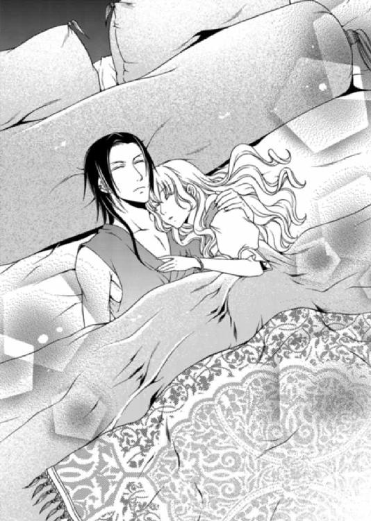
アルバトルの部屋には、日を追うごとに様々な人たちが見舞いに訪れていた。
相変わらずそこにはアルバトルの父親であるエルドナルも頻繁にやってきたが、やはり義母のアビシュテは一度も顔を見せることはなかった。よほどアルバトルとそりが合わないようだ。
毒を盛った犯人捜しは難航しているようで、今もまだ捕まっていない。
犯人が野放しになっているためか、ルセリアが少し側を離れただけで、アルバトルは度が過ぎるほどの剣幕で呼び戻すほど、神経質になっていた。
ルセリア自身も、さすがに犯人が誰なのか気になり恐怖を感じていたものの、自分ではどうすることもできないため、アルバトルの看病に没頭することで忘れるようにしていた。
「王子、この度の慈雨の儀ですが、無理をなさらず、早々に決断してエルドナル様にお任せするほうがよろしいのではありませんか？ 王もそのようにご提案されております。今の体調では最後まで体力が持ちません。結局、恥を搔かれることになりますよ」
グレディは朝からずっとアルバトルの説得をしていたが、当然のごとく上手くいかないようだった。
「この程度のことで大事な行事を放り出すことなど俺にはできん」
アルバトルはクッションを背にして寝台に座り、長い髪を撫で上げる。ここしばらく寝台に横になっていたが、起き上がれるようになっても、彼の口から弱気な言葉は聞かれなかった。
「次の機会を待たれてはいかがです？ 失敗しても泣きつくところはございませんよ」
「誰が泣きつくんだ。だいたい、王になる者はいつでも強くあらねばならぬ。決して弱さを見せてはならぬと俺に教えたのはグレディだぞ」
「そうでしたね。ぼっちゃまのことですから、今さら交替する気はないだろうとは思いましたが――それほど強く望まれるのであれば、仕方ありません。王にはそうお伝えします」
「頼んだぞ」
「確認しておきますが、私は一応、反対しましたからね」
「ああ。いいから、もう行け」
グレディは寝台から離れ、側にいたルセリアに会釈すると、部屋から出て行った。
「アルバトル。本当に大丈夫なの？ だってまだ......」
「お前までグレディと同じことを言うのか？」
「もう～～～そうじゃないわよ」
こうと決めたら譲らない頑固なアルバトルには何を言っても無駄なのだ。
ルセリアはそんな彼の性格を当初よりも理解しているものの、もう少し人の意見に耳を傾けたらいいのにと、思ってしまう。
「王子、お薬の時間です」
侍医がやってきて、薬を煎じた飲み物を渡すと、アルバトルは本当に嫌そうな顔をして、それでも一気に飲み干した。まるで修行を強要された僧のようにも見えて、ルセリアは思わずふき出していた。
「笑ったな」
「あは......あ、ごめんなさい。アルバトルがものすーごくまずそうな顔で飲んでるからつい」
怒られるかと思ったものの、アルバトルは微笑を浮かべてルセリアの頰を撫でてきた。触れる指は意外なことにひんやりしている。本当は手を払いたかったが、今の彼を目にして、できなかったのだ。
「俺の前で初めて笑ったな」
「えっ、そうだった？」
「いつもしかめっ面か、顔を真っ赤にさせて唇を尖らせているだろう。笑っているほうが可愛いぞ」
「誰のせいだと思ってるのよ！」
さすがに貴方の前で笑わなかっただけだとは言えず、ルセリアはアルバトルの指をやんわりと離した。
「ではいつも笑っていろ。――俺は少し眠る......側にいろ。いいな」
「ええ。アルバトルが、目覚めたときもちゃんといるわ。だから安心して眠って」
「いい子だ......」
薬に催眠剤が混ぜられているようで、アルバトルは横になるとすんなりと眠りに落ちた。
眠っているときの顔はいつもの威圧感や獰猛さとは無縁の美しい容貌だけが際だつ。
彫りの深い顔立ちに、高い位置にあるほお骨。すっきりした眉に、整った鼻梁。ルセリアを息苦しくさせる唇は艶やかだ。
大国の王子で、目を惹く美貌と風格ある雰囲気を纏った砂漠の悪魔。もう少し思慮深く穏やかになれないのだろうか。
そう考えてルセリアはまた笑いが漏れそうになった。
そんなアルバトルなど考えられない。彼は砂漠を渡る熱風だ。生まれながらにして支配者であり、獅子でもある。
彼の鋭い瞳に捉えられたら最後、逃れられない――。
「姫様、少しよろしいですか？」
そっと声を掛けられて振り返ると、戻ってきたグレディがジンとともに立っていた。
「どうしたの？ 今日はジンまで姿を見せてるのね」
「我が輩はいつでもこのあたりを、ふらふら、ふ～らと、漂っておりますので」
ルセリアはアルバトルがぐっすり眠っているのを確かめてから立ち上がると、二人と話すためにバルコニーへと移動した。
「実は一つ、お願いがございます」
グレディは珍しくかしこまった様子でそう告げる。
「どんなこと？」
「王子のために、姫様の御身を貸していただきたいのです」
「いいわよ」
ルセリアがあっさり了解すると、ジンは驚きに目を見開き、グレディはにっこりと微笑む。
「どうしたの？」
「いやいやいや。姫さんは本当に純粋な娘だ。だが事情を聞かず、そう簡単に返事をするものではないぞ」
「え、そうだけど......。ちょっと待って、グレディ、そんなに危ないことなの？」
ルセリアはここから逃げ出すことをまだ諦めてはいない。ただ、身代わりになってくれたアルバトルが回復しないうちは、そのことを考えないようにしているのだ。
自分のために、大切な儀式をも危うくしている彼の助けになれるのなら、できる限りの協力は惜しまないつもりだった。
アルバトルが元気になって、チャンスがきたら次こそ――。
「危険はございません。ただ、アルバトル王子は絶対に許可をくださらないことなのです」
「要するに、我が輩に身体を貸して欲しいということなんだな。いやいやいや、別にいやらしい意味ではないんだがねえ。姫さんがいやらしいわけではないぞ」
「身体を貸すって、そんなふうに強調されると、いやらしいことのように聞こえるんだけど」
ジンをジロリと睨むと、何かに驚いたように目を見開いて頭を左右に振る。
ルセリアが怒っている理由が理解できないといった様子だ。すかさずグレディがつけ加える。
「誤解なさらないでください。実は私がジンに身体を貸すことになっていたのですが、今の体調を見る限り、式の間も私は王子から離れることができません。ただ......ジンに身体を任せるにしても、絶対に秘密を守ることのできる信頼できる者が必要なのです」
「憑依とか......そういう感じ？」
一度はジンに手を貸して父や姉の様子を窺った。もう一度同じ体験をするだけなのだとルセリアは思った。
「おやおやおや、我が輩は幽霊ではないぞ。まあ、似たようなものだから不安はよ～くわかる。が、安心してくだされ。身体を貸してもらったからといって、姫さんの心を読めやしませんし、嫌なことを強制することもない。ただ、術を使うのに誰か信用のおける者の身体が必要だというだけなのですな」
「でも、ジンに私の身体を貸して何をする気？」
「姫は慈雨の儀について学ばれましたよね？」
「ええ。この国の大切な儀式については一応」
「ビアランの王は勇猛果敢なだけでは国民の支持は受けられません。神をも凌ぐカリスマ性も必要とされるのです。ですから本来は慈雨の儀を行った後、数日おいて川ができるのですが、その前にジンの力を使って雨を降らそうとしているんですよ。そうすることで王子が神に愛され、この国の王にふさわしいことを国民に示せます」
確かに儀式の最中に僅かでも雨が降れば、人々が盛り上がる。ただ、そんな小細工などアルバトルは喜ばないはずだ。
「私は必要なことと思わないけど。だってアルバトルはこういうことを許さないんじゃない？」
「歴代の王は陰に魔導師を従え、儀式を成功させて参りました。エルドナル王は魔導師嫌いのため、そういったことをせずにいたのですが、アルバトル王子にはジンがおります。利用しない手はないでしょう。それに正妻の子ではない王子のことをよく思わない大臣たちもおります。彼らを黙らせるためにも、民の心を惹きつけることが必要となるのです」
「う～ん。そうだけど......」
「姫さん、もしやもしや......我が輩が嫌いかな？」
ジンがどことなく寂しげな顔をしていた。だが、身体を貸すことよりも気の進まない理由がルセリアにはあったのだ。
「身体を貸しても私の心は読めないのよね」
「もちろんだぞ」
「変なことはしない？」
「姫さんが嫌がることはしない。我が水晶髑髏に誓うぞ」
「いいわ、協力する！」
アルバトルにとって大切な儀式が成功する一つの手助けとなるなら、身体くらいいくらでも貸せる。それにルセリアはちょっぴり興味もあった。
「くれぐれもアルバトル王子にはご内密にお願いします。知られますと大変困ったことになりますので」
「ええ。アルバトルには内緒ね。私もその方がいいと思う」
儀式の最中、タイミングよく雨が降ったらジンの仕業だろうとさすがにアルバトルも気づくだろうが、終わってから知るのと、前に知るのとでは前者の方がいいだろう。
「私は......アルバトル王子の花嫁として迎えるべきは、立派な身分と強大な後ろ盾を持つ大国の姫君がふさわしいと常々考えて参りました。いえ、決して姫が釣り合わないというわけではなく、王子が正妃様のご子息ではないために至った考えです」
それならばなおさら、大国の姫君がふさわしいとルセリアは説得しようと思ったが、その前にグレディの言葉に遮られた。
「ですが――姫を連れてこられてからぼっちゃまはお変わりになりました。いつも険しかった表情が豊かになり、僅かではありますが人を許すことも覚えられた。私が長年、口を酸っぱくして忠告して差し上げたことより、姫と触れ合うことで人として成長されているのです」
ルセリアから見て、アルバトルのどこにグレディの言うような変化が現れたのか見つけられない。それでもグレディはとても嬉しそうだった。
「アルバトル王子はいずれ王となられる身。ですが今の王子には偉大な王に必要な慈悲や寛容さといったものが欠落しております。慈悲の心に満ちた姫の存在こそが、アルバトル王子に必要なのだと私は思い至ったのです。どうか王子が立派な王となられるよう、力をお貸しください」
「私、頷いたりしないわよ。だって、嫌だもの」
グレディの気持ちは察するけれど力を貸してくれと言われても、ルセリアは複雑だ。
ルセリアは望んでこの国に来たわけではないことを、みなもう忘れている。
「ええ、存じておりますよ」
「だったら......」
「では、私はそろそろ失礼いたします」
「えっ！ ちょっと待って。話はまだ終わってないわ！」
上手くグレディに逃げられると、代わりにジンがニヤニヤとした顔で近づいてきた。
「何よ？ ジンまで私にアルバトルを勧めるの？」
「いやいやいや。ただ、グレディはあれはあれで腹にいちもつある男だということを教えておこうと思ってねぇ～。別に信用ならないというわけではないんだが、アルバトル王子のためならなんだってやらかす、一筋でしたたかなところが玉に瑕......というところですかな」
「アルバトルの忠実な家臣にしか見えないけど。ジンだって時々意地悪言うし」
「我が輩が意地悪ですと!? まさか、まだ以前のことを噓だとお思いで？ いや～そんなことはありません、ありません。そりゃあね......姫さんの反応が楽しくてつい......ということはありますがなあ......いや、いや、そんなこともありませんぞっ！」
「もういいわ。ジンも水晶髑髏に戻って」
ルセリアが部屋に戻ると、エミールが寝台の側でタオルを替えていた。アルバトルはまだぐっすりと眠っている。
「ルセ様、新しいタオルをお持ちしました」
「ありがとう、エミール」
「ずいぶんと顔色がよくなっていらっしゃいましたね」
嬉しそうなエミールに、ルセリアも思わず笑みを浮かべていた。
「アルバトルって雷に打たれても平気そうなタイプだから......ものすご～く不安になったのよ。でも今は元気に悪態をついてくれているから、ホッとしてるの」
「あはは......え......あっ、わ、笑ってすみません。では、私は外で控えておりますので、何かありましたら、お呼びくださいね」
「ええ」
エミールが出て行くと、静けさが急に寝室を包んだ。
ルセリアはアルバトルの額にタオルを当てて、起こさないようそろりと汗を拭った。
徐々にアルバトルの気持ちを受け入れつつある自分にルセリアは気づいていた。
初恋の相手に抱いてきたような、甘くて穏やかな優しい言葉はまだ出てこない。
けれど確実にアルバトルはルセリアの中で存在を増している。ここから逃げなければならないという気持ちと、それを思い出すことで、ほんのひとときでも忘れている自分に気づく。
「まさか......まさかよね」
アルバトルの寝顔を見つめ、ルセリアはそっと呟く。
周囲の思惑どおりにはなりたくない。けれど自分の気持ちが少しずつ変化しているように思う。......いや、違う。この心の揺らぎはアルバトルに対する罪悪感なのかもしれない。
アルバトルは元気になるだろう。これ以上、ルセリアが気に病む必要はない。
それとも罪悪感を理由に逃亡しようとする気持ちを遠ざけようとしているのだろうか。
このままではルセリアはアルバトルの花嫁だ。
国に帰らなければ、出生についてすらわからずじまいなのだ。
アルバトルが全快すれば、ルセリアはまた逃げ出したくなるはず。
いつもどおり怒鳴り散らす姿を見れば、ルセリアの揺れている心も現実を見つめ直すことができるだろう。
ルセリアにとっての現実――。
サイファスとの結婚を邪魔されたうえ、マルフォーネから無理やり連れ出された。
愛しているという言葉が免罪符になるとでも思っているのか、アルバトルは独りよがりの熱情をルセリアに押しつけてくる。
なのに心の底から嫌悪したり憎んだり、どの言葉をあてはめても自分の気持ちを代弁してくれるものにならない。
迷いは今だけの気持ち。今だけのものなのだ。
ルセリアはそう言い聞かせ、アルバトルの額にかかる髪を撫で上げた。
慈雨の儀の日が訪れ、宮殿内はいつもと違ってざわめいていた。
ルセリアは部屋の外へは出られなかったが、バルコニーから外を眺めれば神殿に向かう人たちを見送ることはできた。
ある者は神殿に捧げる供物を手に提げ、ある者は籠に入れて頭に乗せて運んでいる。警備の兵士も大人数配置されて、いかにも物々しい。
「わあ、すごい！」
「国民にはちょっとしたお祭りですし、神殿までの通りにはたくさんの露店が出るんですよ」
「ここから神殿は見えないのよね」
「神殿は宮殿の背後になりますので」
「......すっごく見たい！」
ルセリアは異文化の儀式にとても興味があった。本当は神殿に出かけて、どんなふうに儀式が進むのか見たかったのだが、もちろんアルバトルが許可をくれるはずもない。
「ルセ様」
「致死量の毒じゃなかったでしょ。でも......自分の立場はわきまえてるわ」
「ルセ様はアルバトル王子の大切なお方なんですもの。それに私たちが待ち望んでいた砂漠の薔薇ですわ」
エミールにその呼び名はやめてほしいと頼んでも、彼女は悪気なくぽろりと口にする。何度も注意するのも気が引けて、ルセリアはただ笑って聞き流すことにした。
「エミールは儀式を見たことがあるの？」
「ええ何度も！ 神殿は砂漠の宝石と呼ばれるほど美しい建物で、中は荘厳としていて素晴らしいんですよ。次は是非ごらんになれるといいですね」
「わ～。ますます見たくなってきたわ！」
ルセリアが柵に摑まって身体を揺らしていると、アルバトルの声が響き渡った。
「ルセリア！」
「アル......」
振り返ると、アルバトルの姿に一瞬にして目が奪われた。
金の王冠は筒状で縦に長く、背面からまるでレースのように編まれた金の飾りが腰まで伸びている。長くてゆるやかな外衣は鮮やかな刺繡が施されていて、儀式用の長い剣が覗く。
アルバトルの威圧感は衣装によってさらに強くなり異彩を放っていた。暑い国の王子なのに、彼の周囲だけが冷々と研ぎ澄まされた空気に支配され、鮮やかに輝いている。
「どうした？ そうか、俺に見惚れたな」
「う、うぬぼれないで！」
皮肉っぽい笑いをクールな表情に浮かべながら、アルバトルはルセリアを抱き上げた。
「見惚れたな？」
「い・い・え」
「......まあいい。次回の儀式ではそなたは俺の花嫁として手伝うことになる。本当は今日にも我が花嫁であり砂漠の薔薇であるそなたを国民に披露してやりたいが、先日の毒殺未遂の犯人はまだ捕まっていない。今回は部屋でおとなしくしているんだぞ。いいな」
「......」
「返事がないが」
「そういうことにしておく」
「なんだと」
「また、そんな顔をする。怖い顔で睨んだら、なんでも自分の思いどおりになると思わないで！」
ちょっとしたことで怒鳴ることはずいぶん減ったが、気に入らないと今度は睨んで威圧しようとしてくる。もっとも本人にあまり自覚はないようだが。
「まあいい。華燭の儀がすめば、そなたは名実ともに俺のものになる。そうなったら暴言は許さんからな」
「王子、お時間ですよ」
「ああ」
ルセリアはようやく下ろされたが、足が床に着くのと同時にアルバトルの指がブレスレットのはまる左手首を捉えた。指は金細工の表面を撫でながら視線の先はルセリアに向けられている。
アルバトルは常に周囲に冷淡な表情を向けている。その瞳も冷たい。けれど、鋭い視線はルセリアを見つめるときだけ温かいものに変わる。不意にそのことに気づき、ルセリアは心臓の鼓動が速まった。
「そういう顔をされるとキスがしたくなる」
耳元で囁かれた言葉に顔が真っ赤に染まったルセリアは、思わず手で押しやろうとしたが、その前に彼の方から離れ、背が向けられた。
「アルバトルっ！」
「どうした？」
「あの、身体が辛くなったらすぐに休んでね。べ......別にアルバトルを特別に心配してるわけじゃないんだから！ これって、誰にでもすることだから、誤解しないで欲しいんだけど」
ルセリアの言葉にアルバトルは満足げに部屋を出て行った。
心配している言葉などかけたら誤解されるのに、気がついたらルセリアはアルバトルを呼び止めていた。
今のは友人や知り合いに向ける気遣いと同じものであることをアルバトルに説明したつもりだったが、エミールはルセリアを励ますように言った。
「ルセ様。心配なさらなくてもアルバトル王子はきっと立派に儀式を終えられます」
「そうじゃないんだけど......そうね」
自分で自分を追い込んでいるような気もしたが、言い訳すればするほど、変に誤解されそうだ。
ルセリアはしばらくバルコニーから外を眺めたり、お茶を飲んで時間を潰していた。雨を降らすのはアルバトルが儀式を締めくくる、最後の祈りを捧げた後が最適だという。
次はこの目で見たいと思いつつ、またもや自分の立場を忘れていたことに気づく。
ルセリアはここに長居する気はないのだ。
「やあやあやあ、姫さん。今日は元気かね」
どこにいたのか、ジンが陽気に壁を突き抜けてやってきた。彼の姿を目にしたルセリアは、打ち合わせどおりエミールに頼み事をした。
「エミール。悪いんだけど、アルバトルが戻ってくるまでに、赤い花を用意してもらいたいの。お祝いじゃないんだけど、部屋に飾ってアルバトルを迎えたいの、いいかしら？」
「でも......ルセ様のお側を離れぬようにアルバトル王子からきつく言いつかっておりますし......」
「自分のためにやってくれたことなら、アルバトルも怒らないから大丈夫よ！」
「じゃあ、用意してまいりますね」
疑うことなくエミールはそう言い、部屋を出て行った。ルセリアとジンは目を合わせる。
「ジン、本当に大丈夫？」
「そう難しいことではない。我が輩は大魔導師なのだからな。はははは」
偉そうに笑うジンだが、大魔導師と思える術をこれまで見たことがないルセリアには、どうも胡散臭くて仕方がない。
「肉体がなければ何もできないのに？」
「おうおうおう、それを言われると困る」
「私はどうしていたらいいの？」
「座って......リラックスしていてくれたまえ」
ルセリアはカウチに腰を掛けると、両手を膝の上に置いて、深呼吸をした。だが背後にジンの気配を感じると、緊張で身体が強ばる。
「我が輩が入ると一瞬、吐き気がするが、大丈夫。すぐに慣れる」
「ええ」
冷たい水を頭の上から被ったような感覚が一瞬にしてルセリアの身体を突き抜けていったが、それらの感覚はすぐに落ち着き、じんわりと温もりが戻ってくる。ジンは身体の中に入ったのだ。
『どんな感じだ？』
「頭の中でジンの声がするわっ！ なんだかとても変な感じ」
頭の真ん中くらいからジンの言葉が聞こえて、耳の奥で響いている。身体は自分のものなのに、もう一人誰かが重なっているような、奇妙で不思議な感じだ。
『中に入っているからな』
「気味が悪いけど、耐えられないほどじゃないかも」
『それは何より......んふ？』
「どうしたの？」
『姫さんの中にお客さんがいるぞ』
「おっ、お客さんって、何っ!?」
ルセリアは思わず腰を上げ、誰もいない部屋を見回していた。
むろん誰もいないのだが。
『先客がいるということだが......これは......』
「先客って、気持ち悪いこと言わないでっ！」
『そうか、そうか。なるほど......。だからワームが逃げたのか。おお、そうかそうか。これが欲しいのだな。なるほど、運命の環というのはこれか』
「ジン、ぶつぶつ言ってないで、教えてくれない？ もともと何かに私は取り憑かれてるってことなの？」
ジンが中にいることよりも、今まで知らずに何かが自分の中にいたことの方が、ルセリアにとってよっぽど気味が悪かった。
『それならそれで追い出せばすむことだが、なあ。いやいやいや。我が輩も確信は持てない......。とりあえず、出して確かめたほうがいいだろうねえ』
「出せるの？ じゃあそうしてよっ！」
『ではの、我が輩が詠唱をするから、同じように追いかけて復唱してくれるかね？』
「ええ、いいわ。――あ、待って！」
浮かせた腰をカウチに戻して座り直すと、ルセリアは深く息を吸い込んで、ゆっくりと吐きだす。何度もそれを繰り返してようやく乱れた気持ちを落ち着けた。
「いいわ。教えて」
『古の契約により長き眠りから目覚め......』
「古の契約により長き眠りから目覚め......ってなんの契約？」
呪文のようなジンの唐突な言葉にルセリアは思わず問いかけていた。
『いかん、いかん、いかんぞ。間に別の言葉を挟んではいけませんな、姫さん。それでは詠唱にならないですぞ。とりあえず最後まで付き合ってもらえませんかな』
「ご、ごめんなさい。じゃ、じゃあ、最初からね。......ええっと、古の契約により長き眠りから目覚め......」
ジンに注意されて、仕方なしにもう一度、詠唱を繰り返す。
『我が声を聞き』
「我が声を聞き」
急に、鳩尾の辺りが温かくなってきて、熱が徐々に上がっていく。
身体の変化に戸惑いながらも、ルセリアは続けた。
『我が命に従い』
「我が命に従い」
熱くなっていた鳩尾の辺りで何かが蠢くような感覚が伝わり、気味が悪く不安になりつつも、ルセリアは詠唱を中断せず、ジンの後を追った。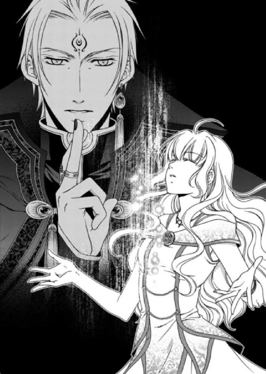
『我が前に姿を現せ』
「我が前に姿を現せ......きゃっ！」
詠唱を終えるのと同時に、鳩尾から何かが飛び出したような衝撃を受けて、ルセリアは後ろにひっくり返りそうになった。が、中に入っていたジンがルセリアを動かし、カウチの背を摑んで支えた。
「何、何これ。ちょっと......きゃあっ！」
部屋の中を青い物体がグルグルと飛び回っているのが見える。が、速すぎてその姿がよくわからない。
「ジンっ！ ジンっ！ どうしたらいいのっ！」
ジンはルセリアの身体から抜け出して、部屋の真ん中で両手を振り上げながら恍惚としている。
「これはこれは、ヘブンだ。ヘッブーンだっ！」
「はあ!? ちょっと、感動してる場合!?」
床の敷物がはぎ取られ、天蓋から吊られているレースのカーテンがちぎれ飛び、花瓶は倒れて花が水の渦に巻き込まれている。重さのないものが部屋の中で踊り狂い、青い物体が高速で暴れ回っていた。
「ど......どうしよう」
部屋の騒ぎのために外からエミールや兵士が入ってきたが、小型の竜巻が部屋の中で暴れている様子に呆気にとられて声も上げない。
「ルセ様っ！ これは一体......ルセ様ぁっ！」
渦の向こうからエミールの声が聞こえる。
「エミールっ！ あの、じっ、実はね。ちょっといろいろあって......」
「ジンの仕業ですね？ な、何をしたのです？」
「その、そうとも言えるし、違うんだけど。ジンっ！ 本当になんとかしてっ！」
ルセリアとジンを中心にして弧を描きながら飛び回る物体を、早く止めなければ部屋が破壊されてしまう。これをどうアルバトルに説明できるというのだ。
問題は一番頼れるはずのジンがいまだに状況を把握せず興奮していることだ。
「素晴らしい。ま～さ～に、奇跡！ 奇跡ですぞ、姫さん！」
「ジンっ......きゃっ！」
部屋の中をグルグルと飛び回っていた物体が、爆発音を鳴らしながらバルコニーから外へと飛び出していった。同時に、宙に浮いていたあらゆるものが床に落ちて甲高い音を立てる。
まるで鳥の巣のようにもつれた髪を撫でつけながら、ルセリアはゆっくりと部屋を見回した。
部屋の中は無茶苦茶に壊れていて、しかもどういうわけか水浸しになっている。
「どうなってるの!?」
「ルセ様っ！ 動かないでください。危険です！」
エミールの絶叫に近い声と、ブロックが引き裂かれる甲高い音が響く。
「きゃっ！」
部屋よりもバルコニーのほうが壊滅的な状態だった。物体が移動した軌跡とでもいうのか、柱が半円状にえぐれ、バルコニーも同じようになっている。
こんな惨状はアルバトルに見せられない。絶対に世にも恐ろしい顔で怒り狂うに違いない。今すぐなんとかしなくてはならない。
「ジン、何が起きたの!?」
「せっせっ、説明いたしますゆえ、兵士は外へ」
「そ、そうねっ！」
ルセリアは壊れた花瓶などの破片をよけながら部屋の扉へと向かうと、いまだ魂が抜けたように呆然と立ちつくしている兵士に声を掛けた。
「あの～ちょっと、部屋を片付けようとして失敗してしまったのよねっ！ 私、実は部屋を壊すのが得意なの。よかったら片付けるのに人を呼んできてもらいたいんだけど。ううん。今すぐじゃなくていいの。見られたら困るものもあるから......。その～エミールとジンに手伝ってもらって先に片付けるから、貴方たちは声をかけるまで外で待っていてもらっていいかしら？」
自分でも意味不明な言い訳をしていることは承知のうえだが、何をどうすればいいのか説明がつかない。
心臓がバクバクとものすごい勢いで鼓動しているが、それでもルセリアはなんとか平静を装い、兵士たちに部屋から出て行くよう促した。
彼らは互いに顔を見合わせると半開きの口のまま、外へと出て行った。納得したというより、関わり合いを避けたいという感じにも見える。
「るるる...ルセ様～......」
「エミールごめんなさい......実はね......」
途方に暮れたような顔をしていたエミールに、ルセリアはかいつまんで説明した。
こうなってしまったからには、正直に打ち明けたほうがいい。
「それでしたら私が身体をお貸ししましたのに、何もルセ様がそのようなことをなさらなくても」
「ありがとうエミール。今度からそうした方がいいってものすごーく思った。それで......ジン。私の中から何が出てきたの!?」
「水の使徒・ナナルですな」
「み、水の使徒・ナナルって......なんのこと？」
首を傾げるルセリアに、ジンは得たりとばかり真剣な顔で話し始めた。
「失われた黄金の都、ネディアを守るファントムクリスタルの六の使徒の一つ。『飛沫の欠片』を姫さんはその身にお持ちなのですよ」
「ファントムクリスタル!? そういえば聞いたことはあるけど......おとぎ話じゃないの？」
かつて栄華を誇った黄金の都、ネディア。強大な軍事力と富を持ち、不思議な力で国を守っていた......という失われた都の話は、子供の頃、寝る前に必ず聞かされたおとぎ話の一つだ。
「世間ではそう言われていますが、違いますぞ。でなければ今のような飛沫の欠片は存在いたしませんし、各国の間でいざこざが絶えないのも、それが実存するからなのですな」
ルセリアは『飛沫の欠片』がどういうものなのかまったくピンとこない。
それよりもあまりにも唐突な出来事に頭が真っ白になっている。
「大丈夫ですかな、姫さん」
「な、なんだか突然のことだったから思考が停止して。その......あの、それで、ナナルはどこへ行ったの？」
「あちらに。あわ～！ 大変だ」
「えっ!?」
ジンが困った顔で外を眺めていたので、ルセリアもつられるようにバルコニーへと視線を移した。雲一つなかった青空が今は黒い雲に覆われ、激しい雨が降っていた。
「ルセ様、雨ですわ、雨！ 見たことのないほどの雨が降っていますっ！ ビアランでこんなに降っているのを見たのは私、生まれて初めてですっ！」
エミールは興奮した口調で叫んでいたが、ルセリアは雨の向こう側に見えた砂漠を走る不気味な物体に目が釘付けになっていた。
「あの～ジン。遠くの砂漠をうねるように走ってるのは......ワームよね？」
「いえ、あれが水の使徒です。ずいぶんと元気ですなあ。はは......いやはや。あちこち破壊されると困ったことになるでしょうな」
巨大な芋虫のような灰色の円筒状のワームが、砂漠を走る青い物体に次々と弾かれ、砂の上に転がっていくのが見える。
砂の上に放り出されたワームはもごもごと動きつつも、慌てて砂の中へと戻っていく。ということは恐ろしいワームより、ルセリアの中から出てきた物体のほうが強いのだ。
「わっ......笑い事じゃないわっ！ あんなの放っておいたら、国中がこの部屋みたいになってしまうわっ！ どうやって止めたらいいの？」
「いやいやいや。我が輩ではなんとも......姫さんが呼び戻すしか」
「わ、私!? ど......どうやって!?」
「出し方は我が輩も知っていたんですがなあ......呼び戻し方までは記憶がないんですなあ、これが。なんと申しましょうか、ほら。我が輩の記憶はあちこち抜け落ちておりますからな」
ジンは泣き笑いのような顔でそう言い、手の平を天井へ向ける。お手上げだと言いたいのだろうが、このまま放っておけることではない。
「そんな無責任よっ！」
ルセリアは何度も外と部屋を交互に見てため息をつき、どうすればいいのか、必死に考えをまとめようとした。
とにかくなんとかして、あの青い物体を止めなくてはならないのだ。
「ルセ様、とりあえず、帰ってこいと呼んでみられたらいかがでしょう？」
「そうね、エミール。とりあえずそうしてみるわ」
名前は『ナナル』だが、ペットでもないのに、名前を呼んで戻ってくる保証はない。いや、戻ってこられるのも困る。あの青い物体とどう接すればいいのだ。
恐怖と驚きがない交ぜになっている。
いや、恐怖よりも壊れた部屋をどう直せばいいのか、そんなことばかりがルセリアの頭の中をぐるぐると回っていた。
「ジン、私がその......あれの主人になるの？」
「そうです」
ここから遠くの砂漠へ声は届かないだろうが、ルセリアは精いっぱい深呼吸をする。とにかくやってみるしかない。
「ナナルッ！ 雨を降らすのも、破壊行為もやめて、主人のもとに戻って来なさいっ！」
すると一陣の風とともに青い物体が外から飛び込んできて、目の前に姿を現した。エミールが果敢に物体の前に立ちはだかる。
「ぶ、無事ですか!? る、る、ルセ様！ あ、あの......め、面妖なものが目の前に......」
「エミール。ほ、ほ、本当ね。まるで巨大なゼリーみ、みたいね」
「おうおう、面白い。これが水の使徒か」
水の使徒・ナナルは樽にゼリーを入れて作ったような、ぷよぷよした形をしている。
透明な青い物体には丸い目と口があり、左右にツルリとした手のようなヒレがついていた。
ぷよぷよした身体を左右に振りながら、青いゼリーがあろうことか口を開く。
「ズンズン、ズンズン、わっわっ私の～名前は～......ん～ナナル。長い～間。眠ってた。久し～ぶりに～目覚めたの。なんだか～世間が変わってるうっ、は～い！」
音楽に身を任せているように、ナナルは歌うように言葉を発し、ルセリアはエミールと思わず顔を見合わせていた。
「......ねえ、エミール。あのぷにぷにした透明な身体、ものすごく触ってみたいと思わない？ 私、ああいうのを見ると......とても......触りたくなるのっ！」
「いけませんよ、ルセ様！ 手が抜けなくなったらどうするんですかっ！ 透明で......グニャグニャしているんですよっ！」
ナナルに近づこうとしたルセリアをエミールが引き留めた。エミールの手から震えが伝わってくる。
想像したよりもナナルがユニークだったのでルセリアは少し警戒心が解けていたのだ。どんな生き物なのか、興味のほうが先に立っている。
「むかし～昔は、人型だった～ナナルっ。今は～面倒。これが、一番！ 楽々、楽々～らっく～！」
「貴方、ナナルっていうのよね？」
「そうそう、ナナル。そうそう、ナナル。ご主人様の中でしっかり～生きてます。は～い！」
「ナナル、陽気なのはいいけど、この部屋なんとかできないの？ 竜巻が通ったみたいになってるんだけど」
「久し～ぶりの、復活ナナルっ！ 破壊はできるけど、こ・わ・し・た・ものは......直せませんっ、は～い！」
明るく無責任なことを言われたルセリアは、当然、ジンに助けを求めた。
「アルバトルにどう説明したらいいの!? 絶っっ対に怒り狂うに決まっているわっ！」
「壊したものをもとに戻す便利な魔法がないわけではないだろうが......我が輩は忘れておる。だいたい我が輩はこれでも動揺しておるんだ。どどど、動揺だな」
「魔導師なんだからそんなこと言ってる場合じゃないでしょっ！ じゃあ、出てきたナナルはどうすればいいの？」
「それは姫さんのものだ。どうぞ、どうぞ。お引き取りください」
目覚めさせたのは確かにジンだが、どういう事情か知らないがあれはルセリアの中にいた存在だ。
だからといって扱い方など知らないし、どう話せばいいのかわからない。
「お引き取りって言われても......」
「なりません、ルセ様っ！」
ついつい触ってみたくてナナルに手を伸ばそうとしたが、またエミールによって止められた。そこでようやく我に返る。
「ジン、もう一度眠らせることはできないの？」
「一度目覚めさせると、再び眠りにつかせることはできんのだよ。だいたいファントムクリスタルは謎が多いんだな。要するに、扱い方のマニュアルはないということだ、姫さん」
「そんなぁ......」
ではこのままここでぷるぷると腰を振らせておくしかないというのだろうか。もっと小さかったら隠せたかもしれないが、ナナルは大きすぎるし、ペラペラとうるさい。
「身体に戻って休めと言えば、たぶん......消えるのではないかな」
「あれを自分の中に戻したくないんだけど、できれば......」
「本来ファントムクリスタルは自ら主人を選んで放浪するらしい。つまり今は姫さんが気に入っておるということだ」
「ズンズン。ズンズン。そうそう、ナナル。ご主人様大好きっ！ ご主人様大好きっ！ い・ご・こ・ちいいから。ここにいる、は～い！」
ナナルは腰をグルグルと振って手を挙げる。その姿は可愛いのか気味が悪いのかどちらともいえず、微妙なところだ。
「ほらほらほら、な、言ったとおりだ」
「とにかく！ このナナルをどこかへ隠して......できるだけ部屋をもとどおりにしないと......ナナル、小さくなれないの？」
「なれるよ～ん」
ナナルは空中で水を弾けさせると、水色の小さな姿に変化した。仔猫ほどの大きさではあったが、涙形をして今度はかなり可愛げがある。
だが、問題は荒れはてたこの部屋だ。水浸しの上、床は裸足で歩くと怪我をするほど、ガラスや陶器や煉瓦など、いろんなものが砕けて飛び散っている。すぐさま原状回復などとうてい無理なのは一目瞭然だが、なんとかしてアルバトルが戻るまでには見られる状態に戻さなくてはならない。片付けている間に言い訳が思い浮かぶかもしれない。
「ルセ様......どういたしましょう？」
「そうね、エミール。とにかくできるだけ片付けるの。その間に何か上手い言い訳を一緒に考えてみてほしいの」
「え、ええ。わ、わかりました」
「我が輩は......」
肝心な時に役に立たないジンを睨みつけ、ルセリアは叫んだ。
「ナナルを戻せる呪文でもなんでもいいから、思い出す努力をして！ お願いよ、ジン。私の身体が必要ならもちろん使っていいの。どうしてもアルバトルが戻ってくるまでに、ここをなんとかしたいのよ！」
肉体がないうえに記憶の定かでない魔導師と、小柄なエミールにできることなどたかがしれているのだが、途方に暮れている場合ではない。
「ジン！！」
今ここで一番聞きたくない声を耳にして、ルセリアは手に持っていた瓦礫を床に落とすと恐る恐る振り返る。
「あ――アルバトルっ！」
アルバトルは部屋をぐるりと見回し、みるみる怒りの形相へと変化させていく。打って変わって背後に立つグレディは死を宣告されたように顔色をなくしていた。
「ルセリアは無事なのかっ！ この部屋は何事だっ！」
「わた......私は......ぶっ......無事よ」
怒りのオーラはすさまじく、まともに浴びたルセリアは思わず床にへたり込んでいた。
まさしく悪魔のような顔でアルバトルはルセリアのもとへ駆け寄ってくる。だが、その様子に危険を察知したのか、ナナルが間に割って入ってきた。
「ズンズン、ズンズン。ご主人様危険。ナナル、戦闘態勢です。は～い！」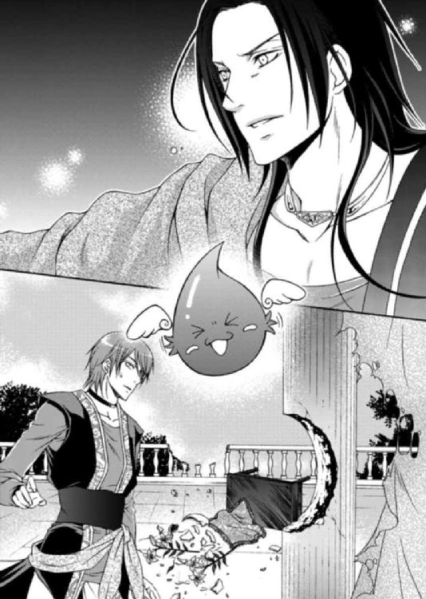
「この化け物はなんだっ！ ルセリアから離れろっ！」
剣を振り上げたアルバトルに、ナナルは見る間に巨大化し、自らをコイル状に回転させてアルバトルに襲いかかろうとする。
無邪気ではあるが、ナナルから殺気に似たものを感じたルセリアは、アルバトルの胸へ飛び込んだ。
「ルセリアっ!?」
「待って、ナナル、だめっ、やめてっ！」
伸びたナナルの身体が頭上から落ち、それが大量の水となって二人の身体を濡らした。
ルセリアはずぶ濡れになりながら咳き込みつつ、アルバトルの顔を見上げる。
「アルバトル。大丈夫？ ねえ、大丈夫？」
「......俺よりそなたは大丈夫か？」
「私、私は平気よ......。アルバトルが無事でよかった」
互いに濡れているだけで怪我はしていないことを確認し、ルセリアは心底安堵した。
柱やバルコニーをえぐるほどの力があるナナルだ。本気で人を攻撃していたら大変なことになっていただろう。
「ナナルっ！ 私は人を傷つけてくれなんて命令してないわ！ また誰かを危険な目に遭わせようとしたら......私は許さないから！」
感情が高ぶっているのか、ルセリアの目に涙が浮かぶ。
「ご主人様。ごめんなさい。ナナル......反省。ナナル、反省。しばらく待機します。は～い！」
ナナルは意気消沈したのか空中で水が弾けたかと思うと、姿を消した。また鳩尾が熱くなったがそれは一瞬で、すぐさま冷えたものへと変わった。
再びルセリアの中へと戻っていったのだろうが、あまりいい気はしない。
「......あれ？」
ナナルの攻撃を防ぐために、ルセリアはアルバトルに強くしがみついていることに気づいた。
「え、あの、これは......違うの！」
とっさの行動に、今さらながらルセリアは頰を朱に染め、そろそろとアルバトルから身体を離そうとした。
だが、いつしかルセリアの腰に回されていた彼の手が、それを許さない。
「何があった？ 誰でもいいから俺に説明をしろっ！」
ナナルのことやこの部屋の状況を説明しようとしたが、アルバトルはルセリアを傍らに抱えたまま、剣を引き抜きその切っ先をグレディに向けた。
「グレディっ！ お前は何をジンと企んだのだっ！」
「申し訳ございません。この度のことはすべて私の責任。いかなる罰も受けるつもりです」
グレディはアルバトルの足下に跪き、額を床に擦りつけるようにして謝罪した。
だが、アルバトルの怒りは収まる気配はなく、振り上げた剣をグレディへと下ろしてしまいそうだ。
「やめて、アルバトルっ！」
「ルセリア。そなたは俺のものだ。誰であろうと、どのような理由があろうと、そなたを利用し傷つける者は許さんっ！」
「いいえ、いいえっ！ これは本当に私のせいなの。処分をするなら私にしてっ！」
ルセリアはアルバトルの右腕にしがみつき、剣の動きを阻止する。
グレディはいつだってアルバトルの忠実な家臣だ。アルバトルがどうすれば立派な王になれるのか、そのためには何をすればいいのかを常に考えている。そんなグレディを主人である彼が傷つけていいわけなどない。上に立つ者の行為としてあるまじきものだ。
「お願い、アルバトル。やめて、やめて――！」
「原因を作ったのはグレディだろうっ！」
「いいえっ！」
「誰を処分するのか、決めるのはこの俺だ！」
「言ったはずよ、アルバトル。悪いのは私。処分をするなら私にして！」
ルセリアは一歩も退かず、アルバトルの鋭い眼光を真っ向から受け止めた。
アルバトルは歯ぎしりしながら、それでもまだ振り上げた剣を下ろそうとしない。
全身から放たれる彼の怒りは、皮膚を貫いて身体の芯まで震えさせる。それでもルセリアはアルバトルを押しとどめた。
「......くっ！」
「お願い、アルバトル。私以外、他に誰も悪くないの。この部屋も、外のことも......私が......私が悪いのよ。本当に......本当にごめんなさい。許して......お願い......」
怒りに燃えるアルバトルの瞳をじっと見つめ、ルセリアは懇願した。
「そなたが初めて俺に許しを請うたのだから聞いてやろう。グレディ、ルセリアに感謝するんだな」
ようやく剣を鞘に収めたアルバトルは、忌々しげに髪を撫で上げて、息を吐き出した。
まだ納得はしていないようだが、グレディに対する処分を諦めてくれたアルバトルにルセリアは胸を撫で下ろす。
だが、安堵したためか、急に身体から力が抜けてアルバトルを摑む手が緩んだ。
「ルセリアっ!?」
......あっ。
ルセリアの視界は一気に反転し、頭の中が真っ白になったかと思うと、何かを考える暇もなく意識を失った。
ルセリアを抱き上げたアルバトルは、水浸しの部屋から隣の部屋へと移動した。
聞きたいことは山のようにあるが、今はルセリアのことが最優先だ。
「エミール。侍医を呼べっ！ グレディ、急ぎ人を集め、まずは部屋を片付けろ」
二人はそれぞれ返事をして部屋から飛び出していった。
アルバトルはルセリアをすぐさま寝台に寝かせて、額に手を当てた。手の平から伝わる熱は高く、アルバトルはジンを睨みつけていた。
「自分たちが何をしたのか、わかっているのかっ！」
「まあまあまあ、一時的に身体に負担がかかり、熱が出ただけだと思われますねえ。そう、心配召されるな。しばらく眠れば大丈夫でしょう」
「信用ならん」
「王子、侍医を連れて参りました」
エミールが侍医を連れて戻ってくると、すぐさま寝台がカーテンで囲まれた。侍医の一人がアルバトルに向いて、席を立つよう促してくる。
だが、寝台に横たわるルセリアは、薄く開いた口から荒い息を吐き出し、発熱した身体はうっすらとピンク色に染まっていて、今にも息が途切れそうに見える。
「王子」
「ああ」
エミールが彼女の身体をくつろがせるため、身につけているアクセサリーを外していたが、左手首のブレスレットだけは外せずにいるのに気づき、アルバトルが外してやった。
「申し訳ありません、アルバトル王子」
「いや、いい。知らぬ者には外せないものだ。これは俺が預かっておく」
「はい」
「王子、診察を終えましたらすぐさまお呼びいたしますので、しばらくお外しください」
ルセリアの側から離れないアルバトルに業を煮やしたのか、侍医はそう告げた。
「......頼んだ」
離れがたいものの彼女が目覚めたときにまた、裸を見ただろうと騒がれるのも不本意だ。アルバトルは寝台から離れて事情を知るだろうジンに近づいた。
「ジン、お前はただ雨を降らせるためにルセリアの身体を借りたのだな。にもかかわらず、先ほどの奇妙な生き物といい、ルセリアの部屋の惨状といい......どういう魔法を使ったのだ」
「いやいやいや......王子、まずは人払いを」
アルバトルはルセリアの眠る寝台から離れ、ドーム状の通路で繫がる部屋に移動して、まずは濡れた服を着替えると、召使いや兵士を下がらせた。
「グレディは俺の側にいろ」
「かしこまりました」
「ジン、話を聞こうか」
まだ乾ききらない髪をタオルで拭いながらアルバトルがソファに腰を掛けると、ジンは一つ息を吐いてから、話を始めた。
「姫さんの中には、ファントムクリスタルの一つ、飛沫の欠片が眠っておりました。姫さんのは本物です。我が輩も最初は確信が持てず、不用意に目覚めさせてしまったのですが......いやいやいや～。すさまじいパワーでしたなあ」
「飛沫の欠片......では水の使徒か。あれが空や砂漠で暴れ回っていたのか」
「そのようですな。ファントムクリスタルは六つ揃えば、パーフェクトファントムという七番目の形となり、失われた黄金の都市、ネディアの英知を得ることができるといわれておりますが......まぁ......この辺りは本当かどうか怪しいのもですがねえ」
ファントムクリスタルというのは六つの欠片の総称。それぞれは飛沫の欠片、紅蓮の欠片などと呼ばれ、欠片の中にはナナルのような使徒が棲まう。
「シシア神国は昔からファントムクリスタルを捜している。そのためにかなりの賞金も用意しているようだ。では......サイファスがルセリアを得ようとした本当の理由はそこなのか？」
「......考えられることでしょうな」
「だが腑に落ちん。もしそうならなぜ、ルセリアがファントムクリスタルを持っていることをシシアは知ったのだ？」
「あそこにも優秀な魔導師がおりますゆえ。古の古文書から、ファントムクリスタル探索の方法を知り得たのかも知れませんぞ」
このままルセリアの中に飛沫の欠片である水の使徒を棲まわせておくことは危険だ。もし、このことがシシア神国や他の国に知れたら――。
「ルセリアの身体から水の使徒を取り出せないのか？」
「ファントムクリスタルはもともとネディアの王家にのみ継承されるもの。それが失われた今は、使徒自身が主を選びます。無理に追い出すことはできないのですよ。まあ......そうですなあ......今の主より気に入った相手が現れたら、姫さんから出て行くでしょう。気まぐれなやつですからな。ははは」
「笑い事ではないぞ、ジン。俺は勝手に出て行くまで待てん。方法を探せ。命令だ」
「いやいやいや......まあ、難しいことですが我が輩も大魔導師の一人。努力いたしましょう」
ジンはいつも自分は大魔導師だと豪語しているくせに、肝心なときに記憶が抜け落ちているだの、知らないだのと使い物にならない。本当に大魔導師なのか怪しいものだ。
「グレディ」
「はい」
「この度のことは今この場で斬り捨ててやりたいほど、俺は腹を立てている。だが......ルセリアの気持ちを考えて、今回は不問としよう。だが......二度目はないぞ」
「肝に免じます」
傍らに佇むグレディは、静かに頭を下げた。
他の誰でもないアルバトルが一番、グレディの忠誠心を信じている。
むろん、アルバトルが命を絶てと命じても、主のためだと納得できなければ自ら動くことはないだろう。が、主の危機の身代わりになることをためらう男ではない。
アルバトルのことを誰よりも理解してるグレディだからこそ、ルセリアに協力を頼んだことに腹を立てたのだ。もっとも理由は問わなくてもわかっている。
「だが......そういった心配をさせてしまう原因はこの俺にあった。許せ」
「王子を陰ながら補佐するのが私の役目。謝罪など不要です」
己の未熟さゆえなのだとアルバトルは自分を恥じていた。王となるためにはもっと強くならねばならないのだ。
「ところで王子、慈雨の儀はどうなったのですかな」
「ちょうど雨を請う儀式を終えたところ、雷鳴が轟き、頭上に雲もないのに大雨が降ったのだ。だがすぐさま何事もなかったように晴天に変わった。民はみな恐ろしいほど驚喜していた。儀式としては大成功だろうな」
「怪我の功名......ですな～よかった、よかった」
「何が怪我の功名だっ！ ジン、お前はこの俺の怒りがまだ理解できないようだな」
確かに、建物が煙るほどの雨が降り、アルバトルは民衆に神のように崇め立てられ雨が降り止んでも人々の歓声はやまなかった。
雨が降った瞬間、グレディがジンを使ったことに気づき、アルバトルは怒りに満ちた。
「王子～王子、そう怒らずに。ここで知ることができてよかったと思いませんかねえ。あのシシアの思惑がこれでわかったのですから」
ジンの言うことももっともだと、アルバトルはため息混じりに聞いた。
「ルセリアが脱水症状からすぐに回復したのも、ワームが襲わなかったのも......水の使徒がいたからか」
「ええ、ええ、そうでしょうなぁ。主の身体の水分調整もできるでしょうし、ワームも姫さんの身体に眠る使徒の存在を感じ取り、逃げ出したのだと思いますぞ。いやはや姫さんは名実ともに砂漠の薔薇ですな」
もし水の使徒が目覚めたことがシシア神国や他の国に知れたら――。諸外国はみなあらゆる手を使いルセリアを手に入れようとするだろう。
事の重大さをルセリアに話して聞かせるべきなのか、知らずに過ごすのがいいのか。
「水鏡で姫さんのお父上が話しておった『運命の環』というのはこのことでしょう。もっともファントムクリスタルの存在を知っていたとは思えませんが」
そこへルセリアの診察を終えた侍医から声がかかる。アルバトルはすぐさまルセリアのもとへ駆け寄った。
心地よさそうに眠る彼女からは、倒れたときに見られた苦痛は感じられない。
「ルセリアの容体はどうだ？ 深刻なのか？」
「いいえ、心配されることはございませんよ。ルセリア様は大変な緊張と疲労を抱えていらっしゃるご様子。お薬もすでにお飲みいただきましたゆえ、あとはゆっくりとお休みさせて差し上げるのがよろしいかと」
侍医たちが部屋から出て行くと、アルバトルはそっとルセリアの頰を撫でた。
何か食べている夢でも見ているのか、口をモグモグと動かして笑った。そんな彼女を見ていると、一気に緊張が解ける。
アルバトルは寝台に上がると、ルセリアの隣に身体を横たえ、彼女の髪を指に絡ませた。
こうやって彼女のどこかに触れていると、アルバトルは安心できるのだ。
「ルセ様に新しいタオルを用意するのに少し席を外してよろしいでしょうか？」
「ああ」
エミールが部屋から出て行くと、入れ替わるようにグレディがやってきてルセリアの様子を心配そうに窺う。
「姫は......」
「熱はまだあるが呼吸は落ち着いている。心配せずとも、元気になるだろう。いや、なってもらわねばならん」
「ご自身がいかに貴重なものを身体に宿しているのか、ルセリア様はお気づきではないのでしょうね」
「ああ」
「ぼっちゃま、野鳥をいきなり籠の中に入れて飼うと、ストレスをためて、死んでしまいますよ。時には外へ連れ出すのがよろしいでしょう。それができないとしても、もう少し自由を与えてやらねばいけません」
「考えておく」
こんな心労をためさせるぐらいなら、アルバトルが付き添って街を案内してやればよかったのだ。砂漠へは危険なため出せないが、宮殿の中でも中庭くらいは出られるよう、なぜ考えられなかったのだ。
ルセリアに笑顔が増えるのなら、多少の我慢は必要なのだ。
本当は彼女を宮殿の奥深くに隠し、逃げ出せないよう金の鎖で繫ぎ、誰にも見せず自分だけに微笑ますよう、しつけたかった。
けれどルセリアも一人の人間。そう簡単に思いどおりにならないことくらい、理解している。
アルバトルも言うことを聞く人形のような相手を欲しているわけではないのだ。
「なぜご自身が初恋の相手だと、もっと強くおっしゃらないのです？」
「そんなことはもうどうでもいいことだ」
アルバトルはルセリアの手首から外したブレスレットを取り出すと、そっと左手首に戻し、微笑した。
幼い頃、亡き母が大切にしていたブレスレットをルセリアに贈った。
再会したルセリアの左手首にそれを見つけた時どれほど感激したか、ルセリアに伝えることができたら......そんなことも考えたが、やめた。
「大昔に出会った、吹けば飛ぶような曖昧な記憶の中にある、初恋の相手だ。そんなものに好きだとか愛しているだとか言われても虚しいだけだからな。血や肉を備えた今の俺を愛させる」
「ならば、余計に初恋の相手をはっきりされたほうがいいのでは？ シシアのこともありますし」
「無理だろうな」
そう呟き、アルバトルは思わず笑いを漏らした。
初恋の相手はサイファスだと信じているルセリアだ。
ルセリアにとって初恋の相手がサイファスであることで心穏やかに過ごせるのなら、それでいい。大切な初恋の思い出が懐かしいと思えるほどにアルバトルが激しく愛してやればいいのだ。
「ところでグレディ、例の工事はどの程度まで進んでいる？」
「まだ半ばですが、ある程度は整っております」
「ならば、予定を繰り上げるぞ」
「かしこまりました。すぐに準備に取りかかります」
グレディは軽く会釈すると、部屋から姿を消した。ようやく二人きりになれたからかアルバトルは、ルセリアを愛おしげに見下ろした。
「そなたがずっとついていてくれたように、俺もそなたの側にいる。安心して眠れ」
母を亡くし、怒りと悲しみ、復讐心に囚われながら、自分の行き場を探していたあの頃、ルセリアと出会った。
鳥の巣のような髪を持つ少女はいつも裸足で湖の畔を走り、足をドロドロにしながら、そこに咲く真っ白な薔薇をスカートに包んでいた。スカートの裾を思い切りまくり上げカボチャパンツが丸見えになっていることも度々あった。
アルバトルは最初、そんな少女の姿にとても驚いた。
どれほどあしらってもルセリアは側にやってきて、悲しみに囚われていたアルバトルを慰めようとしてくれたのだ。
あのとき、自分は泣いていたのだろうか？
男として情けない弱音を吐いただろうか？
おぼろげな記憶の中で、ルセリアのとびきりの笑顔だけはよく覚えていた。
たとえどんな女性になっていようと、アルバトルはルセリアを花嫁として迎えるつもりでいた――。が、マルフォーネから定期的に届く報せにより、シシア神国のサイファスと婚約したことを知った。
王にふさわしい男になったら求婚するのだと決めていたのに、花嫁として迎えに行くといった約束を忘れてしまったのだろうかと、サイファスから略奪する計画を進めた。
あのとき、自分を慰めてくれた心優しい少女はどう成長したのだろう。――そんな期待と不安を交錯させながらルセリアを奪い、自分の国へと連れ帰ったのだ。
だが、アルバトルの心配は杞憂に終わった。
今も昔も変わらない笑顔はそのままに、どんなことにも物怖じしない芯の強さと、自分にはない優しい心がアルバトルを魅了する。
アルバトルが大切に思い続けたあの頃のまま、大人になったルセリア。
もっともカボチャパンツは卒業したようだが。
「そなたにはいつも驚かされる......」
ルセリアを手に入れ、今はアルバトルの側にいる。これから彼女にどんな運命が待っているとしてもこの自分が守るのだ。
月明かりに浮かぶルセリアの安らかな眠りを見つめながら、アルバトルはそっと愛する者に口づけた。
いつもは砂漠を渡る熱い風が部屋へ入り、頰を撫でる感触で目覚める。だが、今日は違った。
肌に触れる空気は澄んでいて、熱くも寒くもなく、心地がいい。
夢心地のまま目を覚ましたルセリアは、ゆっくりと身体を起こして周囲を窺った。今まで寝起きしていた部屋とはまるで違う場所だ。
「ここは......どこ？」
部屋は前よりも広く、壁際に沿ってたくさんの花が飾られていた。
左右にある柱と柱の間はレースのカーテンで仕切られていて、向こう側が透けて見える。
ルセリアはそろそろと寝台から下りると、敷物の上を裸足で歩き、吹き抜けに向かった。そこは階段状になっていて、下には小さな池がある。水辺の花がいくつも浮かび、極彩色の魚が泳いでいた。
振り返ると、部屋の左右に溝がありそこには清らかな水が流れ、この池に注いでいる。部屋が涼しいのはこのためだ。
吹き抜けから肌を焼くギラギラした太陽が覗いている。
ルセリアが日陰に入るよう寝台のある部屋へと戻ると、エミールがトレーにお茶の用意をして入ってくるのが見えた。
「ルセ様、起き上がられても大丈夫ですか？」
「まだ頭が痛いけど、大丈夫よ。それよりここはどこ？ とても綺麗な場所だけど」
ぐるりと周囲を見渡していたが、天井を見ながら歩き回ったせいで足下が絡まり倒れそうになった。そんなルセリアを、いつの間にかやってきたアルバトルが抱き留めていた。
「アルバトルっ！」
「ルセリア、目覚めたか」
「グレディは......グレディは？ 何もしていないわよね？」
ルセリアはアルバトルの顔を見た瞬間、グレディのことを思い出し、摑みかからんばかりに尋ねた。いきなりそんな話題を振られたことが気に入らないのか、アルバトルはムッとした顔で答える。
「案ずるな、柱の陰に控えている」
「傷つけていないわよね？」
「そなたが望んだからな。罰は与えていない」
「よかった！ ホッとした」
グレディが無事なことを知ってルセリアは胸がいっぱいになった。
少しくらい自分の行動は王子として適切ではなかったと学んでくれただろうか。
そんな心配をよそにアルバトルはルセリアを引き寄せて、頰に触れてくる。
無理やりアルバトルを押しやり、話題を変えるように言った。
「ええっと......ここは、どこなの？」
「そなたと華燭の儀を終えた後、住まう予定の場所だったが予定を繰り上げた。部屋があれでは生活もままならんだろう。まだすべての工事は終えていないがな」
「とても涼しいわ」
「地下からの水をくみ上げて街へ流す前にここを通している。快適に暮らせるはずだ」
ルセリアの知る限り、これほどまでに心地のいい場所はなかった。きっと、マルフォーネの気候に近づけるため、かなりの手間を掛けて工事がされたのだろうことがわかる。
「もしかしてこれって......」
「誰のためにこのようなことができるというんだ。そなたのためだ」
アルバトルはルセリアに熱い眼差しを向けてくる。
「ここは奥の宮殿になる。安全上の問題を考慮してバルコニーはないが、中庭へは出られるようになっているからな。また案内してやろう」
珍しくアルバトルは手を繫いできた。ルセリアは促されるままアルバトルの隣に腰を下ろした。池の水面がきらきらと光っている。
「池に浮かぶ白い薔薇はマルフォーネから運んでくれたとエミールから聞いたわ」
「ああ。マルフォーネから取り寄せ、地下にまだたくさん保管してある。気に入らないのか？」
「ううん。とても気に入ってるの」
肩を引き寄せられたルセリアはアルバトルの肩に身体を寄せて、水面をじっと見つめた。
静かな空間に水の流れる音だけが響いて、とても穏やかだ。
「身体の調子はどうだ？」
「少しだるいかも」
「ゆっくり休めば治る」
こうしているときはアルバトルはとても優しい。ずっとこんなふうならいいのにと考えつつ、ルセリアは重大なことを思い出した。
「......あっ！」
「どうした？」
「大事な儀式はどうだったの？ 私の中にいる水の使徒というのが暴れたから......私......」
「そなたのおかげで予想以上の成果があった」
「ええっ！ 本当？」
想像もしなかった言葉にルセリアは驚きで目を丸くした。
絶対にナナルは大変なことをしでかしたと心底心配していたからだ。
「この国では雨は滅多に降らぬからな。それが儀式の最中に降ってきたのだから、盛り上がることは予想されるだろう？」
「そ、そう。よかった。アルバトルにとって大事な儀式だって聞いていたからそれを聞いてホッとした」
「もし結果が惨憺たるものでも誰かの責任にするつもりはない。どのような不測の事態が起きようと、上手く切り抜けられぬ者に王の資格はないからな」
アルバトルらしい言葉に、ルセリアは思わず微笑していた。
傲慢さはいつだって鼻持ちならないのだが、頼もしくていいのかもしれない。
「でも、周りの人は不思議に思わなかったの？ 砂漠に突然大雨が降ったのよ」
「俺には魔導師のジンが仕えていることを身内はみな知っている。不思議に思うことはない」
「じゃあ......私のことは知られなかったってことよね」
「安心しろ。俺にとっては不本意だが、ジンの評価が上がっただけだ」
「よかった」
自分の中に得体の知れないものが棲まわっている不安は、一向に拭えない。無邪気な姿をしているが、水の使徒・ナナルは大変な力を秘めているのだ。
ずっと自分の中にこれを存在させておかなければならないのだろうか。
「不安そうな顔をしているな」
「私の中にいる存在がまた迷惑をかけるかもしれないでしょ」
「そなたの中にある水の使徒・ナナルのことだが、ジンに追い出す方法を探すよう命じてある。時間はかかるようだが、必ず見つけ出してやる。今しばらくは不快な思いをするだろうが、我慢してくれるか？」
ルセリアの不安を、アルバトルの言葉がゆっくりと拭い去る。
怒りに囚われた砂漠の悪魔は震え上がるほど怖いのに、約束したことは守ってくれると信じられる男でもあるのだ。
それは不思議な感じだった。
「今日のアルバトルはいつもと違って優しいから、気味が悪いわ」
「なんだと」
本当にアルバトルはすぐ不機嫌になる。もう少し、大人になって欲しいと思いつつ、これがアルバトルという男なのだと、ルセリアは諦めに似た気持ちで苦笑するしかなかった。
「もう、せっかくアルバトルのことを見直していたのに！」
「女はよくわからん」
あれほど嫌だったのに、こうやってアルバトルにもたれていることが心地よく感じられるようになってきた。
「なんだ、逃げずにこうやっていられるということは、少しは俺を好きになったということだな」
「えっ。あ、ご、誤解しないで！」
まだはっきりと言葉にできない生まれたばかりの感情だからこそ、ルセリアはもう少し時間をかけたかった。だが、アルバトルはまるで愛の言葉を告げられたように喜び、ルセリアの身体を抱き上げると、部屋をグルグルと回りだした。
「ルセリア、もっと俺を好きになれ！ もっと、もっとだ。俺だけを愛するんだ！」
「ちょっと下ろして！ アルバトルっ！」
高く抱き上げられたまま回転され、ルセリアが目が回りそうになる直前、ようやく下ろされた。
「め......目が回っちゃった」
目を擦ろうとしたルセリアの顎がアルバトルに摑まれ、顔が近づく。
次第にルセリアの胸の鼓動が速くなり、このまま心の流れに身をまかせてしまいたくなったときに、鳩尾がまた熱くなって――。
「ズンズン、ご主人様ハッピー。ナナルもハッピー。でもこの間抜けはふっき・げ～ん。ナナルはごっき・げ～ん。毎日ハッピー。は～い！」
嬉しそうに腰を左右に振ってナナルが現れた。
「もうナナル！ びっくりするじゃない！」
どういうきっかけで出てくるのかまるで予測がつかない。もしかするとずっと二人の様子を見聞きしていたのだろうか。
「ジンっ！ そのゼリーお化けをどこかへ押し込めておくことはできないのか！」
アルバトルが怒鳴ると、どこからともなくジンがやってきて、ナナルを見下ろし微笑んだ。
「いやいやいや。それは無理ですな。たぶん今は待機状態のようですから勝手に出てきたのでしょう。休止状態にすれば、こちらが呼び出すまで出てこないはずですぞ～」
「休止？ ねえ、ジン。どうすれば休止になるか教えて！」
「我が輩は扱い方までは知らんのです。でもまあ、姫さんの強力な護衛ができたと思えば安心ですよ、王子」
「お前は本当に使い物にならん魔導師だなっ！」
呆れているアルバトル以上にルセリアも呆気にとられていた。
「王子、そろそろお時間ですよ」
柱の陰にずっと佇んでいたグレディが姿を現し、アルバトルを促す。だがアルバトルはグレディの言葉を無視して、言葉を続けた。
「ジン、この化け物が安心だというのか？」
「姫さんにとってこれ以上の護衛はいないでしょう。誰よりも忠実で、ついうたた寝することもなければ、裏切らない。しかもとびきり強いんですよ。性格に難があるのはお互い様ということで」
「ジン」
「おやおやおや。最後は失言でしたな。はは」
ジンの的を射た言葉に、密かにルセリアも笑ってしまったが、アルバトルに睨まれて、涼しい顔で知らぬ振りをした。
「王子」
「ああ」
アルバトルはルセリアに向き合うと、鋭い目を向けた。何か企んでいるようにどこか意地悪な感じだ。
「どうしたの？」
「朝早く早馬が到着し、シシア神国のサイファスから書簡が届いた。今日の夕方、公式ではなく所用ついでにビアランに立ち寄りたいそうだ。滞在するつもりはないらしいがな。そろそろとは思っていたが、そなたの居場所を知り、確かめに来るのだろう」
「......え」
いくらアルバトルがルセリアを宮殿の奥へと隠そうと、いずれ居所が知られるだろうと思っていた。
それが現実になったのにルセリアの心はどういうわけか喜びよりも、気が咎めている。
「そなたは、どうしたい？」
「私にどうして話したの？ 話さずにおくこともできたでしょ？」
「後で知ったら、そなたはリスのように頰を膨らませて怒るだろう。そういった顔も嫌いではないが、笑っているそなたのほうが可愛いからな」
「もし、サイファス王子に会わせてほしいと頼んだら、アルバトルは許可してくれる？」
「無理だ」
意地悪な微笑を口元に浮かべ、アルバトルは立ち上がる。
こんな形で知らされたらルセリアが腹を立てるのはわかっていたはずだ。
「じゃあどうして教えたりなんかしたのよ！」
「さあな」
「は～!?」
「夜には戻る。エミール、ルセリアを頼むぞ」
「はい、王子。お気を付けて行ってらっしゃいませ」
アルバトルが出て行くと、ルセリアはナナルに向き直り、できるだけムッとした顔を見せた。
サイファスが来ることも気がかりだが、ナナルのことも問題なのだ。
こうも突然に出てこられるのは困る。
自分の中から追い出せないのなら、せめて永遠に眠っていて欲しい。
「ねえ、ナナル。私は今とても怒っているのよ」
「そんな、いやいや。ご主人様～。ナナル悲しい！」
「どうしたら休止してくれるの？」
「それ、ご主人様の望み。ナナル、寂しい。ナナル、起きたとこ。もっと見たいし、遊びた～い。は～い！」
「お願い、ナナル。今は休止していてほしいの。必要になったら絶対に呼び出すから」
ルセリアが頼むと、ナナルは渋々という顔で姿を消した。鳩尾が熱くなったが、以前ほど強く感じることなく反動で倒れることもなかった。
「まったくもう！ アルバトルといい、ナナルといい、勝手なやつばかりなんだからっ」
「まあまあ姫さん、そう怒らずに。――それよりも姫さん」
ジンがいつになく真面目な顔を向けてくる。
「な、何よジン」
「姫さん。気づいておったかな」
「なんのこと？」
「逃げるために必要な力を姫さんは得たわけであるから～。まあ......なんだ。ナナルを使えば、誰も国へ帰ろうとする姫さんを止められないだろう」
ジンの話を聞いてルセリアはハッと気づいた。
確かに無敵っぽいナナルを使えば、ガイドを雇わなくても砂漠を安全に渡ることができるかもしれない。ナナルは水の使徒だから、飲み水にも困らないだろうし、砂漠に巣くうワームも敵ではないからだ。
「そんなの考えもしなかった！」
「ああ、やっぱり姫さんらしいな。そういうところがアルバトルにはたまらんのだろうなあ。いやいやいや。我が輩も身体があれば、この場合もっと若ければ......かな？」
ジンの言葉を聞き流し、ルセリアは池に浮かぶ白い薔薇をもう一度見つめた。
高価な宝石より、美しいドレスより、ルセリアはこの薔薇がここにあることが、嬉しい。
「姫さんはサイファス王子にもし会えるとしたら、何を話すつもりかな。もしや、私を連れて逃げて......というのはありかね？ それはそれで面白そうなんだがなあ」
「もう、ちゃかさないで！」
たとえどれほどの約束が交わされていようと、女性は略奪された者のものになる。普通はまず相手国の国王に書簡を送り、婚姻の意思を示すところから始まるため、大国の王子が小国の姫を略奪することはとても珍しい。だが、基本は変わらない。
サイファスがルセリアのことを知ったとき、どういう行動を取るのかは予想すらできないが、たいていがそうするように、諦めるはず。
ルセリアはエミールが用意してくれた冷たいジュースを飲み、ゆっくりと息を吐き出した。
サイファスの来訪を知り、ずっとそわそわしていたルセリアだったが、同時に警備が厳しくなり、夕方には部屋から一歩も外へ出られなくなった。
ルセリアは部屋のカウチに座ったり、エミールが用意してくれたお茶を飲んで、時間を潰していたが、息苦しくなって思わず言った。
「あ～もう、息が詰まる！ 私、一人で湯浴みしてきていい？ エミールお願い！」
エミールもアルバトルから一瞬も目を離すな、と命じられているのだろう。が、さすがにルセリアに同情したのか、渋々であったが了承してくれた。
「仕方ありませんわ......」
湯殿に案内されたルセリアは、一人きりになったのを確認してから、ドレスを脱ごうとした。が、背後から口を塞がれ、飛び上がらんばかりに驚いた。
「姫」
「レイ!?」
「静かに」
ルセリアが頷くと、すぐさまレイの手は離された。
「ど、どうしたの!?」
「姫をサイファスのもとへ連れて行く」
「え!?」
「シシア神国の馬車にこっそり潜り込ませる手はずを整えた。姫の初恋はこれで叶う。僕も嬉しい」
「レイ」
真摯な目を向けてくるレイに、ルセリアは決心がつきかねていた。
サイファスに会ってみたいという気持ちと、アルバトルに対する罪悪感が心を乱す。
「姫、早く」
「私は......」
「この機会を逃せば、次はないかもしれない」
「......ええ」
迷いと興奮にいっぱいになりながら、レイの気迫に押されるままルセリアは侍女の恰好に着替えて、スカーフで顔を隠した。
このことを知ったらアルバトルは――。
ルセリアは湯殿の奥にある、枯れた水路を伝って外へと出ると、レイの真横を歩いた。
あちこちに兵士がいるものの、誰もルセリアに気づく者はいない。
心臓がはち切れんばかりに鼓動をしている。
アルバトルに対する想いと、サイファスに抱く想いに、心が引き裂かれそうだ。
「サイファスだ」
ぽつりと呟いたレイに、ルセリアはそっと顔を上げた。
宮殿と奥の建物を繫ぐ長い廊下を歩いていたが、初めてそこで二階にいたことに気づいた。
廊下から眼下に広がる中庭が見えるのだが、アルバトルとサイファスは豪華な調度品のような大きい椅子にゆったりと腰かけ、一定の距離をとっている。互いにそれぞれ一人だけ従者を従えているように見えるが、少し離れた場所には兵が相当数おり、かなり物々しい。
サイファスは青と白を基調にした衣装を身に纏い、遠目からでもうかがえるほど豪華だ。長い髪を後ろで一つにまとめ、額飾りから流れ落ちるような金の細工飾りは太陽に煌めいている。
紳士然としたサイファスの佇まいはまるで澄んだ湖に浮かぶ白鳥のようだった。
アルバトルは赤や黒を基調に金糸で刺繡がされたローブを着ていた。絶対的な存在感は相手が誰であろうと変わらない。
二人の表情は和やかとは言いがたいものの、どこか節度をわきまえているようだ。
「急げ」
「......はい」
ルセリアは我に返って、レイの後を追う。
廊下を抜けて宮殿に入ると、警備が少し落ち着き召使いたちが行き来する姿も見られた。
アルバトルはルセリアが逃げたことを知ったら、どうするだろう。
いつもは温かく感じる宮殿内にいるのに、手足が冷たくなってきていることに気づく。
本当にこれでいいのか。このままサイファスの馬車に紛れ、彼に再会していいのか。
こんな形で、アルバトルのもとを去って、後悔しないのか。
「待って......レイ」
「どうした？」
「私、部屋に戻る」
「なぜ？」
「......上手く説明できない」
もしもサイファスの存在がなくて、アルバトルが正式に国へと訪れ、初恋の相手だと告げていたら、あまりの理想との違いにルセリアは落胆していたかもしれない。それでも――。
「ごめんなさい、レイ。危険を顧みず力になってくれているのに、私......」
暴君で身勝手なアルバトルから、ビアランから逃げ出したかった。なのに希望が叶う寸前になって、離れたくないとルセリアの心は告げている。
この複雑な気持ちはまだ誰にも知られたくない。
「ビアランのことをもっと知りたくなってしまったの」
ルセリアのために一生懸命になってくれているレイに対し、これはきっと酷な言葉であるはずだ。
けれど、今はここにいたいという気持ちだけははっきりとしていた。
「戻ろう」
ルセリアは来た道を先ほどよりドキドキしながら戻った。
レイは寂しげに姿を消したが、ルセリアは後悔していなかった。
熱い湯に身体をまかせて、ゆっくりと考えをまとめ、ルセリアはこの選択は今の気持ちに噓をついていないことに思い至った。
だいたい、レイの申し出に頭が真っ白になってしまったから、自分が逃亡した後のことを考えられなかった。もし引き返していなかったら、アルバトルはエミールだけでなく、扉の向こうで守ってくれている兵士やレイも処分されていただろう。
背筋に冷えたものを感じつつ、湯に鼻先まで浸かって、ルセリアは身体を温めた。
「ルセ様。そろそろお出になりませんと、のぼせてしまいます」
「......もうすぐ出るわ」
エミールの心配する声を聞いて、いつも以上に湯浴みに時間をかけていることに気づいた。外で待っていたエミールから冷たいジュースをもらってルセリアは飲み干し、ほてった身体を冷ますよう、カウチで少し眠る。
星が頭上に瞬く頃、アルバトルは戻ってきた。
アルバトルの表情からは、サイファスとの話し合いがどういうものだったのか、窺えなかった。
だからといって、ルセリアから聞いていいのか悩んでいると、来客用の華やかなローブから、トーンダウンしたものに着替えたアルバトルがルセリアに言った。
「サイファスは帰国の途についた。そなたに話すことは何もない」
「そ......そう」
サイファスとの会談内容より、一瞬でも逃げだそうとした行為に気づかれていない事実に、ルセリアは内心安堵していた。
「変だな。そなたにはもっと別の反応を期待していたんだが」
「たとえばどんな？」
「いや、いい」
アルバトルは意地悪な微笑を口元に浮かべながらカウチに腰を下ろすと、エミールが用意したお茶を飲む。
どんな想像をアルバトルがしていたのかは気になるが、彼が機嫌をよくしていることだけは見てとれる。こういうときなら無理な頼み事を聞いてくれるかもしれない。
ルセリアは話題を変えた。
「あの、あのね、アルバトル。お願いがあるの。聞いてくれる？」
「珍しいな。内容にもよるがなんだ？」
「お父様やお姉様に書簡を送ってもいい？」
「......何を知らせたい？」
「私が元気でいることよ。心配だけはさせたくないから......」
血の繫がりがあろうとなかろうと、ルセリアにとって家族だ。いくら亡き母の遺言があったとしても、ルセリアのことをきっと心配してくれているはず。せめて、自分がどこにいて元気にしているのかを知らせ、安心させたかった。
「そのくらいなら、許可しよう」
「本当！ 嬉しいわ。ありがとう、アルバトル。今日は優しいのね」
「俺はいつだってそなたにだけは優しいつもりだがな」
腰に回され引き寄せられる彼の手の力は荒々しいものだが、もう嫌悪感はない。
けれど、背後から頰にキスをしようとするアルバトルをやんわりと肘で押しやり、拘束されている腕の中で身体の向きを変えて、視線を合わせた。
「じゃあ、絶対戻ってくるって約束をしたら、マルフォーネへ帰らせてくれる？」
「だめだ。俺はそこまで自由をやれるほど、そなたを信用していないからな」
フンと鼻を鳴らし、ちょっと意地悪そうに唇を歪めたアルバトルに、ルセリアは内心ため息をつきつつ、書簡をしたためるため、彼から離れた。
お父様、メイ姉様
お変わりなく過ごしていらっしゃいますか。
私は今ビアラン国で、もしかしたら自分の運命を見つけたかもしれません。
とても元気にしているので、心配しないでくださいね。
それから――。
これがマルフォーネに届けば、父も安心できるだろうし、姉も後ろめたさを感じることなく、サイファスに自分の気持ちを打ち明けることができるはず。
ルセリアは綴り終えた書簡を何度も見直して封をすると、いつの間にか吹き抜けのある階段に腰を下ろし、夜空を見上げて酒を飲むアルバトルのところへ移動した。
「アルバトル、必ず届けてもらってね」
ルセリアが書簡を渡すと、アルバトルは驚くべきことを言った。
「内容に問題がなければ、手配する」
「中身を見るって言うの!?」
「宮殿から出される書簡、ここで働く者があえて街で出そうとしても、カーン一族以外の書簡はすべて検閲が入る。そなただけではない」
「......別にたいしたことは書いてないからいいけど」
「そなたが我が后となれば、検閲もなくなる。しばしの我慢だ」
まだルセリアは、華燭の義に同意したわけではないが、せっかくいい気分でいるアルバトルを怒らせたくなかった。
ルセリアはアルバトルの杯に酒を注ぎながら話す。
「今日も星が綺麗ね。マルフォーネには言い伝えがあるの。頭上に輝くたくさんの星の中に、必ず自分の運命を導く星があるって。その唯一を見つけることができたら、一生幸せに暮らせるっていうの。ちょっと素敵だと思わない？」
「俺にとってそなたこそが我が星だ」
愛情が込められた漆黒の瞳が、ルセリアの双眸を射貫く。
逃げようとしても強烈に引き寄せられる力を持った視線から目を逸らせない。
アルバトルには遠くにいても誰もが気づくだろう、圧倒的な存在感がある。
人を惹きつけてやまない、容姿と堂々たる風格を備えているのだ。これがいずれ支配者になる人間が纏うオーラなのだろう。距離が近ければ近いほどルセリアはそれを強く感じる。
「ルセリア」
ついアルバトルに見惚れてしまったルセリアは、彼の声で我に返ると、急に羞恥が込み上げてきた。
いや、別に魅入っていたわけではないと、今感じた気持ちを振り払い、平静を取り戻そうとした。
「えっ、何か言った？」
ルセリアの顎にアルバトルはそっと手を添えると、唇を重ねてきた。
緩やかな手の動きとは違い、頭の芯が真っ白になる情熱的なキスを与えられる。それは身体の力がすべて奪われ、何もかもゆだねてしまいたくなる、危険な口づけだ。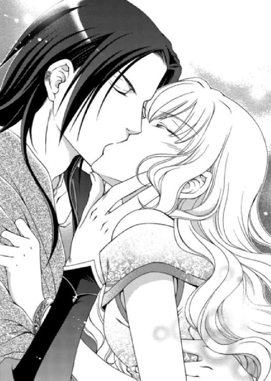
十分すぎるほど唇を重ね合わせてから、身体が離された。
だが腰が砕けたように痺れていて、ルセリアはアルバトルの腕を摑んで体勢を整えた。
「も......もう！」
気恥ずかしさから漏れた言葉などアルバトルには聞こえていないのか、彼はルセリアを引き寄せる。
「そなたの姿がここにあって、安堵した」
アルバトルはどこかホッとした表情を一瞬浮かべる。そこにはいつもの不機嫌さも冷淡さもなく、温かみが感じられた。
「アルバトル......」
「そなたは俺だけの花嫁だ。いや、そなたは昔から俺だけの花嫁だが」
そう宣言して自信たっぷりに笑うアルバトルにつられ、ルセリアも思わず微笑していた。
悲しみに涙していたあの少年の顔と、傲慢で鼻持ちならないアルバトルは似ても似つかない。
だが、もし、初恋の少年が本当にアルバトルだったら......とルセリアは思う。
想像するとアルバトルが愛おしく思えてくるから不思議だ。
「そなた、夕食はもうすませたのか？」
「いいえ。アルバトルが帰ってくるのを待っていたもの」
「では、用意させよう」
自分の運命がどこに向かうのか、今は想像もつかない。
このままアルバトルの花嫁となり、彼の側で一生を過ごすことになるのか。それとも亡き母が告げたように、どこかへ旅立つ時が来るのか。
「ああ、ルセリア。明日は午後からこの俺が街を案内してやろう」
「ええっ！ どういう風の吹き回しなの？」
「なんだ、気に入らないのか」
「ううん。楽しみにしてる」
けれど、ルセリアの心は乱れてはいなかった。
どんなときもアルバトルが側にいて、きっとルセリアを見守ってくれる。
今、唯一、信じられることだったから。
ＥＮＤ．
まずは、あけましておめでとうございます！
そして、はじめましての方も以前からご存じの方も、こんにちは、あすかと申します。
前作から一年あまり経ちました。公私ともにいろいろあって、ようやく七作目を出していただけたことを、本当に嬉しく思います。ご尽力下さった皆様、ずっと応援してくださったファンの皆様、心から感謝いたします。
今回は少女漫画ちっくな世界観と、まずはラブという作品を目指しました。ラブ中心のお話が書きたかったので、本当に楽しく書き上げることができました。
一番書きやすかったのは、アルバトルです。彼の言動や行動には迷うことがなかったですね。
他のキャラも手はかからなかったのですが、唯一最後まで二転三転したのがレイです。どういう役割を持たせるのか、お話での立ち位置という部分では迷いはなかったのですが、その性格に悩みました。
素直な感じにすると、周囲の濃いキャラに埋もれてしまって目立たなくなり、ちょっと濃いめにすると逆に浮いてしまって困りました。しかもレイは名前まで二転三転したんです。
どうして彼だけこんなにも手がかかったのかわからないのですが、たまにこういうキャラがいます（笑）。
どういうわけか昔からキャラの名前を考えるのが本当に苦手なくせに、自分でつけた名前がキャラに似合わない、違和感があったりすると、二度三度と換えた末、ギリギリでまた変更をかけたりも。
すんなり決まる方がまれなんですよね。
自分でもその違和感の基準はどこにあるのか、謎なんですが、こういうキャラの性格にこの名前は似合わない......と、感じてしまうんです。改稿のたびに名前が変わるなんて、ちょっと問題なんですが（汗）。
でも最終的にしっくりくる名前になると、喉に引っかかった棘が取れたみたいな、気分になれます。変なこだわりですね。
子供の頃からエジプトが好きで、ずっと旅行に行きたかったのですが、今年こそはと計画を立て始めた頃、テロ事件があり断念。代わりに数年前、中東のドバイに十日ほど滞在しました。日本よりも治安がよく、オイルマネーでどんなふうに国内が潤っているのかを知り、感動。
以来、ドバイのファンになりました。夕日を背に何処までも続く黄金の砂漠と、睫のやたら長いらくだに乗った日は貴重な思い出です。
そのせいか私が書く砂漠ものの原点はどの作品もドバイに繫がるようです。
いつかエジプトへと願いつつ、またドバイに行きたいですね。
イラストは由貴海里先生です。格好良くも色っぽいアルバトルや、超キュートなルセリアを描いてくださり、感無量です。
できあがった美しい表紙を毎日眺めて、あれもこれも重なった仕事を乗り切りました♪ この度は本当にありがとうございました。
また、今作より担当様が変わりました。前担当のＵ様、言葉では言い尽くせないほど、感謝しております。今まで本当にありがとうございました。
そして新担当のＭ様。この作品ができあがるまで、何度も熱いチェックをありがとうございました。Ｍ様の鋭い突っ込みのたび、新たな活力になりました。
この作品が無事に発刊までこぎつけられたのもひとえにＭ様のおかげです。まだまだ未熟な私ですが、これからも熱きご指導のほどお願いします。
編集部宛にこちらの作品のご感想＋80円切手同封の方に、番外ショートストーリーをお送りする予定にしております。お返事にはかなり時間がかかるのですが、それでもいいよ～とおっしゃってくださる心優しい方は、ぜひ感想を送ってやってください。
皆様の一声が私の創作意欲に繫がります。
また以前の作品「刻の王国」は凪かすみ先生、「プリンセスロード」は香坂ゆう先生のカラーイラスト付きの番外小冊子をお送りしております。特にいつまでという期限はございませんので、読んでみたい方はそれぞれの作品の感想と切手を編集部宛にお送りくださいね。
美麗な小冊子とともに刻ダムとプリロの同人誌（昨年の十二月に同人誌を出しました）についてのお知らせも併せてお送りしたいと思います♪
この作品を少しでも楽しんで頂けたことを心から願いつつ、また皆様にお会いできることを楽しみにしています。
ここまで読んでくださって本当にありがとうございました。
あすか
電子版 ビーズログ文庫
砂漠の薔薇と海の星
灼熱の悪魔はささやく
著者／あすか
イラスト／由貴海里
2013年7月30日電子版ver.1.0発行
2015年2月28日電子版ver.1.1発行
発行人 青柳昌行
発行 株式会社KADOKAWA
〒102-8177 東京都千代田区富士見2-13-3
電話 0570-060-555（ナビダイヤル）
http://www.kadokawa.co.jp
企画・制作 エンターブレイン
デザイン 行成公江
(c)2010 Asuka
本電子書籍はビーズログ文庫『砂漠の薔薇と海の星 灼熱の悪魔はささやく』（2010年1月29日発行 初刷）を元にして制作しております。